- Jacques-Joseph Moreau de ToursDu hachisch et de l'aliénation mentale1845
Du hachisch et de l'aliénation mentale: études psychologiques
Moreau de Tours, Jacques-Joseph · 1845 · francés
Cannabis
Estudio psiquiátrico pionero que usó el hachís para comprender la locura.
Ver ficha del libro

Phantastica: Die betäubenden und erregenden Genussmittel
Lewin, Louis · 1924 · alemán
GeneralMescalina
Clasificación farmacológica clásica de las sustancias psicoactivas, incluida la categoría de los fantásticos.
Ver ficha del libro
- Kurt BeringerDer Meskalinrausch1927
Der Meskalinrausch: seine Geschichte und Erscheinungsweise
Beringer, Kurt · 1927 · alemán
Mescalina
Investigación psiquiátrica alemana clásica sobre la intoxicación por mescalina.
Ver ficha del libro
- Heinrich KlüverMescal1928
Mescal: The 'Divine' Plant and Its Psychological Effects
Klüver, Heinrich · 1928 · inglés
Mescalina
Estudio psicológico pionero de las constantes visuales inducidas por mescalina.
Ver ficha del libro
- Hanscarl LeunerDie experimentelle Psychose1962
Die experimentelle Psychose
Leuner, Hanscarl · 1962 · alemán
LSDPsilocibina
Estudio del modelo de psicosis experimental inducida por alucinógenos.
Ver ficha del libro

LSD: The Consciousness-Expanding Drug
Solomon, David (ed.) · 1964 · inglés
LSD
Antología temprana con textos científicos y testimoniales sobre el LSD, prologada por Leary.
Ver ficha del libro
- Gunther M. Weil, Ralph Metzner y Timothy Leary (eds.)The Psychedelic Reader1965
The Psychedelic Reader
Weil, Gunther M.; Metzner, Ralph; Leary, Timothy (eds.) · 1965 · inglés
LSDPsilocibina
Selección de artículos de la Psychedelic Review, la primera revista del campo.
Ver ficha del libro

The Varieties of Psychedelic Experience
Masters, R. E. L.; Houston, Jean · 1966 · inglés
LSDGeneral
Estudio de cientos de sesiones que clasifica los niveles de la experiencia psicodélica.
Ver ficha del libro
- Daniel H. Efron, Bo Holmstedt y Nathan S. Kline (eds.)Ethnopharmacologic Search for Psychoactive Drugs1967
Ethnopharmacologic Search for Psychoactive Drugs
Efron, Daniel H.; Holmstedt, Bo; Kline, Nathan S. (eds.) · 1967 · inglés
GeneralAyahuascaDMT
Actas del simposio de 1967 que reunió a etnobotánicos y químicos en torno a plantas psicoactivas.
Ver ficha del libro
- Roger Heim y otrosNouvelles investigations sur les champignons hallucinogènes1967
Nouvelles investigations sur les champignons hallucinogènes
Heim, Roger et al. · 1967 · francés
Psilocibina
Continuación científica de los estudios de Heim sobre los hongos alucinógenos mexicanos.
Ver ficha del libro

The Hallucinogens
Hoffer, Abram; Osmond, Humphry · 1967 · inglés
LSDMescalinaGeneral
Tratado de dos pioneros canadienses sobre la química, la clínica y la experiencia de los alucinógenos.
Ver ficha del libro
Altered States of Consciousness
Tart, Charles T. (ed.) · 1969 · inglés
General
Antología fundacional sobre estados alterados, con varios capítulos dedicados a los psicodélicos.
Ver ficha del libro
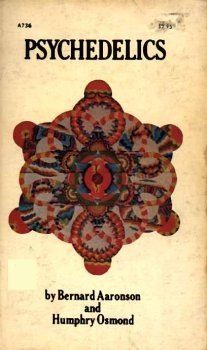
Psychedelics: The Uses and Implications of Hallucinogenic Drugs
Aaronson, Bernard; Osmond, Humphry (eds.) · 1970 · inglés
General
Volumen académico sobre usos religiosos, terapéuticos y sociales de los alucinógenos.
Ver ficha del libro

On Being Stoned: A Psychological Study of Marijuana Intoxication
Tart, Charles T. · 1971 · inglés
Cannabis
Estudio psicológico sistemático de los efectos subjetivos del cannabis.
Ver ficha del libro
- William EmbodenNarcotic Plants1972
Narcotic Plants
Emboden, William · 1972 · inglés
General
Catálogo ilustrado de plantas narcóticas y alucinógenas y su historia.
Ver ficha del libro
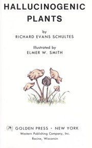
Hallucinogenic Plants: A Golden Guide
Schultes, Richard Evans · 1976 · inglés
General
Guía de bolsillo ilustrada sobre las principales plantas alucinógenas del mundo.
Ver ficha del libro

Psychedelics Encyclopedia
Stafford, Peter · 1977 · inglés
General
Obra de referencia sobre la historia, química y efectos de las principales sustancias psicodélicas.
Ver ficha del libro
- Paul StametsPsilocybe Mushrooms & Their Allies1978
Psilocybe Mushrooms & Their Allies
Stamets, Paul · 1978 · inglés
Psilocibina
Primera guía de campo de Stamets sobre hongos psilocibios norteamericanos.
Ver ficha del libro

Psychedelic Drugs Reconsidered
Grinspoon, Lester; Bakalar, James B. · 1979 · inglés
GeneralLSD
Revisión académica equilibrada de la historia, los efectos, los riesgos y los usos de los psicodélicos.
Ver ficha del libro
- Gastón GuzmánThe Genus Psilocybe1983
The Genus Psilocybe
Guzmán, Gastón · 1983 · inglés
Psilocibina
Monografía taxonómica de referencia del micólogo mexicano sobre el género Psilocybe.
Ver ficha del libro

The Gateway to Inner Space: Sacred Plants, Mysticism and Psychotherapy. A Festschrift in Honor of Albert Hofmann
Rätsch, Christian (ed.) · 1989 · inglés
GeneralLSD
Volumen de homenaje a Hofmann con ensayos sobre plantas sagradas, mística y psicoterapia.
Ver ficha del libro
- Thomas J. Riedlinger (eds.)The Sacred Mushroom Seeker1990
The Sacred Mushroom Seeker: Essays for R. Gordon Wasson
Riedlinger, Thomas J. (ed.) · 1990 · inglés
PsilocibinaAmanita
Ensayos en homenaje a Wasson escritos por colegas y discípulos.
Ver ficha del libro
Pharmako/Poeia: Plant Powers, Poisons, and Herbcraft
Pendell, Dale · 1995 · inglés
General
Mezcla de poesía, botánica y farmacología sobre plantas de poder y venenos.
Ver ficha del libro

Psilocybin Mushrooms of the World: An Identification Guide
Stamets, Paul · 1996 · inglés
Psilocibina
Guía de identificación de las especies de hongos psilocibios del mundo.
Ver ficha del libro
- Torsten PassiePsycholytic and Psychedelic Therapy Research 1931–19951997
Psycholytic and Psychedelic Therapy Research 1931–1995: A Complete International Bibliography
Passie, Torsten · 1997 · inglés
General
Bibliografía internacional exhaustiva de la investigación terapéutica con psicodélicos.
Ver ficha del libro
- Christian RätschEnzyklopädie der psychoaktiven Pflanzen1998
Enzyklopädie der psychoaktiven Pflanzen
Rätsch, Christian · 1998 · alemán
General
Monumental enciclopedia etnobotánica de plantas psicoactivas, su química y sus usos.
Ver ficha del libro
- Richard RudgleyThe Encyclopaedia of Psychoactive Substances1998
The Encyclopaedia of Psychoactive Substances
Rudgley, Richard · 1998 · inglés
General
Diccionario enciclopédico de sustancias psicoactivas naturales y sintéticas.
Ver ficha del libro
- Kenneth R. Alper y Stanley D. Glick (eds.)Ibogaine2001
Ibogaine: Proceedings from the First International Conference (The Alkaloids, vol. 56)
Alper, Kenneth R.; Glick, Stanley D. (eds.) · 2001 · inglés
Ibogaína
Referencia científica sobre química, farmacología y uso de la ibogaína contra la adicción.
Ver ficha del libro
- Charles S. Grob (eds.)Hallucinogens2002
Hallucinogens: A Reader
Grob, Charles S. (ed.) · 2002 · inglés
General
Antología de ensayos sobre historia, chamanismo, terapia y ciencia de los alucinógenos.
Ver ficha del libro

Pharmako/Dynamis: Stimulating Plants, Potions, and Herbcraft
Pendell, Dale · 2002 · inglés
General
Segundo volumen de la trilogía, dedicado a estimulantes y excitantes vegetales.
Ver ficha del libro

Pharmako/Gnosis: Plant Teachers and the Poison Path
Pendell, Dale · 2005 · inglés
GeneralAyahuascaDMTSalvia
Tercer volumen, centrado en las plantas maestras y los enteógenos.
Ver ficha del libro

Psychedelic Medicine: New Evidence for Hallucinogenic Substances as Treatments
Winkelman, Michael J.; Roberts, Thomas B. (eds.) · 2007 · inglés
General
Obra en dos volúmenes que reunió la evidencia clínica disponible a comienzos del renacimiento psicodélico.
Ver ficha del libro
- Beatriz Caiuby Labate, Isabel Santana de Rose y Rafael Guimarães dos SantosAyahuasca Religions2009
Ayahuasca Religions: A Comprehensive Bibliography and Critical Essays
Labate, Beatriz Caiuby; Rose, Isabel Santana de; Santos, Rafael Guimarães dos · 2009 · inglés
Ayahuasca
Bibliografía comentada sobre el Santo Daime, la UDV y la Barquinha.
Ver ficha del libro
Neuropsychedelia: The Revival of Hallucinogen Research since the Decade of the Brain
Langlitz, Nicolas · 2012 · inglés
PsilocibinaGeneral
Etnografía de laboratorios en Suiza y EE. UU. donde se reanudó la investigación con alucinógenos.
Ver ficha del libro
- Cameron Adams, David Luke, Anna Waldstein, Ben Sessa y David King (eds.)Breaking Convention2013
Breaking Convention: Essays on Psychedelic Consciousness
Adams, Cameron; Luke, David; Waldstein, Anna; Sessa, Ben; King, David (eds.) · 2013 · inglés
General
Ensayos surgidos de la conferencia británica multidisciplinar Breaking Convention.
Ver ficha del libro
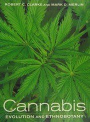
Cannabis: Evolution and Ethnobotany
Clarke, Robert C.; Merlin, Mark D. · 2013 · inglés
Cannabis
Obra de referencia sobre la evolución, domesticación y usos humanos del cannabis.
Ver ficha del libro
- Jack Hunter y David Luke (eds.)Talking with the Spirits2014
Talking with the Spirits: Ethnographies from Between the Worlds
Hunter, Jack; Luke, David (eds.) · 2014 · inglés
GeneralAyahuasca
Etnografías sobre la comunicación con espíritus, incluidos contextos con plantas visionarias.
Ver ficha del libro
- Dave King, David Luke, Ben Sessa, Cameron Adams y Aimee Tollan (eds.)Neurotransmissions2015
Neurotransmissions: Essays on Psychedelics from Breaking Convention
King, Dave; Luke, David; Sessa, Ben; Adams, Cameron; Tollan, Aimee (eds.) · 2015 · inglés
General
Segunda recopilación de ponencias de Breaking Convention sobre ciencia, cultura y política psicodélica.
Ver ficha del libro

Otherworlds: Psychedelics and Exceptional Human Experience
Luke, David · 2017 · inglés
GeneralDMT
Revisión académica sobre psicodélicos y experiencias parapsicológicas o excepcionales.
Ver ficha del libro
Behavioral Neurobiology of Psychedelic Drugs
Halberstadt, Adam L.; Vollenweider, Franz X.; Nichols, David E. (eds.) · 2018 · inglés
General
Volumen científico sobre mecanismos neurobiológicos y efectos conductuales de los psicodélicos.
Ver ficha del libro
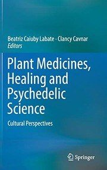
Plant Medicines, Healing and Psychedelic Science: Cultural Perspectives
Labate, Beatriz Caiuby; Cavnar, Clancy (eds.) · 2018 · inglés
GeneralAyahuasca
Estudios culturales sobre medicinas vegetales y su encuentro con la ciencia psicodélica.
Ver ficha del libro

Advances in Psychedelic Medicine: State-of-the-Art Therapeutic Applications
Winkelman, Michael J.; Sessa, Ben (eds.) · 2019 · inglés
General
Revisión de las aplicaciones terapéuticas más actuales de los psicodélicos.
Ver ficha del libro

Psychedelic Mysteries of the Feminine: Creativity, Ecstasy, and Healing
Papaspyrou, Maria; Baldini, Chiara; Luke, David (eds.) · 2019 · inglés
General
Ensayos sobre lo femenino, la sexualidad y la sanación en la historia y práctica psicodélicas.
Ver ficha del libro

DMT Entity Encounters: Dialogues on the Spirit Molecule
Luke, David; Spowers, Rory (eds.) · 2021 · inglés
DMT
Diálogos entre investigadores sobre los encuentros con entidades bajo DMT.
Ver ficha del libro

Handbook of Medical Hallucinogens
Grob, Charles S.; Grigsby, Jim (eds.) · 2021 · inglés
General
Manual académico sobre farmacología, investigación clínica y aplicaciones médicas de los alucinógenos.
Ver ficha del libro
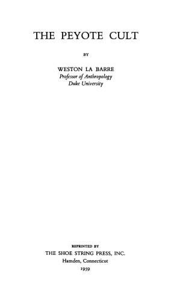
The Peyote Cult
La Barre, Weston · 1938 · inglés
Mescalina
Estudio pionero sobre el uso religioso del peyote entre pueblos nativos norteamericanos.
Ver ficha del libro
- Mircea EliadeLe chamanisme et les techniques archaïques de l'extase1951
Le chamanisme et les techniques archaïques de l'extase
Eliade, Mircea · 1951 · francés
General
Estudio comparativo clásico sobre el chamanismo y las técnicas para alcanzar el trance.
Ver ficha del libro
- Valentina Pavlovna Wasson y R. Gordon WassonMushrooms, Russia and History1957
Mushrooms, Russia and History
Wasson, Valentina Pavlovna; Wasson, R. Gordon · 1957 · inglés
PsilocibinaAmanita
Obra fundacional de la etnomicología que incluye el relato de la velada mazateca con María Sabina.
Ver ficha del libro
- Roger Heim y R. Gordon WassonLes champignons hallucinogènes du Mexique1958
Les champignons hallucinogènes du Mexique
Heim, Roger; Wasson, R. Gordon · 1958 · francés
Psilocibina
Monografía científica pionera sobre la etnología, taxonomía y química de los hongos sagrados mexicanos.
Ver ficha del libro
- Fernando BenítezLos hongos alucinantes1964
Los hongos alucinantes
Benítez, Fernando · 1964 · español
Psilocibina
Crónica etnográfica sobre los hongos sagrados en la sierra mazateca y la fiebre que despertó su descubrimiento.
Ver ficha del libro
- Gerardo Reichel-DolmatoffDesana1968
Desana: simbolismo de los indios tukano del Vaupés
Reichel-Dolmatoff, Gerardo · 1968 · español
Ayahuasca
Etnografía de la cosmología desana, en la que el yajé ocupa un lugar central.
Ver ficha del libro

En la tierra mágica del peyote
Benítez, Fernando · 1968 · español
Mescalina
Relato etnográfico de la peregrinación huichol en busca del peyote.
Ver ficha del libro

Soma: Divine Mushroom of Immortality
Wasson, R. Gordon · 1968 · inglés
Amanita
Identifica el soma del Rigveda con la Amanita muscaria a partir de textos védicos y etnografía.
Ver ficha del libro
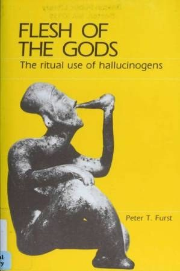
Flesh of the Gods: The Ritual Use of Hallucinogens
Furst, Peter T. (ed.) · 1972 · inglés
General
Antología antropológica sobre el uso ritual de alucinógenos en distintas culturas.
Ver ficha del libro
- Marlene Dobkin de RiosVisionary Vine1972
Visionary Vine: Hallucinogenic Healing in the Peruvian Amazon
Dobkin de Rios, Marlene · 1972 · inglés
Ayahuasca
Estudio de los curanderos de ayahuasca en Iquitos y su práctica terapéutica.
Ver ficha del libro

Hallucinogens and Shamanism
Harner, Michael J. (ed.) · 1973 · inglés
AyahuascaGeneral
Ensayos sobre el uso de alucinógenos en el chamanismo sudamericano y europeo.
Ver ficha del libro
- R. Gordon Wasson, George Cowan, Florence Cowan y Willard RhodesMaría Sabina and Her Mazatec Mushroom Velada1974
María Sabina and Her Mazatec Mushroom Velada
Wasson, R. Gordon; Cowan, George; Cowan, Florence; Rhodes, Willard · 1974 · inglés
Psilocibina
Transcripción y traducción de una ceremonia con hongos de María Sabina, acompañada de grabaciones.
Ver ficha del libro
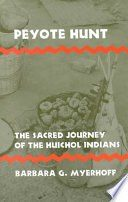
Peyote Hunt: The Sacred Journey of the Huichol Indians
Myerhoff, Barbara G. · 1974 · inglés
Mescalina
Etnografía de la peregrinación huichol a Wirikuta para recolectar peyote.
Ver ficha del libro

The Shaman and the Jaguar: A Study of Narcotic Drugs Among the Indians of Colombia
Reichel-Dolmatoff, Gerardo · 1975 · inglés
AyahuascaDMT
Estudio del uso de yajé y rapés entre pueblos indígenas colombianos.
Ver ficha del libro
Hallucinogens and Culture
Furst, Peter T. · 1976 · inglés
General
Síntesis antropológica sobre el papel de los alucinógenos en las culturas indígenas.
Ver ficha del libro
Vida de María Sabina: la sabia de los hongos
Estrada, Álvaro · 1977 · español
Psilocibina
Autobiografía oral de la curandera mazateca recogida por un escritor de su misma lengua.
Ver ficha del libro
- Jonathan Ott y Jeremy Bigwood (eds.)Teonanácatl1978
Teonanácatl: Hallucinogenic Mushrooms of North America
Ott, Jonathan; Bigwood, Jeremy (eds.) · 1978 · inglés
Psilocibina
Actas de una conferencia sobre botánica, química y usos de los hongos alucinógenos norteamericanos.
Ver ficha del libro

Wizard of the Four Winds: A Shaman's Story
Sharon, Douglas · 1978 · inglés
Mescalina
Etnografía sobre un curandero peruano que trabaja con el cactus San Pedro.
Ver ficha del libro
- Richard Evans Schultes y Albert HofmannPlants of the Gods1979
Plants of the Gods: Origins of Hallucinogenic Use
Schultes, Richard Evans; Hofmann, Albert · 1979 · inglés
General
Clásico ilustrado sobre las plantas alucinógenas del mundo y sus usos rituales.
Ver ficha del libro

Shamanic Voices: A Survey of Visionary Narratives
Halifax, Joan · 1979 · inglés
General
Antología de testimonios chamánicos de distintos continentes, incluido el de María Sabina.
Ver ficha del libro

Peyote: The Divine Cactus
Anderson, Edward F. · 1980 · inglés
Mescalina
Monografía botánica, química y cultural sobre el peyote.
Ver ficha del libro

The Way of the Shaman
Harner, Michael · 1980 · inglés
AyahuascaGeneral
Manual de chamanismo básico que parte de las experiencias del autor con ayahuasca entre los conibo.
Ver ficha del libro

The Wondrous Mushroom: Mycolatry in Mesoamerica
Wasson, R. Gordon · 1980 · inglés
Psilocibina
Estudio del culto a los hongos sagrados en Mesoamérica a través de la historia, el arte y la etnografía.
Ver ficha del libro
Bwiti: An Ethnography of the Religious Imagination in Africa
Fernandez, James W. · 1982 · inglés
Ibogaína
Monumental etnografía del culto bwiti entre los fang, donde la iboga es sacramento.
Ver ficha del libro
- Marlene Dobkin de RiosHallucinogens1984
Hallucinogens: Cross-Cultural Perspectives
Dobkin de Rios, Marlene · 1984 · inglés
General
Comparativa transcultural del uso de plantas alucinógenas en distintas sociedades.
Ver ficha del libro

Persephone's Quest: Entheogens and the Origins of Religion
Wasson, R. Gordon; Kramrisch, Stella; Ott, Jonathan; Ruck, Carl A. P. · 1986 · inglés
AmanitaGeneral
Ensayos sobre el papel de los enteógenos en el origen de las religiones antiguas.
Ver ficha del libro
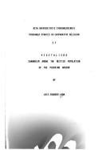
Vegetalismo: Shamanism among the Mestizo Population of the Peruvian Amazon
Luna, Luis Eduardo · 1986 · inglés
Ayahuasca
Estudio del chamanismo mestizo amazónico centrado en la ayahuasca y las plantas maestras.
Ver ficha del libro
- Omer C. StewartPeyote Religion1987
Peyote Religion: A History
Stewart, Omer C. · 1987 · inglés
Mescalina
Historia de la religión del peyote y de la Iglesia Nativa Americana.
Ver ficha del libro

Shamanism, Colonialism, and the Wild Man: A Study in Terror and Healing
Taussig, Michael · 1987 · inglés
Ayahuasca
Ensayo antropológico sobre el yagé, el terror colonial y la curación en el Putumayo.
Ver ficha del libro

Where the Gods Reign: Plants and Peoples of the Colombian Amazon
Schultes, Richard Evans · 1988 · inglés
AyahuascaGeneral
Fotografías y textos del etnobotánico sobre pueblos y plantas amazónicas.
Ver ficha del libro
- Luis Eduardo Luna y Pablo AmaringoAyahuasca Visions1991
Ayahuasca Visions: The Religious Iconography of a Peruvian Shaman
Luna, Luis Eduardo; Amaringo, Pablo · 1991 · inglés
Ayahuasca
Pinturas visionarias de Pablo Amaringo comentadas por el antropólogo Luis Eduardo Luna.
Ver ficha del libro
- Marlene Dobkin de RiosAmazon Healer1992
Amazon Healer: The Life and Times of an Urban Shaman
Dobkin de Rios, Marlene · 1992 · inglés
Ayahuasca
Retrato de un curandero urbano peruano que trabaja con ayahuasca.
Ver ficha del libro

Food of the Gods: The Search for the Original Tree of Knowledge
McKenna, Terence · 1992 · inglés
PsilocibinaGeneral
Historia especulativa de la relación humana con las plantas y la hipótesis del simio colocado.
Ver ficha del libro

Guiado pela lua: xamanismo e uso ritual da ayahuasca no culto do Santo Daime
MacRae, Edward · 1992 · portugués
Ayahuasca
Estudio antropológico del Santo Daime y su uso ritual de la ayahuasca.
Ver ficha del libro

Vine of the Soul: Medicine Men, Their Plants and Rituals in the Colombian Amazonia
Schultes, Richard Evans; Raffauf, Robert F. · 1992 · inglés
Ayahuasca
Registro fotográfico y etnobotánico de las plantas medicinales y sagradas de la Amazonía colombiana.
Ver ficha del libro
Essential Substances: A Cultural History of Intoxicants in Society
Rudgley, Richard · 1993 · inglés
General
Historia cultural de las sustancias embriagantes en sociedades antiguas y tradicionales.
Ver ficha del libro
- Jochen GartzNarrenschwämme1993
Narrenschwämme: Psychotrope Pilze in Europa
Gartz, Jochen · 1993 · alemán
Psilocibina
Estudio de los hongos psicoactivos europeos, su química y su historia.
Ver ficha del libro

Tales of a Shaman's Apprentice: An Ethnobotanist Searches for New Medicines in the Amazon Rain Forest
Plotkin, Mark J. · 1993 · inglés
AyahuascaGeneral
Memorias de un etnobotánico que aprende de los chamanes amazónicos.
Ver ficha del libro

El hongo y la génesis de las culturas
Fericgla, Josep Maria · 1994 · español
Amanita
Ensayo sobre el papel de la Amanita muscaria en las culturas euroasiáticas.
Ver ficha del libro
- Josep Maria FericglaLos jíbaros, cazadores de sueños1994
Los jíbaros, cazadores de sueños
Fericgla, Josep Maria · 1994 · español
Ayahuasca
Etnografía de los shuar ecuatorianos y su uso de la ayahuasca para acceder al mundo de los espíritus.
Ver ficha del libro
Psychedelic Shamanism: The Cultivation, Preparation, and Shamanic Use of Psychotropic Plants
DeKorne, Jim · 1994 · inglés
DMTGeneral
Mezcla de manual práctico y reflexión sobre el uso chamánico de plantas psicotrópicas.
Ver ficha del libro
- Giorgio SamoriniGli allucinogeni nel mito1995
Gli allucinogeni nel mito: racconti sull'origine delle piante psicoattive
Samorini, Giorgio · 1995 · italiano
General
Recopilación de mitos de origen de plantas psicoactivas de diversas culturas.
Ver ficha del libro
- Chris Bennett, Lynn Osburn y Judy OsburnGreen Gold the Tree of Life1995
Green Gold the Tree of Life: Marijuana in Magic & Religion
Bennett, Chris; Osburn, Lynn; Osburn, Judy · 1995 · inglés
Cannabis
Explora el uso religioso y mágico del cannabis en la historia de distintas culturas.
Ver ficha del libro

Le serpent cosmique: l'ADN et les origines du savoir
Narby, Jeremy · 1995 · francés
Ayahuasca
Un antropólogo relaciona el saber chamánico obtenido con ayahuasca con la biología molecular.
Ver ficha del libro

Magic Mushrooms Around the World: A Scientific Journey Across Cultures and Time
Gartz, Jochen · 1996 · inglés
Psilocibina
Revisión científica de las especies psilocibias del mundo y su uso cultural.
Ver ficha del libro
- Roger Liggenstorfer y Christian Rätsch (eds.)María Sabina1996
María Sabina: Botin der heiligen Pilze
Liggenstorfer, Roger; Rätsch, Christian (eds.) · 1996 · alemán
Psilocibina
Volumen colectivo en alemán sobre la vida y la herencia de la sabia mazateca.
Ver ficha del libro

One River: Explorations and Discoveries in the Amazon Rain Forest
Davis, Wade · 1996 · inglés
AyahuascaGeneral
Narra las expediciones de Schultes y del propio autor en busca de plantas sagradas.
Ver ficha del libro

People of the Peyote: Huichol Indian History, Religion, and Survival
Schaefer, Stacy B.; Furst, Peter T. (eds.) · 1996 · inglés
Mescalina
Volumen colectivo sobre la historia, religión y supervivencia cultural huichol.
Ver ficha del libro
- Josep Maria FericglaAl trasluz de la ayahuasca1997
Al trasluz de la ayahuasca
Fericgla, Josep Maria · 1997 · español
Ayahuasca
Antropología cognitiva de la ayahuasca a partir de investigaciones entre los shuar.
Ver ficha del libro
The Long Trip: A Prehistory of Psychedelia
Devereux, Paul · 1997 · inglés
General
Recorre las evidencias arqueológicas del uso de psicoactivos en la prehistoria.
Ver ficha del libro

Hexenmedizin
Müller-Ebeling, Claudia; Rätsch, Christian; Storl, Wolf-Dieter · 1998 · alemán
General
Estudio sobre las plantas de las brujas europeas, incluidas las solanáceas psicoactivas.
Ver ficha del libro

Ayahuasca: Hallucinogens, Consciousness, and the Spirit of Nature
Metzner, Ralph (ed.) · 1999 · inglés
Ayahuasca
Relatos de experiencias y ensayos científicos sobre la ayahuasca, reeditado como Sacred Vine of Spirits.
Ver ficha del libro
- Giorgio SamoriniAnimali che si drogano2000
Animali che si drogano
Samorini, Giorgio · 2000 · italiano
General
Reúne observaciones de animales que buscan sustancias psicoactivas y reflexiona sobre su sentido.
Ver ficha del libro

Ayahuasca Reader: Encounters with the Amazon's Sacred Vine
Luna, Luis Eduardo; White, Steven F. (eds.) · 2000 · inglés
Ayahuasca
Antología de mitos, testimonios y textos literarios sobre la ayahuasca.
Ver ficha del libro
- Alberto GroismanEu venho da floresta2000
Eu venho da floresta: um estudo sobre o contexto simbólico do uso do Santo Daime
Groisman, Alberto · 2000 · portugués
Ayahuasca
Etnografía de una comunidad del Santo Daime y del simbolismo de su ritual.
Ver ficha del libro
- Michael WinkelmanShamanism2000
Shamanism: The Neural Ecology of Consciousness and Healing
Winkelman, Michael · 2000 · inglés
General
Enfoque neuroantropológico que explica el chamanismo y los estados alterados.
Ver ficha del libro
- Giorgio SamoriniFunghi allucinogeni2001
Funghi allucinogeni: studi etnomicologici
Samorini, Giorgio · 2001 · italiano
PsilocibinaAmanita
Estudios etnomicológicos sobre hongos alucinógenos en la historia y el folclore.
Ver ficha del libro
- Christian RätschMarijuana Medicine2001
Marijuana Medicine: A World Tour of the Healing and Visionary Powers of Cannabis
Rätsch, Christian · 2001 · inglés
Cannabis
Recorrido etnobotánico por los usos medicinales y rituales del cannabis en el mundo.
Ver ficha del libro
Shamans Through Time: 500 Years on the Path to Knowledge
Narby, Jeremy; Huxley, Francis (eds.) · 2001 · inglés
General
Antología de textos de exploradores y antropólogos sobre chamanes a lo largo de cinco siglos.
Ver ficha del libro
- Beatriz Caiuby Labate y Wladimyr Sena Araújo (eds.)O uso ritual da ayahuasca2002
O uso ritual da ayahuasca
Labate, Beatriz Caiuby; Araújo, Wladimyr Sena (orgs.) · 2002 · portugués
Ayahuasca
Obra colectiva de referencia en Brasil sobre los usos indígenas, mestizos y religiosos de la ayahuasca.
Ver ficha del libro
Shamanism and Tantra in the Himalayas
Müller-Ebeling, Claudia; Rätsch, Christian; Shahi, Surendra Bahadur · 2002 · inglés
CannabisGeneral
Documenta el uso de plantas psicoactivas en el chamanismo y el tantra del Himalaya.
Ver ficha del libro

The Antipodes of the Mind: Charting the Phenomenology of the Ayahuasca Experience
Shanon, Benny · 2002 · inglés
Ayahuasca
Análisis psicológico sistemático de cientos de experiencias con ayahuasca.
Ver ficha del libro

Ayahuasca: The Visionary and Healing Powers of the Vine of the Soul
Wilcox, Joan Parisi · 2003 · inglés
Ayahuasca
Testimonios y explicaciones sobre los efectos curativos y visionarios de la ayahuasca.
Ver ficha del libro
- Jerome Rothenberg (eds.)María Sabina2003
María Sabina: Selections
Rothenberg, Jerome (ed.) · 2003 · inglés
Psilocibina
Antología de los cantos chamánicos de María Sabina con textos de contexto.
Ver ficha del libro
- Beatriz Caiuby LabateA reinvenção do uso da ayahuasca nos centros urbanos2004
A reinvenção do uso da ayahuasca nos centros urbanos
Labate, Beatriz Caiuby · 2004 · portugués
Ayahuasca
Etnografía de los nuevos usos urbanos de la ayahuasca en Brasil.
Ver ficha del libro
- Vincent Ravalec, Mallendi y Agnès PaichelerBois sacré2004
Bois sacré: initiation à l'iboga
Ravalec, Vincent; Mallendi; Paicheler, Agnès · 2004 · francés
Ibogaína
Introducción a la iboga y a la tradición bwiti de Gabón, con historia y testimonios.
Ver ficha del libro
Sacred Mushroom of Visions: Teonanácatl
Metzner, Ralph (ed.) · 2004 · inglés
Psilocibina
Antología de relatos y ensayos sobre los hongos psilocibios en ritual y terapia.
Ver ficha del libro
- Beatriz Caiuby Labate y Sandra Lucia Goulart (eds.)O uso ritual das plantas de poder2005
O uso ritual das plantas de poder
Labate, Beatriz Caiuby; Goulart, Sandra Lucia (orgs.) · 2005 · portugués
GeneralAyahuasca
Volumen colectivo sobre los usos rituales de distintas plantas psicoactivas.
Ver ficha del libro

Supernatural: Meetings with the Ancient Teachers of Mankind
Hancock, Graham · 2005 · inglés
AyahuascaDMTGeneral
Relaciona el arte rupestre, los estados visionarios y los encuentros con seres sobrenaturales.
Ver ficha del libro
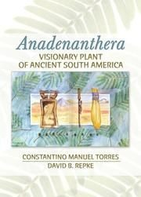
Anadenanthera: Visionary Plant of Ancient South America
Torres, Constantino Manuel; Repke, David B. · 2006 · inglés
DMT
Monografía sobre el uso arqueológico y etnográfico de los rapés de Anadenanthera.
Ver ficha del libro

Plant Spirit Shamanism: Traditional Techniques for Healing the Soul
Heaven, Ross; Charing, Howard G. · 2006 · inglés
AyahuascaMescalina
Prácticas de curación con plantas maestras en tradiciones amazónicas y andinas.
Ver ficha del libro
- Jeremy Narby, Jan Kounen y Vincent RavalecPlantes et chamanisme2008
Plantes et chamanisme: conversations autour de l'ayahuasca et de l'iboga
Narby, Jeremy; Kounen, Jan; Ravalec, Vincent · 2008 · francés
AyahuascaIbogaína
Conversaciones entre un antropólogo, un cineasta y un escritor sobre ayahuasca e iboga.
Ver ficha del libro

Singing to the Plants: A Guide to Mestizo Shamanism in the Upper Amazon
Beyer, Stephan V. · 2009 · inglés
Ayahuasca
Guía detallada del chamanismo mestizo amazónico, sus cantos y sus plantas.
Ver ficha del libro
- Beatriz Caiuby Labate y Henrik Jungaberle (eds.)The Internationalization of Ayahuasca2011
The Internationalization of Ayahuasca
Labate, Beatriz Caiuby; Jungaberle, Henrik (eds.) · 2011 · inglés
Ayahuasca
Ensayos sobre la expansión global de la ayahuasca y sus consecuencias culturales y legales.
Ver ficha del libro

Cactus of Mystery: The Shamanic Powers of the Peruvian San Pedro Cactus
Heaven, Ross · 2012 · inglés
Mescalina
Explora el uso ceremonial y curativo del San Pedro en Perú.
Ver ficha del libro
- Giorgio SamoriniDroghe tribali2012
Droghe tribali
Samorini, Giorgio · 2012 · italiano
General
Panorama del uso tradicional de plantas psicoactivas en sociedades tribales.
Ver ficha del libro

Shamanic Quest for the Spirit of Salvia: The Divinatory, Visionary, and Healing Powers of the Sage of the Seers
Heaven, Ross · 2012 · inglés
Salvia
Investiga el uso mazateco y contemporáneo de la Salvia divinorum.
Ver ficha del libro
- Andrew DawsonSanto Daime2013
Santo Daime: A New World Religion
Dawson, Andrew · 2013 · inglés
Ayahuasca
Estudio sociológico de la religión brasileña del Santo Daime y su expansión.
Ver ficha del libro

Ayahuasca Medicine: The Shamanic World of Amazonian Sacred Plant Healing
Shoemaker, Alan · 2014 · inglés
Ayahuasca
Un estadounidense afincado en Perú describe la práctica curanderil amazónica.
Ver ficha del libro
Ayahuasca Shamanism in the Amazon and Beyond
Labate, Beatriz Caiuby; Cavnar, Clancy (eds.) · 2014 · inglés
Ayahuasca
Estudios antropológicos sobre el chamanismo de la ayahuasca dentro y fuera de la Amazonía.
Ver ficha del libro
- Stacy B. SchaeferAmada's Blessings from the Peyote Gardens of South Texas2015
Amada's Blessings from the Peyote Gardens of South Texas
Schaefer, Stacy B. · 2015 · inglés
Mescalina
Retrato de una comerciante de peyote en Texas y del frágil hábitat del cactus.
Ver ficha del libro
Peyote: History, Tradition, Politics, and Conservation
Labate, Beatriz Caiuby; Cavnar, Clancy (eds.) · 2016 · inglés
Mescalina
Ensayos sobre historia, usos tradicionales, regulación y conservación del peyote.
Ver ficha del libro
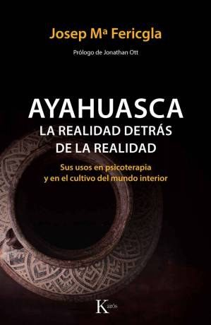
Ayahuasca, la realidad detrás de la realidad
Fericgla, Josep Maria · 2018 · español
Ayahuasca
Reflexiones de un antropólogo sobre la ayahuasca en psicoterapia y en el trabajo interior.
Ver ficha del libro
- Kevin Feeney (eds.)Fly Agaric2020
Fly Agaric: A Compendium of History, Pharmacology, Mythology, & Exploration
Feeney, Kevin (ed.) · 2020 · inglés
Amanita
Compendio colectivo sobre la Amanita muscaria: historia, química, mitología y experiencias.
Ver ficha del libro

Plant Teachers: Ayahuasca, Tobacco, and the Pursuit of Knowledge
Narby, Jeremy; Chanchari Pizuri, Rafael · 2021 · inglés
Ayahuasca
Diálogo entre un antropólogo y un curandero amazónico sobre ayahuasca, tabaco y conocimiento.
Ver ficha del libro
- Maria Betânia B. Albuquerque y Wladimyr Sena Araújo (eds.)Mestres da ayahuasca2023
Mestres da ayahuasca: em contextos religiosos
Albuquerque, Maria Betânia B.; Araújo, Wladimyr Sena (orgs.) · 2023 · portugués
Ayahuasca
Colectivo sobre los maestros y líderes de las religiones ayahuasqueras brasileñas.
Ver ficha del libro
- Lucas de Oliveira Maia y otros (eds.)Visões multidisciplinares da ayahuasca2023
Visões multidisciplinares da ayahuasca
Maia, Lucas de Oliveira et al. (orgs.) · 2023 · portugués
Ayahuasca
Obra colectiva brasileña que une humanidades, psicoanálisis y ciencias de la salud en torno a la ayahuasca.
Ver ficha del libro
- Beatriz Caiuby Labate, Henrique Fernandes Antunes, Nidia A. Olvera Hernández y Clancy Cavnar (eds.)Psychedelic Plant Medicines of the Americas2026
Psychedelic Plant Medicines of the Americas: History, Traditions, and Indigenous Voices
Labate, Beatriz Caiuby; Antunes, Henrique Fernandes; Olvera Hernández, Nidia A.; Cavnar, Clancy (eds.) · 2026 · inglés
GeneralAyahuascaMescalinaPsilocibina
Antología con voces indígenas y académicas sobre las tradiciones de plantas psicoactivas en América.
Ver ficha del libro
- Robert S. de RoppDrugs and the Mind1957
Drugs and the Mind
de Ropp, Robert S. · 1957 · inglés
GeneralLSDMescalina
Temprana obra divulgativa sobre la química de la mente que incluye la mescalina y el entonces reciente LSD.
Ver ficha del libro
LSD
Alpert, Richard; Cohen, Sidney; Schiller, Lawrence · 1966 · inglés
LSD
Obra de divulgación que contrapone las visiones de un entusiasta y un psiquiatra crítico sobre el LSD.
Ver ficha del libro
- Peter G. Stafford y Bonnie H. GolightlyLSD1967
LSD: The Problem-Solving Psychedelic
Stafford, Peter G.; Golightly, Bonnie H. · 1967 · inglés
LSD
Libro de los años sesenta sobre el uso del LSD para la creatividad, la resolución de problemas y la terapia.
Ver ficha del libro
The Natural Mind
Weil, Andrew · 1972 · inglés
GeneralCannabis
Defiende que el deseo de alterar la conciencia es un impulso humano natural y analiza el papel de las drogas en él.
Ver ficha del libro
- Ronald K. SiegelIntoxication1989
Intoxication: Life in Pursuit of Artificial Paradise
Siegel, Ronald K. · 1989 · inglés
General
Estudio sobre la búsqueda de embriaguez en animales y humanos, presentada como un cuarto impulso básico.
Ver ficha del libro
- Ronald K. SiegelFire in the Brain1992
Fire in the Brain: Clinical Tales of Hallucination
Siegel, Ronald K. · 1992 · inglés
General
Casos clínicos y experimentos de un psicofarmacólogo sobre alucinaciones inducidas por drogas y otras causas.
Ver ficha del libro

Mavericks of the Mind: Conversations for the New Millennium
Brown, David Jay; McClen Novick, Rebecca · 1993 · inglés
General
Entrevistas con figuras como Leary, McKenna, Hofmann o Lilly sobre conciencia, psicodélicos y futuro.
Ver ficha del libro

DMT: The Spirit Molecule
Strassman, Rick · 2001 · inglés
DMT
Crónica de los primeros ensayos clínicos con DMT en EE. UU. tras décadas de prohibición y de las vivencias de los voluntarios.
Ver ficha del libro

Psychedelic Information Theory: Shamanism in the Age of Reason
Kent, James L. · 2010 · inglés
GeneralDMT
Propone un modelo informacional y de teoría de sistemas para explicar los efectos de los psicodélicos.
Ver ficha del libro

Hallucinations
Sacks, Oliver · 2012 · inglés
GeneralLSDCannabis
El neurólogo recorre distintos tipos de alucinaciones, incluidas sus propias experiencias juveniles con drogas.
Ver ficha del libro

The New Science of Psychedelics: At the Nexus of Culture, Consciousness, and Spirituality
Brown, David Jay · 2013 · inglés
General
Recopilación de artículos y entrevistas sobre investigación psicodélica, cultura y conciencia.
Ver ficha del libro

Acid Test: LSD, Ecstasy, and the Power to Heal
Shroder, Tom · 2014 · inglés
MDMALSD
Reportaje sobre los pioneros que impulsaron la terapia con MDMA para veteranos y el regreso de la investigación psicodélica.
Ver ficha del libro
Changing Our Minds: Psychedelic Sacraments and the New Psychotherapy
Lattin, Don · 2017 · inglés
General
Periodismo sobre el renacimiento de la terapia psicodélica y sus implicaciones espirituales.
Ver ficha del libro
- Steven Kotler y Jamie WhealStealing Fire2017
Stealing Fire
Kotler, Steven; Wheal, Jamie · 2017 · inglés
General
Ensayo sobre la búsqueda contemporánea de estados alterados, incluidos los inducidos por sustancias psicodélicas.
Ver ficha del libro

Blue Dreams: The Science and the Story of the Drugs That Changed Our Minds
Slater, Lauren · 2018 · inglés
GeneralMDMAPsilocibina
Repaso de la historia de los psicofármacos que incluye capítulos dedicados a los psicodélicos y al MDMA.
Ver ficha del libro

How to Change Your Mind
Pollan, Michael · 2018 · inglés
PsilocibinaLSDGeneral
Periodismo científico y experiencia personal sobre el resurgir de la investigación con psicodélicos y su potencial para la salud mental.
Ver ficha del libro

Alien Information Theory: Psychedelic Drug Technologies and the Cosmic Game
Gallimore, Andrew R. · 2019 · inglés
DMT
Un neurobiólogo computacional especula sobre cómo el DMT revela la construcción cerebral de la realidad.
Ver ficha del libro

Fantastic Fungi: How Mushrooms Can Heal, Shift Consciousness, and Save the Planet
Stamets, Paul (ed.) · 2019 · inglés
Psilocibina
Libro colectivo ligado al documental homónimo sobre ecología fúngica, medicina y hongos psilocibios.
Ver ficha del libro
- Torsten PassieThe Science of Microdosing Psychedelics2019
The Science of Microdosing Psychedelics
Passie, Torsten · 2019 · inglés
LSDPsilocibina
Revisión de lo que se sabe y lo que no sobre las microdosis de psicodélicos, con base farmacológica.
Ver ficha del libro
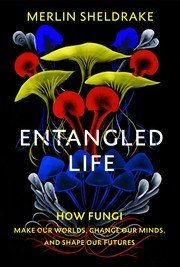
Entangled Life: How Fungi Make Our Worlds, Change Our Minds and Shape Our Futures
Sheldrake, Merlin · 2020 · inglés
PsilocibinaGeneral
Divulgación sobre el reino de los hongos que dedica un capítulo a los hongos psicoactivos y su influencia en la mente humana.
Ver ficha del libro
- Olivier Chambon y Jocelin MorissonLa révolution psychédélique2020
La révolution psychédélique
Chambon, Olivier; Morisson, Jocelin · 2020 · francés
General
Un psiquiatra y un periodista presentan el regreso de los psicodélicos como medicina de la conciencia.
Ver ficha del libro

Psiconautas: viagens com a ciência psicodélica brasileira
Leite, Marcelo · 2021 · portugués
GeneralAyahuasca
Un periodista científico combina su experiencia personal con perfiles de investigadores psicodélicos brasileños.
Ver ficha del libro
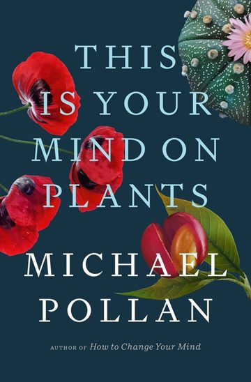
This Is Your Mind on Plants
Pollan, Michael · 2021 · inglés
MescalinaGeneral
Tres ensayos sobre el opio, la cafeína y la mescalina que exploran la relación humana con las plantas que alteran la mente.
Ver ficha del libro
- Antón Gómez-EscolarGuía esencial del renacimiento psicodélico2022
Guía esencial del renacimiento psicodélico
Gómez-Escolar, Antón · 2022 · español
PsilocibinaMDMALSDGeneral
Introducción divulgativa al regreso de los psicodélicos a la medicina y la investigación, con prólogo de Rick Doblin.
Ver ficha del libro

Psyched: Seven Cutting-Edge Psychedelics Changing the World
Siebert, Amanda · 2022 · inglés
GeneralPsilocibinaMDMAKetamina
Guía periodística sobre siete sustancias psicodélicas en pleno auge terapéutico y cultural.
Ver ficha del libro

Reality Switch Technologies: Psychedelics as Tools for the Discovery and Exploration of New Worlds
Gallimore, Andrew R. · 2022 · inglés
DMTGeneral
Ensayo que presenta los psicodélicos como herramientas para cambiar el modelo de mundo que fabrica el cerebro.
Ver ficha del libro

The Psilocybin Connection: Psychedelics, the Transformation of Consciousness, and Evolution on the Planet
Khamsehzadeh, Jahan · 2022 · inglés
Psilocibina
Reflexiona sobre la relación evolutiva entre humanos y hongos psilocibios y su papel en la conciencia.
Ver ficha del libro
- Andrea JungaberleYoga, Tee, LSD2022
Yoga, Tee, LSD: Bewusstseinsveränderung in Wissenschaft und Alltag
Jungaberle, Andrea · 2022 · alemán
GeneralLSD
Una médica alemana explora la alteración de la conciencia con y sin sustancias, desde la ciencia y la vida diaria.
Ver ficha del libro

I Feel Love: MDMA and the Quest for Connection in a Fractured World
Nuwer, Rachel · 2023 · inglés
MDMA
Historia y ciencia del MDMA, desde la pista de baile hasta los ensayos clínicos para el estrés postraumático.
Ver ficha del libro

Psicodélicos y salud mental
de Caso, Irene · 2023 · español
PsilocibinaLSDDMTMDMA
Una neurocientífica revisa aplicaciones terapéuticas y bases cerebrales de los principales psicodélicos.
Ver ficha del libro
- David NuttPsychedelics2023
Psychedelics: The Revolutionary Drugs That Could Change Your Life
Nutt, David · 2023 · inglés
GeneralPsilocibinaMDMALSD
Un neuropsicofarmacólogo británico resume la evidencia sobre usos médicos, mecanismos cerebrales y riesgos de los psicodélicos.
Ver ficha del libro
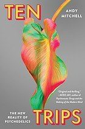
Ten Trips: The New Reality of Psychedelics
Mitchell, Andy · 2023 · inglés
General
Un periodista británico combina diez viajes personales con entrevistas a investigadores del campo.
Ver ficha del libro

Tu cerebro con psicodélicos
Oña, Genís · 2023 · español
GeneralPsilocibinaLSDDMTMDMAMescalina
Explica de forma accesible la farmacología y la neurociencia de los principales psicodélicos.
Ver ficha del libro
- Sean LawlorPsychedelic Revival2024
Psychedelic Revival: Toward a New Paradigm of Healing
Lawlor, Sean · 2024 · inglés
General
Panorama de la historia occidental de los psicodélicos y del cambio de paradigma que propone su uso terapéutico.
Ver ficha del libro
- Marcelo LeiteA ciência encantada de Jurema2025
A ciência encantada de Jurema
Leite, Marcelo · 2025 · portugués
DMT
Investigación periodística sobre la jurema-preta, planta con DMT usada en el nordeste de Brasil, y su ciencia.
Ver ficha del libro
Death by Astonishment: Confronting the Mystery of the World's Strangest Drug
Gallimore, Andrew R. · 2025 · inglés
DMT
Historia y ciencia del DMT que se toma en serio las experiencias de encuentro con entidades.
Ver ficha del libro
- Antón Gómez-EscolarExpande tu mente2025
Expande tu mente: la revolución de los psicodélicos en salud mental
Gómez-Escolar, Antón · 2025 · español
General
Guía accesible sobre el potencial terapéutico, los riesgos y el contexto social de los psicodélicos.
Ver ficha del libro
- Mattha BusbyPsychedelics2025
Psychedelics: A Pocket Primer
Busby, Mattha · 2025 · inglés
General
Introducción breve y de bolsillo a la historia, los usos y la ciencia de los psicodélicos.
Ver ficha del libro
- David Jay Brown y Sara Phinn HuntleyThe Illustrated Field Guide to DMT Entities2025
The Illustrated Field Guide to DMT Entities
Brown, David Jay; Huntley, Sara Phinn · 2025 · inglés
DMT
Catálogo ilustrado de los tipos de seres que describen los usuarios de DMT, basado en relatos recopilados.
Ver ficha del libro
- Carmen AmezcuaTu viaje de sanación psicodélica2025
Tu viaje de sanación psicodélica
Amezcua, Carmen · 2025 · español
PsilocibinaKetaminaAyahuasca
Divulgación sobre el uso de psilocibina, ketamina y ayahuasca frente a ansiedad, depresión y trauma.
Ver ficha del libro
- Dominique NoraVoyage dans les médecines psychédéliques2025
Voyage dans les médecines psychédéliques
Nora, Dominique · 2025 · francés
GeneralLSDMDMAPsilocibina
Un veterano periodista francés recorre el renacimiento de las terapias psicodélicas en psiquiatría.
Ver ficha del libro
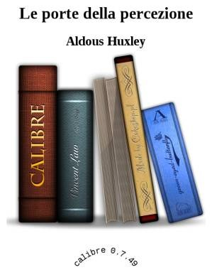
The Doors of Perception
Huxley, Aldous · 1954 · inglés
Mescalina
Ensayo clásico en el que Huxley describe su experiencia con mescalina y reflexiona sobre la percepción.
Ver ficha del libro

Heaven and Hell
Huxley, Aldous · 1956 · inglés
MescalinaGeneral
Continuación filosófica que explora las experiencias visionarias y su relación con el arte y la religión.
Ver ficha del libro
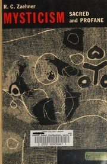
Mysticism Sacred and Profane
Zaehner, R. C. · 1957 · inglés
Mescalina
Respuesta crítica a Huxley que distingue entre tipos de misticismo y cuestiona la vía química.
Ver ficha del libro

The Sacred Mushroom: Key to the Door of Eternity
Puharich, Andrija · 1959 · inglés
Amanita
Mezcla de parapsicología y estudio de la Amanita muscaria en el antiguo Egipto.
Ver ficha del libro
The Joyous Cosmology: Adventures in the Chemistry of Consciousness
Watts, Alan · 1962 · inglés
LSDMescalina
Ensayo poético de Watts sobre la experiencia psicodélica a la luz del pensamiento oriental.
Ver ficha del libro
The Psychedelic Experience: A Manual Based on the Tibetan Book of the Dead
Leary, Timothy; Metzner, Ralph; Alpert, Richard · 1964 · inglés
LSDGeneral
Guía para viajes psicodélicos inspirada en el Bardo Thödol tibetano.
Ver ficha del libro
- Timothy LearyPsychedelic Prayers after the Tao Te Ching1966
Psychedelic Prayers after the Tao Te Ching
Leary, Timothy · 1966 · inglés
LSD
Poemas para acompañar sesiones psicodélicas inspirados en el Tao Te Ching.
Ver ficha del libro
- William BradenThe Private Sea1967
The Private Sea: LSD and the Search for God
Braden, William · 1967 · inglés
LSD
Un periodista explora el significado religioso del LSD en los sesenta.
Ver ficha del libro
- Walter Houston ClarkChemical Ecstasy1969
Chemical Ecstasy: Psychedelic Drugs and Religion
Clark, Walter Houston · 1969 · inglés
LSDPsilocibina
Un psicólogo de la religión examina el potencial místico de los psicodélicos.
Ver ficha del libro

Be Here Now
Ram Dass · 1971 · inglés
LSDGeneral
Libro de culto que narra el paso del autor del LSD a la espiritualidad india, con una guía práctica.
Ver ficha del libro
- Walter BenjaminÜber Haschisch1972
Über Haschisch
Benjamin, Walter · 1972 · alemán
Cannabis
Protocolos y textos del filósofo sobre sus experimentos con hachís y otras sustancias.
Ver ficha del libro

The Invisible Landscape: Mind, Hallucinogens and the I Ching
McKenna, Terence; McKenna, Dennis · 1975 · inglés
PsilocibinaDMT
Especulación teórica sobre mente, alucinógenos y tiempo a partir de La Chorrera.
Ver ficha del libro
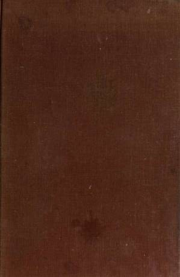
Moksha: Writings on Psychedelics and the Visionary Experience
Huxley, Aldous · 1977 · inglés
MescalinaLSD
Recopilación póstuma de cartas y textos de Huxley sobre psicodélicos.
Ver ficha del libro
- Stanislav GrofBeyond the Brain1985
Beyond the Brain: Birth, Death, and Transcendence in Psychotherapy
Grof, Stanislav · 1985 · inglés
LSD
Propone una psicología transpersonal basada en la investigación con estados no ordinarios.
Ver ficha del libro
- Albert HofmannEinsichten, Ausblicke1986
Einsichten, Ausblicke
Hofmann, Albert · 1986 · alemán
LSDGeneral
Reflexiones del químico suizo sobre la naturaleza, la conciencia y la realidad.
Ver ficha del libro
The Archaic Revival
McKenna, Terence · 1991 · inglés
PsilocibinaDMT
Ensayos y entrevistas sobre chamanismo, plantas visionarias y renovación cultural.
Ver ficha del libro
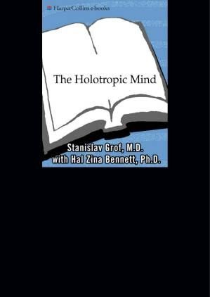
The Holotropic Mind
Grof, Stanislav; Bennett, Hal Zina · 1992 · inglés
LSDGeneral
Exposición divulgativa del modelo de conciencia de Grof surgido de la investigación con LSD.
Ver ficha del libro
- Rupert Sheldrake, Terence McKenna y Ralph AbrahamTrialogues at the Edge of the West1992
Trialogues at the Edge of the West: Chaos, Creativity, and the Resacralization of the World
Sheldrake, Rupert; McKenna, Terence; Abraham, Ralph · 1992 · inglés
General
Conversaciones entre un biólogo, un etnobotánico y un matemático sobre conciencia y naturaleza.
Ver ficha del libro
- Jonathan OttThe Age of Entheogens & The Angels' Dictionary1995
The Age of Entheogens & The Angels' Dictionary
Ott, Jonathan · 1995 · inglés
General
Ensayo sobre el papel de los enteógenos en la religión y un diccionario satírico.
Ver ficha del libro
- Robert Forte (eds.)Entheogens and the Future of Religion1997
Entheogens and the Future of Religion
Forte, Robert (ed.) · 1997 · inglés
General
Ensayos de Hofmann, Wasson, Smith y otros sobre el futuro religioso de los enteógenos.
Ver ficha del libro
- Jonathan OttPharmacophilia, or The Natural Paradises1997
Pharmacophilia, or The Natural Paradises
Ott, Jonathan · 1997 · inglés
General
Defensa de los paraísos naturales frente a la prohibición, en respuesta a Baudelaire.
Ver ficha del libro
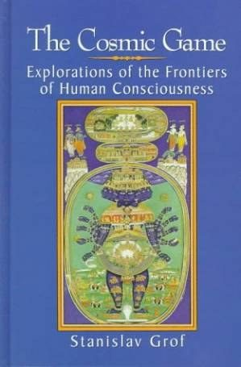
The Cosmic Game: Explorations of the Frontiers of Human Consciousness
Grof, Stanislav · 1998 · inglés
LSDGeneral
Visión metafísica derivada de décadas de trabajo con estados psicodélicos y holotrópicos.
Ver ficha del libro
Cleansing the Doors of Perception: The Religious Significance of Entheogenic Plants and Chemicals
Smith, Huston · 2000 · inglés
General
Un historiador de las religiones evalúa el valor espiritual de los enteógenos.
Ver ficha del libro

Dark Night, Early Dawn: Steps to a Deep Ecology of Mind
Bache, Christopher M. · 2000 · inglés
LSD
Reflexión filosófica sobre la conciencia colectiva surgida de las sesiones de LSD del autor.
Ver ficha del libro

Psychology of the Future: Lessons from Modern Consciousness Research
Grof, Stanislav · 2000 · inglés
LSDGeneral
Síntesis de las aportaciones de la investigación psicodélica a la psicología.
Ver ficha del libro
- Dan MerkurThe Mystery of Manna2000
The Mystery of Manna: The Psychedelic Sacrament of the Bible
Merkur, Dan · 2000 · inglés
General
Interpreta el maná bíblico como un sacramento psicoactivo.
Ver ficha del libro
- Thomas B. Roberts (eds.)Psychoactive Sacramentals2001
Psychoactive Sacramentals: Essays on Entheogens and Religion
Roberts, Thomas B. (ed.) · 2001 · inglés
General
Actas de un encuentro sobre el uso de enteógenos en contextos religiosos.
Ver ficha del libro
- Dan MerkurThe Psychedelic Sacrament2001
The Psychedelic Sacrament: Manna, Meditation, and Mystical Experience
Merkur, Dan · 2001 · inglés
General
Rastrea el posible uso de enteógenos en la tradición mística judía y cristiana.
Ver ficha del libro
- John HorganRational Mysticism2003
Rational Mysticism: Spirituality Meets Science in the Search for Enlightenment
Horgan, John · 2003 · inglés
GeneralDMT
Un periodista científico investiga el misticismo, incluida la vía de los psicodélicos.
Ver ficha del libro
Higher Wisdom: Eminent Elders Explore the Continuing Impact of Psychedelics
Walsh, Roger; Grob, Charles S. (eds.) · 2005 · inglés
General
Entrevistas con veteranos de la investigación psicodélica sobre su legado.
Ver ficha del libro

2012: The Return of Quetzalcoatl
Pinchbeck, Daniel · 2006 · inglés
AyahuascaGeneral
Ensayo visionario sobre profecías, chamanismo y psicodélicos en la crisis contemporánea.
Ver ficha del libro
The Ultimate Journey: Consciousness and the Mystery of Death
Grof, Stanislav · 2006 · inglés
LSD
Explora la muerte y el morir desde la investigación psicodélica y las tradiciones espirituales.
Ver ficha del libro
- Martin W. BallSage Spirit2007
Sage Spirit: Salvia Divinorum and the Entheogenic Experience
Ball, Martin W. · 2007 · inglés
Salvia
Propone un marco ritual y espiritual para el uso de la Salvia divinorum.
Ver ficha del libro
Inner Paths to Outer Space: Journeys to Alien Worlds through Psychedelics and Other Spiritual Technologies
Strassman, Rick; Wojtowicz, Slawek; Luna, Luis Eduardo; Frecska, Ede · 2008 · inglés
DMTAyahuasca
Cuatro autores exploran la posibilidad de que los psicodélicos den acceso a otras realidades.
Ver ficha del libro
- James OrocTryptamine Palace2009
Tryptamine Palace: 5-MeO-DMT and the Sonoran Desert Toad
Oroc, James · 2009 · inglés
5-MeO-DMT
Relato personal y reflexión sobre la experiencia con 5-MeO-DMT del sapo del desierto de Sonora.
Ver ficha del libro

Salvia Divinorum: Doorway to Thought-Free Awareness
Arthur, J. D. · 2010 · inglés
Salvia
Explora la salvia como vía hacia estados de conciencia libres de pensamiento.
Ver ficha del libro
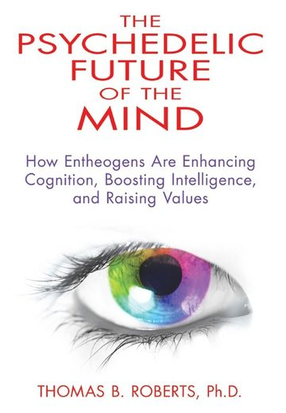
The Psychedelic Future of the Mind
Roberts, Thomas B. · 2013 · inglés
General
Propone que los psicodélicos pueden ampliar la educación, la religión y la ciencia cognitiva.
Ver ficha del libro

The Toad and the Jaguar: A Field Report of Underground Research on a Visionary Medicine
Metzner, Ralph · 2013 · inglés
5-MeO-DMT
Informe sobre investigación clandestina con 5-MeO-DMT y sus usos psicoespirituales.
Ver ficha del libro
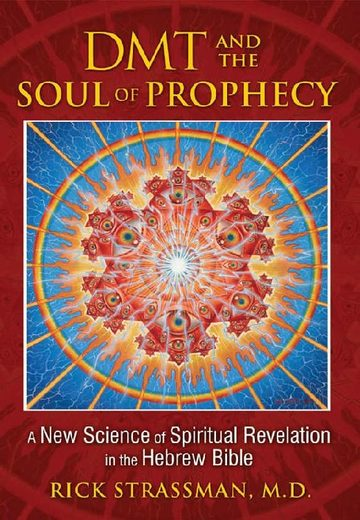
DMT and the Soul of Prophecy
Strassman, Rick · 2014 · inglés
DMT
Compara las experiencias con DMT y la profecía en la Biblia hebrea.
Ver ficha del libro

Seeking the Sacred with Psychoactive Substances: Chemical Paths to Spirituality and to God
Ellens, J. Harold (ed.) · 2014 · inglés
General
Obra en dos volúmenes sobre la relación entre psicoactivos, espiritualidad y religión.
Ver ficha del libro
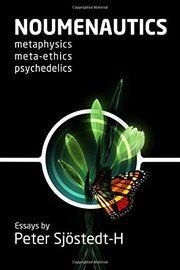
Noumenautics: Metaphysics, Meta-ethics, Psychedelics
Sjöstedt-Hughes, Peter · 2015 · inglés
General
Ensayos filosóficos que vinculan los psicodélicos con la metafísica y la ética.
Ver ficha del libro

Sacred Knowledge: Psychedelics and Religious Experiences
Richards, William A. · 2016 · inglés
PsilocibinaLSD
Un investigador de Johns Hopkins analiza la experiencia mística inducida por psicodélicos.
Ver ficha del libro
- Gerardo Rubén Sandoval IsaacThe God Molecule2016
The God Molecule: 5-MeO-DMT and the Spiritual Path to the Divine Light
Sandoval Isaac, Gerardo Rubén · 2016 · inglés
5-MeO-DMT
Un médico que oficia ceremonias con 5-MeO-DMT expone su enfoque espiritual de la sustancia.
Ver ficha del libro

The Toad of Dawn: 5-MeO-DMT and the Rising of Cosmic Consciousness
Rettig Hinojosa, Octavio · 2016 · inglés
5-MeO-DMT
Un médico mexicano relata su trabajo ceremonial con la medicina del sapo y su visión espiritual.
Ver ficha del libro
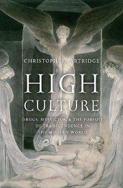
High Culture: Drugs, Mysticism, and the Pursuit of Transcendence in the Modern World
Partridge, Christopher · 2018 · inglés
General
Estudio académico sobre drogas, misticismo y búsqueda de trascendencia en la modernidad.
Ver ficha del libro
- Thomas HatsisPsychedelic Mystery Traditions2018
Psychedelic Mystery Traditions: Spirit Plants, Magical Practices, and Ecstatic States
Hatsis, Thomas · 2018 · inglés
General
Recorre el uso de plantas visionarias en tradiciones mágicas y místicas de Occidente.
Ver ficha del libro
The Way of the Psychonaut: Encyclopedia for Inner Journeys
Grof, Stanislav · 2019 · inglés
GeneralLSD
Obra en dos volúmenes que resume la teoría y la práctica de Grof para viajeros interiores.
Ver ficha del libro
- Chris LethebyThe Philosophy of Psychedelics2021
The Philosophy of Psychedelics
Letheby, Chris · 2021 · inglés
General
Análisis filosófico riguroso sobre si las experiencias psicodélicas pueden aportar conocimiento y bienestar.
Ver ficha del libro
Philosophy and Psychedelics: Frameworks for Exceptional Experience
Hauskeller, Christine; Sjöstedt-Hughes, Peter (eds.) · 2022 · inglés
General
Volumen académico que aplica distintas tradiciones filosóficas a la experiencia psicodélica.
Ver ficha del libro

God on Psychedelics: Tripping Across the Rubble of Old-Time Religion
Lattin, Don · 2023 · inglés
General
Un periodista religioso explora la nueva espiritualidad que surge en torno a los psicodélicos.
Ver ficha del libro

The Electric Kool-Aid Acid Test
Wolfe, Tom · 1968 · inglés
LSD
Crónica de nuevo periodismo sobre Ken Kesey, los Merry Pranksters y los Acid Tests.
Ver ficha del libro

The Sacred Mushroom and the Cross
Allegro, John M. · 1970 · inglés
Amanita
Polémica tesis de un filólogo según la cual el cristianismo surgió de un culto a la amanita.
Ver ficha del libro

The Road to Eleusis: Unveiling the Secret of the Mysteries
Wasson, R. Gordon; Hofmann, Albert; Ruck, Carl A. P. · 1978 · inglés
LSDGeneral
Propone que el kykeon de los misterios de Eleusis contenía alcaloides del cornezuelo.
Ver ficha del libro

The Search for the Manchurian Candidate: The CIA and Mind Control
Marks, John · 1979 · inglés
LSD
Investigación basada en documentos desclasificados sobre los programas de control mental de la CIA.
Ver ficha del libro
- Ernest L. AbelMarihuana1980
Marihuana: The First Twelve Thousand Years
Abel, Ernest L. · 1980 · inglés
Cannabis
Historia del cannabis desde la prehistoria hasta el siglo XX, incluidos sus usos rituales.
Ver ficha del libro

The Brotherhood of Eternal Love
Tendler, Stewart; May, David · 1984 · inglés
LSD
Reportaje británico sobre la red internacional de tráfico de LSD conocida como la Hermandad.
Ver ficha del libro

Acid Dreams: The CIA, LSD, and the Sixties Rebellion
Lee, Martin A.; Shlain, Bruce · 1985 · inglés
LSD
Historia social del LSD que vincula los experimentos de la CIA con la contracultura de los sesenta.
Ver ficha del libro

Storming Heaven: LSD and the American Dream
Stevens, Jay · 1987 · inglés
LSD
Relato del ascenso del LSD en Estados Unidos, desde los laboratorios hasta la revolución cultural.
Ver ficha del libro

Ecstasy: The MDMA Story
Eisner, Bruce · 1989 · inglés
MDMA
Uno de los primeros libros sobre la historia, los efectos y el uso terapéutico del MDMA.
Ver ficha del libro

Historia general de las drogas
Escohotado, Antonio · 1989 · español
General
Monumental historia de las drogas desde la Antigüedad hasta la prohibición contemporánea.
Ver ficha del libro
- Clark HeinrichStrange Fruit1995
Strange Fruit: Alchemy, Religion and Magical Foods
Heinrich, Clark · 1995 · inglés
Amanita
Busca rastros de la amanita y otros hongos en la alquimia y en textos religiosos.
Ver ficha del libro

Historia elemental de las drogas
Escohotado, Antonio · 1996 · español
General
Versión abreviada y accesible de la gran historia de las drogas del filósofo español.
Ver ficha del libro
- Giorgio SamoriniL'erba di Carlo Erba1996
L'erba di Carlo Erba: per una storia della canapa indiana in Italia (1845-1948)
Samorini, Giorgio · 1996 · italiano
Cannabis
Historia del uso medicinal y cultural del cannabis en Italia entre mediados del XIX y 1948.
Ver ficha del libro
- Matthew CollinAltered State1997
Altered State: The Story of Ecstasy Culture and Acid House
Collin, Matthew · 1997 · inglés
MDMA
Historia de la cultura del éxtasis y el acid house en el Reino Unido.
Ver ficha del libro
- David BlackAcid1998
Acid: A New Secret History of LSD
Black, David · 1998 · inglés
LSD
Investigación periodística sobre redes de distribución de LSD y conexiones con los servicios de inteligencia.
Ver ficha del libro

Energy Flash: A Journey Through Rave Music and Dance Culture
Reynolds, Simon · 1998 · inglés
MDMA
Historia de la música rave y su relación con el consumo de MDMA.
Ver ficha del libro

Timothy Leary: Outside Looking In
Forte, Robert (ed.) · 1999 · inglés
LSD
Testimonios de amigos y colegas que ofrecen miradas diversas sobre la figura de Leary.
Ver ficha del libro
- Mike JayEmperors of Dreams2000
Emperors of Dreams: Drugs in the Nineteenth Century
Jay, Mike · 2000 · inglés
CannabisGeneral
Explora el uso de hachís, opio y otras drogas en la ciencia y la literatura decimonónicas.
Ver ficha del libro
- James ArthurMushrooms and Mankind2000
Mushrooms and Mankind: The Impact of Mushrooms on Human Consciousness and Religion
Arthur, James · 2000 · inglés
AmanitaPsilocibina
Ensayo especulativo sobre el papel de los hongos en el origen de las religiones.
Ver ficha del libro
- Robert C. FullerStairways to Heaven2000
Stairways to Heaven: Drugs in American Religious History
Fuller, Robert C. · 2000 · inglés
GeneralMescalina
Historia del papel de las drogas en la vida religiosa estadounidense, del peyote al LSD.
Ver ficha del libro
- Juan Carlos UsóSpanish Trip2001
Spanish Trip: la aventura psiquedélica en España
Usó, Juan Carlos · 2001 · español
LSDGeneral
Historia de la psicodelia en España, de la oposición al franquismo a la música y el trance.
Ver ficha del libro
- Carl A. P. Ruck, Blaise Daniel Staples y Clark HeinrichThe Apples of Apollo2001
The Apples of Apollo: Pagan and Christian Mysteries of the Eucharist
Ruck, Carl A. P.; Staples, Blaise Daniel; Heinrich, Clark · 2001 · inglés
Amanita
Rastrea posibles alusiones a enteógenos en la mitología clásica y la tradición cristiana.
Ver ficha del libro
- John HiggsI Have America Surrounded2006
I Have America Surrounded: The Life of Timothy Leary
Higgs, John · 2006 · inglés
LSD
Biografía de Leary centrada en sus años de fuga, exilio y prisión.
Ver ficha del libro
- Carl A. P. RuckSacred Mushrooms of the Goddess2006
Sacred Mushrooms of the Goddess: Secrets of Eleusis
Ruck, Carl A. P. · 2006 · inglés
GeneralAmanita
Un filólogo clásico defiende que los misterios de Eleusis giraban en torno a hongos y otros enteógenos.
Ver ficha del libro

Shroom: A Cultural History of the Magic Mushroom
Letcher, Andy · 2006 · inglés
PsilocibinaAmanita
Historia cultural crítica de los hongos mágicos que desmonta varios mitos populares.
Ver ficha del libro
- Robert GreenfieldTimothy Leary2006
Timothy Leary: A Biography
Greenfield, Robert · 2006 · inglés
LSD
Biografía crítica y detallada del psicólogo de Harvard convertido en icono psicodélico.
Ver ficha del libro

Psychedelic Psychiatry: LSD from Clinic to Campus
Dyck, Erika · 2008 · inglés
LSD
Historia de la investigación con LSD en Saskatchewan, Canadá, y su paso de la clínica a la calle.
Ver ficha del libro

A Terrible Mistake: The Murder of Frank Olson and the CIA's Secret Cold War Experiments
Albarelli, H. P., Jr. · 2009 · inglés
LSD
Investigación sobre la muerte del científico Frank Olson tras recibir LSD sin saberlo.
Ver ficha del libro

Birth of a Psychedelic Culture: Conversations about Leary, the Harvard Experiments, Millbrook and the Sixties
Ram Dass; Metzner, Ralph; Bravo, Gary · 2010 · inglés
LSDPsilocibina
Conversaciones entre protagonistas del proyecto de Harvard y Millbrook sobre aquellos años.
Ver ficha del libro
- Mike JayHigh Society2010
High Society: Mind-Altering Drugs in History and Culture
Jay, Mike · 2010 · inglés
General
Panorama ilustrado del uso de sustancias psicoactivas en distintas culturas y épocas.
Ver ficha del libro
- Nicholas SchouOrange Sunshine2010
Orange Sunshine: The Brotherhood of Eternal Love and Its Quest to Spread Peace, Love, and Acid to the World
Schou, Nicholas · 2010 · inglés
LSDCannabis
Crónica del grupo californiano que distribuyó LSD y hachís a gran escala a finales de los sesenta.
Ver ficha del libro

The Harvard Psychedelic Club
Lattin, Don · 2010 · inglés
LSDPsilocibina
Cuenta cómo Leary, Alpert, Huston Smith y Andrew Weil cambiaron la cultura desde Harvard.
Ver ficha del libro
- Dieter Hagenbach y Lucius WerthmüllerAlbert Hofmann und sein LSD2011
Albert Hofmann und sein LSD
Hagenbach, Dieter; Werthmüller, Lucius · 2011 · alemán
LSD
Biografía del químico suizo que sintetizó el LSD y de la historia de su descubrimiento.
Ver ficha del libro

Mushrooms, Myth and Mithras: The Drug Cult that Civilized Europe
Ruck, Carl A. P.; Hoffman, Mark Alwin; González Celdrán, José Alfredo · 2011 · inglés
Amanita
Argumenta que el culto de Mitra empleaba hongos enteógenos en sus rituales.
Ver ficha del libro
- Don LattinDistilled Spirits2012
Distilled Spirits
Lattin, Don · 2012 · inglés
LSDGeneral
Historia de Gerald Heard, Aldous Huxley y Bill Wilson y su interés por el LSD y la espiritualidad.
Ver ficha del libro
- Stephen SiffAcid Hype2015
Acid Hype: American News Media and the Psychedelic Experience
Siff, Stephen · 2015 · inglés
LSD
Estudia cómo la prensa estadounidense presentó el LSD y moldeó la opinión pública.
Ver ficha del libro
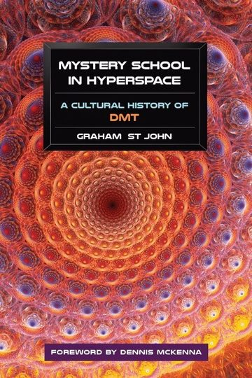
Mystery School in Hyperspace: A Cultural History of DMT
St John, Graham · 2015 · inglés
DMT
Historia cultural del DMT, de su síntesis y los laboratorios a la cultura popular.
Ver ficha del libro
The Witches' Ointment: The Secret History of Psychedelic Magic
Hatsis, Thomas · 2015 · inglés
General
Investiga los ungüentos de brujas y las plantas psicoactivas en la Europa medieval y moderna.
Ver ficha del libro
- Robert GreenfieldBear2016
Bear: The Life and Times of Augustus Owsley Stanley III
Greenfield, Robert · 2016 · inglés
LSD
Biografía del químico clandestino que fabricó millones de dosis de LSD y trabajó con Grateful Dead.
Ver ficha del libro
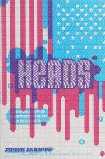
Heads: A Biography of Psychedelic America
Jarnow, Jesse · 2016 · inglés
LSD
Historia de la subcultura psicodélica estadounidense y sus redes de distribución y música.
Ver ficha del libro

The Psychedelic Gospels: The Secret History of Hallucinogens in Christianity
Brown, Jerry B.; Brown, Julie M. · 2016 · inglés
AmanitaPsilocibina
Recorrido por iglesias y obras de arte medievales en busca de imágenes de hongos.
Ver ficha del libro
Psychedelic Prophets: The Letters of Aldous Huxley and Humphry Osmond
Bisbee, Cynthia Carson; Bisbee, Paul; Dyck, Erika; Farrell, Patrick; Sexton, James; Spisak, James W. (eds.) · 2018 · inglés
MescalinaLSD
Correspondencia entre Huxley y el psiquiatra que acuñó la palabra psicodélico.
Ver ficha del libro
- Patrick BarberPsychedelic Revolutionaries2018
Psychedelic Revolutionaries: Three Medical Pioneers, the Fall of Hallucinogenic Research and the Rise of Big Pharma
Barber, Patrick · 2018 · inglés
LSD
Perfiles de tres médicos pioneros de la investigación con LSD y el declive de su campo.
Ver ficha del libro
The Trials of Psychedelic Therapy: LSD Psychotherapy in America
Oram, Matthew · 2018 · inglés
LSD
Analiza cómo la regulación de los ensayos clínicos frenó la terapia con LSD en EE. UU.
Ver ficha del libro
- Lucas RichertBreak On Through2019
Break On Through: Radical Psychiatry and the American Counterculture
Richert, Lucas · 2019 · inglés
LSDGeneral
Historia de la psiquiatría radical y la contracultura en la investigación con psicodélicos.
Ver ficha del libro

High Weirdness: Drugs, Esoterica, and Visionary Experience in the Seventies
Davis, Erik · 2019 · inglés
GeneralDMTLSD
Estudio de las experiencias visionarias de Terence McKenna, Philip K. Dick y Robert Anton Wilson.
Ver ficha del libro
Mescaline: A Global History of the First Psychedelic
Jay, Mike · 2019 · inglés
Mescalina
Historia de la mescalina desde el peyote y el San Pedro hasta su papel en la ciencia y la cultura modernas.
Ver ficha del libro

Poisoner in Chief: Sidney Gottlieb and the CIA Search for Mind Control
Kinzer, Stephen · 2019 · inglés
LSD
Biografía del químico de la CIA que dirigió MK-Ultra y sus experimentos con LSD.
Ver ficha del libro

American Trip: Set, Setting, and the Psychedelic Experience in the Twentieth Century
Hartogsohn, Ido · 2020 · inglés
LSDGeneral
Historia del concepto de set y setting y de cómo el contexto moldeó las experiencias psicodélicas.
Ver ficha del libro

The Immortality Key: The Secret History of the Religion with No Name
Muraresku, Brian C. · 2020 · inglés
GeneralAmanita
Investiga la hipótesis de brebajes psicoactivos en los misterios griegos y en el cristianismo primitivo.
Ver ficha del libro

LSD — The Wonder Child: The Golden Age of Psychedelic Research in the 1950s
Hatsis, Thomas · 2021 · inglés
LSD
Historia de la primera edad dorada de la investigación con LSD en Europa y América.
Ver ficha del libro
- Norman OhlerDer stärkste Stoff2023
Der stärkste Stoff: Psychedelische Drogen – Waffe, Rauschmittel, Medikament
Ohler, Norman · 2023 · alemán
LSD
Historia del LSD que recorre su descubrimiento, los experimentos nazis y de la CIA y su uso terapéutico.
Ver ficha del libro

Expanding Mindscapes: A Global History of Psychedelics
Dyck, Erika; Elcock, Chris (eds.) · 2023 · inglés
General
Volumen académico que amplía la historia psicodélica más allá de Estados Unidos y Europa.
Ver ficha del libro
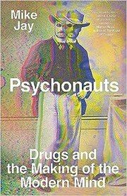
Psychonauts: Drugs and the Making of the Modern Mind
Jay, Mike · 2023 · inglés
General
Historia de los científicos y escritores del siglo XIX que experimentaron con drogas sobre sí mismos.
Ver ficha del libro
- Benjamin BreenTripping on Utopia2024
Tripping on Utopia: Margaret Mead, the Cold War, and the Troubled Birth of Psychedelic Science
Breen, Benjamin · 2024 · inglés
LSDGeneral
Historia del vínculo entre ciencias sociales, guerra fría y primeras investigaciones con psicodélicos.
Ver ficha del libro
- Juan ArnauEl viajero mental2025
El viajero mental: una historia de la psicodelia
Arnau, Juan · 2025 · español
General
Ensayo filosófico-histórico que recorre figuras clave de la psicodelia y su desafío a la visión moderna del cosmos.
Ver ficha del libro
- Théophile GautierLe Club des Hachichins1846
Le Club des Hachichins
Gautier, Théophile · 1846 · francés
Cannabis
Relato de las veladas parisinas del club de los consumidores de hachís.
Ver ficha del libro
- Charles BaudelaireLes Paradis artificiels1860
Les Paradis artificiels
Baudelaire, Charles · 1860 · francés
Cannabis
Ensayo literario sobre el hachís y el opio y la búsqueda del ideal a través de ellos.
Ver ficha del libro
Der Steppenwolf
Hesse, Hermann · 1927 · alemán
General
Novela de crisis existencial y teatro mágico muy reivindicada por la contracultura psicodélica.
Ver ficha del libro

Les Tarahumaras
Artaud, Antonin · 1955 · francés
Mescalina
Textos de Artaud sobre su viaje a la sierra Tarahumara y el rito del peyote.
Ver ficha del libro

Misérable miracle
Michaux, Henri · 1956 · francés
Mescalina
El poeta belga describe con prosa y dibujos sus experiencias con mescalina.
Ver ficha del libro
- Henri MichauxL'Infini turbulent1957
L'Infini turbulent
Michaux, Henri · 1957 · francés
MescalinaPsilocibina
Continuación de sus exploraciones literarias con mescalina y otras sustancias.
Ver ficha del libro

Connaissance par les gouffres
Michaux, Henri · 1961 · francés
MescalinaPsilocibinaCannabis
Ensayo poético sobre lo que enseñan las drogas acerca de la mente.
Ver ficha del libro

Island
Huxley, Aldous · 1962 · inglés
PsilocibinaGeneral
Última novela de Huxley: una utopía donde una medicina visionaria llamada moksha forma parte de la vida comunitaria.
Ver ficha del libro
The Yage Letters
Burroughs, William S.; Ginsberg, Allen · 1963 · inglés
Ayahuasca
Cartas de Burroughs y Ginsberg sobre su búsqueda del yagé en Colombia y Perú.
Ver ficha del libro
- Henri MichauxLes Grandes Épreuves de l'esprit et les innombrables petites1966
Les Grandes Épreuves de l'esprit et les innombrables petites
Michaux, Henri · 1966 · francés
Mescalina
Último libro del ciclo de las drogas de Michaux, centrado en los mecanismos del pensamiento.
Ver ficha del libro

The Teachings of Don Juan: A Yaqui Way of Knowledge
Castaneda, Carlos · 1968 · inglés
MescalinaPsilocibinaGeneral
Supuesto relato antropológico de aprendizaje con un brujo yaqui, hoy considerado en gran parte ficción.
Ver ficha del libro

A Separate Reality: Further Conversations with Don Juan
Castaneda, Carlos · 1971 · inglés
General
Segunda entrega de la saga de don Juan, con nuevas experiencias con plantas de poder.
Ver ficha del libro

Fear and Loathing in Las Vegas
Thompson, Hunter S. · 1971 · inglés
LSDGeneral
Novela gonzo de un viaje alucinado a Las Vegas que retrata el fin del sueño de los sesenta.
Ver ficha del libro
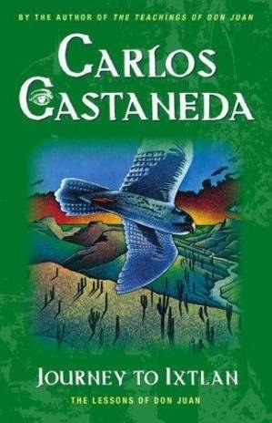
Journey to Ixtlan: The Lessons of Don Juan
Castaneda, Carlos · 1972 · inglés
General
Tercer libro de la serie, centrado en enseñanzas para percibir sin plantas psicoactivas.
Ver ficha del libro
- César CalvoLas tres mitades de Ino Moxo y otros brujos de la Amazonía1981
Las tres mitades de Ino Moxo y otros brujos de la Amazonía
Calvo, César · 1981 · español
Ayahuasca
Novela poética peruana sobre un brujo amazónico y el saber de la ayahuasca.
Ver ficha del libro

Ecstasy: Three Tales of Chemical Romance
Welsh, Irvine · 1996 · inglés
MDMA
Tres novelas cortas ambientadas en la cultura británica del éxtasis de los noventa.
Ver ficha del libro
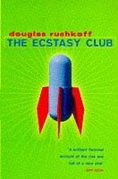
The Ecstasy Club
Rushkoff, Douglas · 1997 · inglés
MDMA
Novela sobre una comunidad de jóvenes en San Francisco que organiza raves y experimenta con la conciencia.
Ver ficha del libro
- Mike Jay (eds.)Artificial Paradises1999
Artificial Paradises: A Drugs Reader
Jay, Mike (ed.) · 1999 · inglés
General
Antología de textos literarios, científicos e históricos sobre drogas.
Ver ficha del libro
- Brian BlomerthBicycle Day2019
Bicycle Day
Blomerth, Brian · 2019 · inglés
LSD
Cómic que recrea con humor el descubrimiento del LSD por Albert Hofmann.
Ver ficha del libro
- Brian BlomerthMycelium Wassonii2021
Mycelium Wassonii
Blomerth, Brian · 2021 · inglés
Psilocibina
Novela gráfica sobre Gordon y Valentina Wasson y su búsqueda de los hongos sagrados.
Ver ficha del libro
- William BrewerThe Red Arrow2021
The Red Arrow
Brewer, William · 2021 · inglés
Psilocibina
Novela sobre un escritor deprimido que se somete a una terapia experimental con psilocibina.
Ver ficha del libro
- Vanni SantoniLa verità su tutto2022
La verità su tutto
Santoni, Vanni · 2022 · italiano
General
Novela italiana en la que los psicodélicos intervienen en el despertar espiritual de la protagonista.
Ver ficha del libro
- Enrique BunburyMicrodosis2023
Microdosis
Bunbury, Enrique · 2023 · español
Psilocibina
Poemario escrito como diario durante un periodo de experimentación con microdosis de psilocibina.
Ver ficha del libro
- Fitz Hugh LudlowThe Hasheesh Eater1857
The Hasheesh Eater
Ludlow, Fitz Hugh · 1857 · inglés
Cannabis
Confesiones de un joven estadounidense sobre sus visiones con extracto de cannabis.
Ver ficha del libro
- Jane DunlapExploring Inner Space1961
Exploring Inner Space: Personal Experiences Under LSD-25
Dunlap, Jane · 1961 · inglés
LSD
Testimonio temprano de una escritora sobre sus sesiones de LSD, publicado bajo seudónimo.
Ver ficha del libro
- Constance A. NewlandMy Self and I1962
My Self and I
Newland, Constance A. · 1962 · inglés
LSD
Relato de una paciente sobre su psicoterapia con LSD a finales de los cincuenta.
Ver ficha del libro
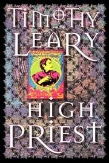
High Priest
Leary, Timothy · 1968 · inglés
LSDPsilocibina
Crónica de dieciséis sesiones psicodélicas de Leary durante los años de Harvard.
Ver ficha del libro
- Ralph Metzner (eds.)The Ecstatic Adventure1968
The Ecstatic Adventure
Metzner, Ralph (ed.) · 1968 · inglés
General
Antología de relatos de experiencias psicodélicas recogidos a finales de los sesenta.
Ver ficha del libro
- Ernst JüngerAnnäherungen1970
Annäherungen: Drogen und Rausch
Jünger, Ernst · 1970 · alemán
LSDMescalinaGeneral
El escritor alemán reflexiona sobre sus experiencias con drogas, incluidas sesiones de LSD con Hofmann.
Ver ficha del libro

Wizard of the Upper Amazon
Lamb, F. Bruce · 1971 · inglés
Ayahuasca
Relato de la supuesta captura del peruano Manuel Córdova-Ríos por indígenas que lo iniciaron en la ayahuasca.
Ver ficha del libro
- John C. LillyThe Center of the Cyclone1972
The Center of the Cyclone: An Autobiography of Inner Space
Lilly, John C. · 1972 · inglés
LSD
El científico narra sus exploraciones de la conciencia con LSD y tanques de aislamiento.
Ver ficha del libro

Millbrook: The True Story of the Early Years of the Psychedelic Revolution
Kleps, Art · 1975 · inglés
LSD
Testimonio de un participante en la comunidad de Millbrook y en la Neo-American Church.
Ver ficha del libro
- Robert Anton WilsonCosmic Trigger1977
Cosmic Trigger: Final Secret of the Illuminati
Wilson, Robert Anton · 1977 · inglés
LSDGeneral
Memorias especulativas de exploración de la conciencia, con psicodélicos, ocultismo y conspiraciones.
Ver ficha del libro

Journeys into the Bright World
Moore, Marcia; Alltounian, Howard Sunny · 1978 · inglés
Ketamina
Relato de una pareja sobre sus exploraciones espirituales con ketamina.
Ver ficha del libro
- John C. LillyThe Scientist1978
The Scientist: A Novel Autobiography
Lilly, John C. · 1978 · inglés
KetaminaLSD
Autobiografía en tercera persona que incluye sus intensas experiencias con ketamina.
Ver ficha del libro

LSD – mein Sorgenkind
Hofmann, Albert · 1979 · alemán
LSDPsilocibina
El químico suizo narra el descubrimiento del LSD, su viaje en bicicleta y la posterior historia de la sustancia.
Ver ficha del libro
- Cynthia Palmer y Michael Horowitz (eds.)Shaman Woman, Mainline Lady1982
Shaman Woman, Mainline Lady: Women's Writings on the Drug Experience
Palmer, Cynthia; Horowitz, Michael (eds.) · 1982 · inglés
General
Primera edición de la antología de escritos femeninos sobre la experiencia con drogas.
Ver ficha del libro

Flashbacks: An Autobiography
Leary, Timothy · 1983 · inglés
LSD
Autobiografía de Leary desde sus inicios académicos hasta el exilio y la cárcel.
Ver ficha del libro
- Alex Polari de AlvergaO livro das mirações1984
O livro das mirações: viagem ao Santo Daime
Polari de Alverga, Alex · 1984 · portugués
Ayahuasca
Testimonio de un exguerrillero brasileño sobre su conversión al Santo Daime.
Ver ficha del libro
- Sophia Adamson (eds.)Through the Gateway of the Heart1985
Through the Gateway of the Heart: Accounts of Experiences with MDMA and Other Empathogenic Substances
Adamson, Sophia (ed.) · 1985 · inglés
MDMA
Recopilación de testimonios de experiencias terapéuticas con MDMA antes de su prohibición.
Ver ficha del libro

True Hallucinations
McKenna, Terence · 1993 · inglés
PsilocibinaAyahuasca
Relato del viaje de los hermanos McKenna a la Amazonía colombiana en 1971 y sus experimentos.
Ver ficha del libro
- Myron J. StolaroffThanatos to Eros1994
Thanatos to Eros: 35 Years of Psychedelic Exploration
Stolaroff, Myron J. · 1994 · inglés
LSDGeneral
Memorias de un ingeniero que se convirtió en investigador y explorador psicodélico.
Ver ficha del libro

Sisters of the Extreme: Women Writing on the Drug Experience
Palmer, Cynthia; Horowitz, Michael (eds.) · 2000 · inglés
General
Antología de textos de mujeres sobre sus experiencias con drogas, de Louisa May Alcott a Ann Shulgin.
Ver ficha del libro
Tripping: An Anthology of True-Life Psychedelic Adventures
Hayes, Charles (ed.) · 2000 · inglés
General
Cincuenta relatos en primera persona de experiencias con distintas sustancias psicodélicas.
Ver ficha del libro

Breaking Open the Head: A Psychedelic Journey into the Heart of Contemporary Shamanism
Pinchbeck, Daniel · 2002 · inglés
IbogaínaAyahuascaGeneral
Un periodista neoyorquino relata su iniciación con iboga, ayahuasca y otras sustancias.
Ver ficha del libro
When the Impossible Happens: Adventures in Non-Ordinary Realities
Grof, Stanislav · 2006 · inglés
LSDGeneral
Relatos de experiencias extraordinarias vividas por Grof y sus pacientes.
Ver ficha del libro

Ayahuasca in My Blood: 25 Years of Medicine Dreaming
Gorman, Peter · 2010 · inglés
Ayahuasca
Un periodista repasa veinticinco años de experiencias con ayahuasca en la Amazonía peruana.
Ver ficha del libro
- Christopher GrayThe Acid Diaries2010
The Acid Diaries: A Psychonaut's Guide to the History and Use of LSD
Gray, Christopher · 2010 · inglés
LSD
Combina el diario de experiencias con LSD del autor con apuntes históricos y prácticos.
Ver ficha del libro
- Rhoney Gissen StanleyOwsley and Me2012
Owsley and Me: My LSD Family
Stanley, Rhoney Gissen · 2012 · inglés
LSD
Memorias de la compañera del químico Owsley Stanley sobre la fabricación de LSD en los sesenta.
Ver ficha del libro

The Brotherhood of the Screaming Abyss: My Life with Terence McKenna
McKenna, Dennis · 2012 · inglés
PsilocibinaAyahuascaDMT
Memorias del etnofarmacólogo sobre su vida junto a su hermano Terence y el experimento de La Chorrera.
Ver ficha del libro
- Rak RazamAya Awakenings2013
Aya Awakenings: A Shamanic Odyssey
Razam, Rak · 2013 · inglés
Ayahuasca
Crónica gonzo de un periodista australiano sobre el turismo de ayahuasca en Perú.
Ver ficha del libro
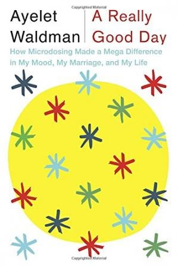
A Really Good Day: How Microdosing Made a Mega Difference in My Mood, My Marriage, and My Life
Waldman, Ayelet · 2017 · inglés
LSD
Diario de una escritora que prueba microdosis de LSD durante un mes para tratar sus problemas anímicos.
Ver ficha del libro
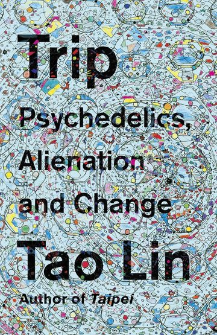
Trip: Psychedelics, Alienation, and Change
Lin, Tao · 2018 · inglés
DMTPsilocibinaSalviaGeneral
Un novelista narra cómo los psicodélicos y las ideas de Terence McKenna le ayudaron a salir de la adicción.
Ver ficha del libro
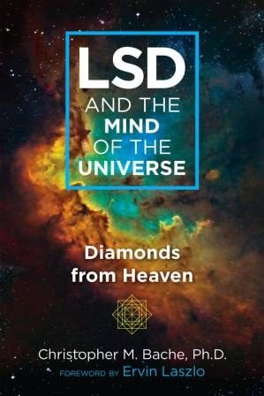
LSD and the Mind of the Universe: Diamonds from Heaven
Bache, Christopher M. · 2019 · inglés
LSD
Un filósofo de la religión relata veinte años de sesiones de LSD a dosis altas.
Ver ficha del libro
My Psychedelic Explorations: The Healing Power and Transformational Potential of Psychoactive Substances
Naranjo, Claudio · 2020 · inglés
GeneralAyahuascaMDMA
Autobiografía psicodélica del psiquiatra chileno, publicada poco después de su muerte.
Ver ficha del libro

Being Ram Dass
Ram Dass; Das, Rameshwar · 2021 · inglés
LSDPsilocibina
Autobiografía del antiguo Richard Alpert, desde Harvard y el LSD hasta su camino espiritual.
Ver ficha del libro
- Katherine MacLeanMidnight Water2023
Midnight Water: A Psychedelic Memoir
MacLean, Katherine · 2023 · inglés
Psilocibina
Memorias de una exinvestigadora de Johns Hopkins que entrelaza trauma familiar y estudios con psilocibina.
Ver ficha del libro
- Erica RexSeeing What Is There2026
Seeing What Is There: My Search for Sanity in the Psychedelic Era
Rex, Erica · 2026 · inglés
PsilocibinaGeneral
Una periodista relata su búsqueda de alivio a la depresión a través de terapias psicodélicas.
Ver ficha del libro
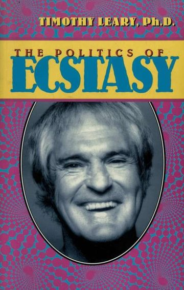
The Politics of Ecstasy
Leary, Timothy · 1968 · inglés
LSD
Ensayos de Leary sobre el LSD, la libertad de conciencia y la revolución cultural.
Ver ficha del libro
Marihuana Reconsidered
Grinspoon, Lester · 1971 · inglés
Cannabis
Revisión médica que cuestionó los mitos sobre el cannabis y defendió reformar su prohibición.
Ver ficha del libro

Ceremonial Chemistry: The Ritual Persecution of Drugs, Addicts, and Pushers
Szasz, Thomas · 1974 · inglés
General
Crítica libertaria de la prohibición de drogas como forma de persecución ritual.
Ver ficha del libro

Pursuit of Ecstasy: The MDMA Experience
Beck, Jerome; Rosenbaum, Marsha · 1994 · inglés
MDMA
Estudio sociológico sobre los usuarios de MDMA y los contextos de consumo.
Ver ficha del libro

Aprendiendo de las drogas: usos y abusos, prejuicios y desafíos
Escohotado, Antonio · 1995 · español
General
Descripción de efectos y usos de numerosas drogas desde una perspectiva antiprohibicionista.
Ver ficha del libro
- Hans CoustoVom Urkult zur Kultur1995
Vom Urkult zur Kultur
Cousto, Hans · 1995 · alemán
MDMAGeneral
Ensayo alemán sobre drogas, techno y rituales de baile contemporáneos.
Ver ficha del libro
- Juan Carlos UsóDrogas y cultura de masas1996
Drogas y cultura de masas: España (1855-1995)
Usó, Juan Carlos · 1996 · español
General
Historia social de las drogas en España y de la construcción del problema de la droga.
Ver ficha del libro
- Huston Smith y Reuben Snake (eds.)One Nation Under God1996
One Nation Under God: The Triumph of the Native American Church
Smith, Huston; Snake, Reuben (eds.) · 1996 · inglés
Mescalina
Testimonios sobre la lucha legal de la Iglesia Nativa Americana por el uso del peyote.
Ver ficha del libro
- Antonio EscohotadoLa cuestión del cáñamo1997
La cuestión del cáñamo: una propuesta constructiva sobre hachís y marihuana
Escohotado, Antonio · 1997 · español
Cannabis
Ensayo que propone una regulación racional del cannabis.
Ver ficha del libro

Drogas e cultura: novas perspectivas
Labate, Beatriz Caiuby; Goulart, Sandra Lucia; Fiore, Maurício; MacRae, Edward; Carneiro, Henrique (orgs.) · 2008 · portugués
General
Obra colectiva brasileña que aborda las drogas desde la antropología, la historia y las políticas públicas.
Ver ficha del libro

Drugs Without the Hot Air: Minimising the Harms of Legal and Illegal Drugs
Nutt, David · 2012 · inglés
General
Un exasesor del Gobierno británico compara riesgos de drogas legales e ilegales con base científica.
Ver ficha del libro
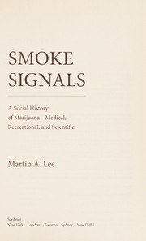
Smoke Signals: A Social History of Marijuana – Medical, Recreational and Scientific
Lee, Martin A. · 2012 · inglés
Cannabis
Historia social del cannabis en Estados Unidos, con especial atención a su uso médico.
Ver ficha del libro
Prohibition, Religious Freedom, and Human Rights: Regulating Traditional Drug Use
Labate, Beatriz Caiuby; Cavnar, Clancy (eds.) · 2014 · inglés
AyahuascaMescalinaGeneral
Analiza conflictos legales en torno al uso tradicional y religioso de plantas psicoactivas.
Ver ficha del libro
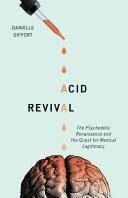
Acid Revival: The Psychedelic Renaissance and the Quest for Medical Legitimacy
Giffort, Danielle · 2020 · inglés
General
Estudio sociológico de cómo los investigadores buscaron legitimidad médica para los psicodélicos.
Ver ficha del libro

Good Chemistry: The Science of Connection, from Soul to Psychedelics
Holland, Julie · 2020 · inglés
MDMAGeneral
Una psiquiatra defiende la conexión social como medicina y el papel de los psicodélicos en ella.
Ver ficha del libro
- Federico Di Vita (eds.)La scommessa psichedelica2020
La scommessa psichedelica
Di Vita, Federico (ed.) · 2020 · italiano
General
Ensayos de escritores, periodistas y científicos italianos sobre el peso cultural y político de la psicodelia.
Ver ficha del libro

Drug Use for Grown-Ups: Chasing Liberty in the Land of Fear
Hart, Carl L. · 2021 · inglés
General
Un neurocientífico defiende el derecho de los adultos a consumir drogas de forma informada.
Ver ficha del libro

Psychedelic Justice: Toward a Diverse and Equitable Psychedelic Culture
Labate, Beatriz Caiuby; Cavnar, Clancy (eds.) · 2021 · inglés
General
Ensayos sobre diversidad, equidad, reciprocidad con pueblos indígenas y ética en el movimiento psicodélico.
Ver ficha del libro
- Joanna KempnerPsychedelic Outlaws2024
Psychedelic Outlaws: The Movement Revolutionizing Modern Medicine
Kempner, Joanna · 2024 · inglés
PsilocibinaLSD
Una socióloga cuenta cómo pacientes con cefalea en racimos crearon su propia medicina con psilocibina.
Ver ficha del libro
- Erika Dyck, Patrick Farrell, Beatriz Caiuby Labate, Clancy Cavnar, Ibrahim Gabriell y Glauber Loures de Assis (eds.)Women and Psychedelics2024
Women and Psychedelics: Uncovering Invisible Voices
Dyck, Erika; Farrell, Patrick; Labate, Beatriz Caiuby; Cavnar, Clancy; Gabriell, Ibrahim; Loures de Assis, Glauber (eds.) · 2024 · inglés
General
Antología del Instituto Chacruna que recupera el papel de las mujeres en la historia psicodélica.
Ver ficha del libro
- Alberto Ribas-Casasayas y Ana Luengo (eds.)Otras iluminaciones2025
Otras iluminaciones: narrativa, cultura y psicodélicos
Ribas-Casasayas, Alberto; Luengo, Ana (eds.) · 2025 · español
General
Volumen académico en español sobre psicodelia desde los estudios literarios y culturales.
Ver ficha del libro
- Albert HofmannDie Mutterkornalkaloide1964
Die Mutterkornalkaloide
Hofmann, Albert · 1964 · alemán
LSD
Monografía científica del químico de Sandoz sobre los alcaloides del cornezuelo, de donde surgió el LSD.
Ver ficha del libro
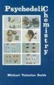
Psychedelic Chemistry
Smith, Michael Valentine · 1973 · inglés
General
Manual clandestino de los años setenta sobre la síntesis y extracción de compuestos psicodélicos.
Ver ficha del libro

The Botany and Chemistry of Hallucinogens
Schultes, Richard Evans; Hofmann, Albert · 1973 · inglés
General
Tratado clásico sobre la botánica y la química de las plantas alucinógenas del mundo.
Ver ficha del libro
- Jonathan OttHallucinogenic Plants of North America1976
Hallucinogenic Plants of North America
Ott, Jonathan · 1976 · inglés
General
Temprano repaso de las plantas y hongos alucinógenos de Norteamérica.
Ver ficha del libro

Psilocybin: Magic Mushroom Grower's Guide
Oss, O. T.; Oeric, O. N. · 1976 · inglés
Psilocibina
Manual de cultivo doméstico de Psilocybe cubensis firmado con seudónimo por los hermanos McKenna.
Ver ficha del libro

Peyote and Other Psychoactive Cacti
Gottlieb, Adam · 1977 · inglés
Mescalina
Breve guía sobre cactus mescalínicos, su cultivo y su química.
Ver ficha del libro
- Paul Stamets y J. S. ChiltonThe Mushroom Cultivator1983
The Mushroom Cultivator: A Practical Guide to Growing Mushrooms at Home
Stamets, Paul; Chilton, J. S. · 1983 · inglés
Psilocibina
Manual técnico de micocultivo que incluye especies de Psilocybe entre muchas otras.
Ver ficha del libro

PiHKAL: A Chemical Love Story
Shulgin, Alexander; Shulgin, Ann · 1991 · inglés
MDMAMescalinaGeneral
Mitad autobiografía, mitad recetario químico de unas doscientas feniletilaminas, con notas de dosis y efectos.
Ver ficha del libro

Pharmacotheon: Entheogenic Drugs, Their Plant Sources and History
Ott, Jonathan · 1993 · inglés
General
Enciclopedia de las drogas enteógenas, sus fuentes vegetales, química e historia.
Ver ficha del libro

Ayahuasca Analogues: Pangaean Entheogens
Ott, Jonathan · 1994 · inglés
AyahuascaDMT
Explora combinaciones de plantas con DMT e inhibidores de la MAO que replican la ayahuasca.
Ver ficha del libro
- Daniel M. PerrineThe Chemistry of Mind-Altering Drugs1996
The Chemistry of Mind-Altering Drugs: History, Pharmacology, and Cultural Context
Perrine, Daniel M. · 1996 · inglés
General
Manual universitario sobre la química y la farmacología de las drogas psicoactivas.
Ver ficha del libro

TiHKAL: The Continuation
Shulgin, Alexander; Shulgin, Ann · 1997 · inglés
DMT5-MeO-DMTPsilocibina
Continuación dedicada a las triptaminas, que combina relatos personales y monografías químicas.
Ver ficha del libro

Ketamine: Dreams and Realities
Jansen, Karl · 2001 · inglés
Ketamina
Monografía sobre la farmacología, los usos médicos, la experiencia subjetiva y los riesgos de la ketamina.
Ver ficha del libro

The Simple Plant Isoquinolines
Shulgin, Alexander; Perry, Wendy E. · 2002 · inglés
Mescalina
Referencia química sobre las isoquinolinas presentes en cactus como el peyote y otras plantas.
Ver ficha del libro
- Richard R. Laing (eds.)Hallucinogens2003
Hallucinogens: A Forensic Drug Handbook
Laing, Richard R. (ed.) · 2003 · inglés
General
Referencia forense sobre la identificación química y la farmacología de los alucinógenos.
Ver ficha del libro

Psilocybin Mushroom Handbook: Easy Indoor and Outdoor Cultivation
Nicholas, L. G.; Ogamé, Kerry · 2006 · inglés
Psilocibina
Guía práctica de cultivo de hongos psilocibios en interior y exterior.
Ver ficha del libro

The Shulgin Index, Volume One: Psychedelic Phenethylamines and Related Compounds
Shulgin, Alexander; Manning, Tania; Daley, Paul F. · 2011 · inglés
MescalinaMDMAGeneral
Índice técnico exhaustivo de feniletilaminas psicoactivas con datos químicos y referencias.
Ver ficha del libro
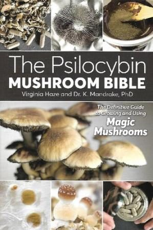
The Psilocybin Mushroom Bible
Mandrake, K.; Haze, Virginia · 2016 · inglés
Psilocibina
Manual ilustrado de cultivo de hongos psilocibios con información sobre su uso.
Ver ficha del libro
From Chocolate to Morphine: Everything You Need to Know About Mind-Altering Drugs
Weil, Andrew; Rosen, Winifred · 1983 · inglés
General
Guía educativa sin alarmismo sobre las drogas que alteran la mente y su uso más seguro.
Ver ficha del libro
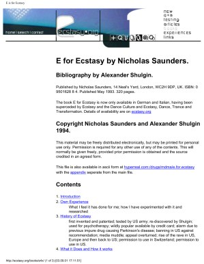
E for Ecstasy
Saunders, Nicholas · 1993 · inglés
MDMA
Uno de los primeros libros británicos de información y reducción de riesgos sobre el éxtasis.
Ver ficha del libro
The Essential Psychedelic Guide
Turner, D. M. · 1994 · inglés
General
Guía de un psiconauta sobre numerosos psicodélicos, sus efectos y precauciones.
Ver ficha del libro

Ecstasy: Dance, Trance & Transformation
Saunders, Nicholas; Doblin, Rick · 1996 · inglés
MDMA
Explora los usos festivos, espirituales y terapéuticos del MDMA.
Ver ficha del libro
- Nicholas SaundersEcstasy Reconsidered1997
Ecstasy Reconsidered
Saunders, Nicholas · 1997 · inglés
MDMA
Revisión actualizada de la evidencia sobre riesgos y beneficios del éxtasis.
Ver ficha del libro
The Psychedelic Explorer's Guide: Safe, Therapeutic, and Sacred Journeys
Fadiman, James · 2011 · inglés
LSDGeneral
Guía práctica para viajes seguros, el papel del guía y las microdosis.
Ver ficha del libro
- Chris KilhamThe Ayahuasca Test Pilots Handbook2014
The Ayahuasca Test Pilots Handbook: The Essential Guide to Ayahuasca Journeying
Kilham, Chris · 2014 · inglés
Ayahuasca
Consejos prácticos para quienes se plantean participar en ceremonias de ayahuasca.
Ver ficha del libro

Allies for Awakening: Guidelines for Productive and Safe Experiences with Entheogens
Metzner, Ralph · 2015 · inglés
General
Pautas de un veterano para experiencias con enteógenos productivas y seguras.
Ver ficha del libro
- Julian VayneGetting Higher2017
Getting Higher: The Manual of Psychedelic Ceremony
Vayne, Julian · 2017 · inglés
General
Guía para diseñar ceremonias psicodélicas seguras y significativas.
Ver ficha del libro
- Annie Oak, Jon Hanna, Kaya, Svea Nielsen, Twilight y Zevic Mishor (eds.)The Manual of Psychedelic Support2017
The Manual of Psychedelic Support: A Practical Guide to Establishing and Facilitating Care Services at Music Festivals and Other Events
Oak, Annie; Hanna, Jon; Kaya; Nielsen, Svea; Twilight; Mishor, Zevic (eds.) · 2017 · inglés
General
Guía colectiva para montar servicios de atención psicodélica en festivales y eventos.
Ver ficha del libro
- Michelle JanikianYour Psilocybin Mushroom Companion2019
Your Psilocybin Mushroom Companion: An Informative, Easy-to-Use Guide to Understanding Magic Mushrooms
Janikian, Michelle · 2019 · inglés
Psilocibina
Guía de reducción de riesgos sobre dosis, contexto, identificación y uso de hongos.
Ver ficha del libro
- Marc AixalàIntegración psiquedélica2022
Integración psiquedélica: lógicas no ordinarias y retos de la psicoterapia en estados expandidos de consciencia
Aixalà, Marc · 2022 · español
GeneralAyahuasca
Manual de un psicoterapeuta de ICEERS sobre cómo integrar experiencias psicodélicas difíciles o transformadoras.
Ver ficha del libro
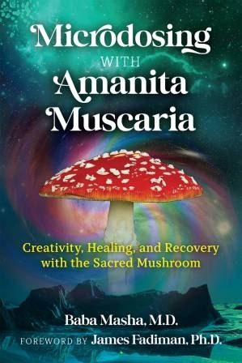
Microdosing with Amanita Muscaria: Creativity, Healing, and Recovery with the Sacred Mushroom
Baba Masha · 2022 · inglés
Amanita
Recoge experiencias y pautas sobre microdosis de Amanita muscaria.
Ver ficha del libro

The Psychedelic Handbook: A Practical Guide to Psilocybin, LSD, Ketamine, MDMA, and Ayahuasca
Strassman, Rick · 2022 · inglés
PsilocibinaLSDKetaminaMDMAAyahuasca
Manual práctico sobre preparación, uso responsable e integración de las principales sustancias psicodélicas.
Ver ficha del libro
- Joe DolceModern Psychedelics2025
Modern Psychedelics: The Handbook for Mindful Exploration
Dolce, Joe · 2025 · inglés
GeneralMDMAPsilocibina
Manual sobre historia, investigación, mitos y uso consciente de los psicodélicos más comunes.
Ver ficha del libro
- Elizabeth Nielson y Ingmar GormanThe Psychedelic Therapy Workbook2025
The Psychedelic Therapy Workbook: Harm Reduction Techniques for Integrating Psychedelics in Therapy and Personal Growth
Nielson, Elizabeth; Gorman, Ingmar · 2025 · inglés
General
Cuaderno práctico con el método de reducción de riesgos e integración de los autores.
Ver ficha del libro
- Julian VayneTrip Sitting2025
Trip Sitting: The Art and Science of Holding Psychedelic Space
Vayne, Julian · 2025 · inglés
General
Manual sobre cómo acompañar a otras personas durante experiencias psicodélicas.
Ver ficha del libro
- Sidney CohenThe Beyond Within1964
The Beyond Within: The LSD Story
Cohen, Sidney · 1964 · inglés
LSD
Un psiquiatra de Los Ángeles evalúa los usos clínicos y peligros del LSD a partir de su propia investigación.
Ver ficha del libro

The Use of LSD in Psychotherapy and Alcoholism
Abramson, Harold A. (ed.) · 1967 · inglés
LSD
Actas de una conferencia internacional con estudios clínicos de la primera época sobre LSD en terapia y alcoholismo.
Ver ficha del libro
The Healing Journey: New Approaches to Consciousness
Naranjo, Claudio · 1973 · inglés
MDMAGeneral
Casos clínicos de psicoterapia con MDA, harmalina e ibogaína entre otras sustancias, narrados por el psiquiatra chileno.
Ver ficha del libro
Realms of the Human Unconscious: Observations from LSD Research
Grof, Stanislav · 1975 · inglés
LSD
Cartografía del inconsciente elaborada a partir de la investigación clínica con LSD en Praga y Maryland.
Ver ficha del libro

The Human Encounter with Death
Grof, Stanislav; Halifax, Joan · 1977 · inglés
LSD
Relata el trabajo con LSD en pacientes con cáncer terminal y su efecto sobre el miedo a morir.
Ver ficha del libro

LSD Psychotherapy
Grof, Stanislav · 1980 · inglés
LSD
Manual clínico basado en miles de sesiones que describe la técnica, las fases y los riesgos de la psicoterapia con LSD.
Ver ficha del libro
- Hanscarl LeunerHalluzinogene1981
Halluzinogene: Psychische Grenzzustände in Forschung und Psychotherapie
Leuner, Hanscarl · 1981 · alemán
LSDPsilocibina
Obra de referencia del pionero alemán de la terapia psicolítica sobre alucinógenos en psiquiatría.
Ver ficha del libro
- Lester Grinspoon y James B. BakalarMarihuana, the Forbidden Medicine1993
Marihuana, the Forbidden Medicine
Grinspoon, Lester; Bakalar, James B. · 1993 · inglés
Cannabis
Recopila casos y evidencia sobre los usos médicos del cannabis frente a su prohibición.
Ver ficha del libro
- Myron J. StolaroffThe Secret Chief1997
The Secret Chief: Conversations with a Pioneer of the Underground Psychedelic Therapy Movement
Stolaroff, Myron J. · 1997 · inglés
MDMALSD
Entrevistas con el terapeuta Leo Zeff, que trató clandestinamente a miles de personas con MDMA y otros psicodélicos.
Ver ficha del libro
Ecstasy: The Complete Guide
Holland, Julie (ed.) · 2001 · inglés
MDMA
Obra colectiva sobre el MDMA que reúne farmacología, riesgos y posibilidades terapéuticas.
Ver ficha del libro
- Henrik Jungaberle, Peter Gasser, Jan Weinhold y Rolf Verres (eds.)Therapie mit psychoaktiven Substanzen2008
Therapie mit psychoaktiven Substanzen: Praxis und Kritik der Psychotherapie mit LSD, Psilocybin und MDMA
Jungaberle, Henrik; Gasser, Peter; Weinhold, Jan; Verres, Rolf (eds.) · 2008 · alemán
LSDPsilocibinaMDMA
Obra colectiva germanohablante sobre la práctica y la crítica de la psicoterapia con psicodélicos.
Ver ficha del libro

La médecine psychédélique: le pouvoir thérapeutique des hallucinogènes
Chambon, Olivier · 2009 · francés
General
Un psiquiatra francés presenta la investigación sobre los usos terapéuticos de los alucinógenos.
Ver ficha del libro
The Pot Book: A Complete Guide to Cannabis
Holland, Julie (ed.) · 2010 · inglés
Cannabis
Compendio de expertos sobre la historia, la ciencia y los usos terapéuticos del cannabis.
Ver ficha del libro
- Claudio NaranjoAyahuasca2012
Ayahuasca: la enredadera del río celestial
Naranjo, Claudio · 2012 · español
Ayahuasca
Recopilación de medio siglo de reflexiones y experiencias del autor sobre la ayahuasca en psicoterapia.
Ver ficha del libro

Healing with Entactogens: Therapist and Patient Perspectives on MDMA-Assisted Group Psychotherapy
Passie, Torsten · 2012 · inglés
MDMA
Testimonios de terapeutas y pacientes sobre la psicoterapia grupal con MDMA en Suiza.
Ver ficha del libro
The Psychedelic Renaissance: Reassessing the Role of Psychedelic Drugs in 21st Century Psychiatry and Society
Sessa, Ben · 2012 · inglés
General
Un psiquiatra británico defiende la reincorporación de los psicodélicos a la práctica psiquiátrica.
Ver ficha del libro
- Beatriz Caiuby Labate y José Carlos Bouso (eds.)Ayahuasca y salud2013
Ayahuasca y salud
Labate, Beatriz Caiuby; Bouso, José Carlos (eds.) · 2013 · español
Ayahuasca
Obra colectiva que analiza beneficios terapéuticos, riesgos y concepciones de salud asociadas a la ayahuasca.
Ver ficha del libro

The Therapeutic Use of Ayahuasca
Labate, Beatriz Caiuby; Cavnar, Clancy (eds.) · 2014 · inglés
Ayahuasca
Volumen académico que examina aplicaciones terapéuticas de la ayahuasca en adicciones y salud mental.
Ver ficha del libro

The Ketamine Papers: Science, Therapy, and Transformation
Wolfson, Phil; Hartelius, Glenn (eds.) · 2016 · inglés
Ketamina
Compilación de textos clínicos y científicos sobre la ketamina como herramienta psicoterapéutica.
Ver ficha del libro

Listening to Ayahuasca: New Hope for Depression, Addiction, PTSD, and Anxiety
Harris, Rachel · 2017 · inglés
Ayahuasca
Una psicóloga analiza encuestas y testimonios sobre los efectos terapéuticos de la ayahuasca.
Ver ficha del libro

Psychedelic Medicine: The Healing Powers of LSD, MDMA, Psilocybin, and Ayahuasca
Miller, Richard Louis · 2017 · inglés
LSDMDMAPsilocibinaAyahuasca
Conversaciones con investigadores y clínicos sobre aplicaciones médicas de varios psicodélicos.
Ver ficha del libro
Consciousness Medicine: Indigenous Wisdom, Entheogens, and Expanded States of Consciousness for Healing and Growth
Bourzat, Françoise; Hunter, Kristina · 2019 · inglés
GeneralPsilocibina
Propuesta de acompañamiento terapéutico que combina saberes indígenas y psicoterapia con enteógenos.
Ver ficha del libro
- Beatriz Caiuby Labate y Clancy Cavnar (eds.)Ayahuasca Healing and Science2021
Ayahuasca Healing and Science
Labate, Beatriz Caiuby; Cavnar, Clancy (eds.) · 2021 · inglés
Ayahuasca
Estudios recientes sobre la ayahuasca en contextos clínicos, rituales y de investigación biomédica.
Ver ficha del libro

Psychedelics and Psychotherapy: The Healing Potential of Expanded States
Read, Tim; Papaspyrou, Maria (eds.) · 2021 · inglés
General
Ensayos de terapeutas e investigadores sobre cómo integrar los estados expandidos en la psicoterapia.
Ver ficha del libro

The Ketamine Breakthrough
Dow, Mike; Levy, Ronan · 2023 · inglés
Ketamina
Introducción a la psicoterapia asistida con ketamina: orígenes, funcionamiento y a quién puede ayudar.
Ver ficha del libro
- Christian SueurLes substances psychédéliques et leurs usages thérapeutiques2024
Les substances psychédéliques et leurs usages thérapeutiques: révolution en santé mentale ?
Sueur, Christian · 2024 · francés
General
Análisis francés sobre el renacimiento terapéutico de los psicodélicos y sus implicaciones en salud mental.
Ver ficha del libro
- JJ PursellPsilocybin Therapy2024
Psilocybin Therapy
Pursell, JJ · 2024 · inglés
Psilocibina
Guía sobre el uso terapéutico de los hongos de psilocibina para la salud mental, de una herbolaria estadounidense.
Ver ficha del libro
- Richard Louis MillerPsychedelic Medicine at the End of Life2024
Psychedelic Medicine at the End of Life
Miller, Richard Louis · 2024 · inglés
PsilocibinaGeneral
Aborda el uso de psicodélicos para aliviar la angustia existencial en pacientes al final de la vida.
Ver ficha del libro
- José Carlos BousoMedicina psiquedélica2025
Medicina psiquedélica: manual para pacientes, clínicos, usuarios y curiosos
Bouso, José Carlos · 2025 · español
MDMALSDPsilocibinaKetaminaAyahuascaIbogaína
Síntesis de tres décadas de investigación sobre la evidencia terapéutica y los riesgos de las principales sustancias psicodélicas.
Ver ficha del libro
- Gerhard Gründer (eds.)Psychedelika in Psychiatrie und Psychotherapie2025
Psychedelika in Psychiatrie und Psychotherapie
Gründer, Gerhard (ed.) · 2025 · alemán
General
Manual clínico en alemán sobre la aplicación de los psicodélicos en psiquiatría y psicoterapia.
Ver ficha del libro
- Will Van Derveer y Keith KurlanderPsychedelic Therapy2026
Psychedelic Therapy
Van Derveer, Will; Kurlander, Keith · 2026 · inglés
PsilocibinaMDMAGeneral
Libro de dos clínicos sobre la combinación de sustancias psicodélicas administradas con psicoterapia.
Ver ficha del libro
- Alfred Pletscher; Dieter Ladewig (eds.)50 years of LSDBiblioteca APDER
50 years of LSD
Alfred Pletscher; Dieter Ladewig (eds.)
LSD
Idioma y año pendientes de revisión.
Clasificación del repertorio: Divulgación y ciencia.
Ver ficha del libro
- Henri MichauxA Certain PlumeBiblioteca APDER
A Certain Plume
Henri Michaux
Idioma y año pendientes de revisión.
Ficha bibliográfica en revisión.
Ver ficha del libro
- Fannie Kahan; Erika DyckA Culture’s CatalystBiblioteca APDER
A Culture’s Catalyst
Fannie Kahan; Erika Dyck
Mescalina
Idioma y año pendientes de revisión.
Clasificación del repertorio: Plantas y sustancias.
Ver ficha del libro
- Dobkin de Rios, Marlene, Rumrrill, RógerA hallucinogenic tea, laced with controversyBiblioteca APDER
A hallucinogenic tea, laced with controversy
Dobkin de Rios, Marlene, Rumrrill, Róger
Ayahuasca
Idioma y año pendientes de revisión.
Clasificación del repertorio: Plantas y sustancias.
Ver ficha del libro
- Michael MithoeferA Manual for MDMA-Assisted PsychotherapyBiblioteca APDER
A Manual for MDMA-Assisted Psychotherapy
Michael Mithoefer
Idioma y año pendientes de revisión.
Clasificación del repertorio: Terapia y clínica.
Ver ficha del libro
- Niccolo CaldararoA Mental EthnographyBiblioteca APDER
A Mental Ethnography
Niccolo Caldararo
LSD
Idioma y año pendientes de revisión.
Clasificación del repertorio: Divulgación y ciencia.
Ver ficha del libro
- Michael PollanA Place of My OwnBiblioteca APDER
A Place of My Own
Michael Pollan
Idioma y año pendientes de revisión.
Clasificación del repertorio: Terapia y clínica.
Ver ficha del libro
- Roger K GreenA Transatlantic Political Theology of Psychedelic AestheticsBiblioteca APDER
A Transatlantic Political Theology of Psychedelic Aesthetics
Roger K Green
General
Idioma y año pendientes de revisión.
Clasificación del repertorio: Historia.
Ver ficha del libro
- Mark ChristensenAcid Christ: Ken Kesey, LSD, and the politics of ecstasyBiblioteca APDER
Acid Christ: Ken Kesey, LSD, and the politics of ecstasy
Mark Christensen
MDMALSD
Idioma y año pendientes de revisión.
Clasificación del repertorio: Historia.
Ver ficha del libro
- Aldous HuxleyAdonis and the alphabet, and other essaysBiblioteca APDER
Adonis and the alphabet, and other essays
Aldous Huxley
Idioma y año pendientes de revisión.
Ficha bibliográfica en revisión.
Ver ficha del libro
- Andy RobertsAlbion Dreaming: A Popular History of LSD in BritainBiblioteca APDER
Albion Dreaming: A Popular History of LSD in Britain
Andy Roberts
LSD
Idioma y año pendientes de revisión.
Clasificación del repertorio: Historia.
Ver ficha del libro
- Ralph MetznerAlchemical Divination: Accessing Your Spiritual Intelligence for Healing & Guidance (Ecology of Consciousness)Biblioteca APDER
Alchemical Divination: Accessing Your Spiritual Intelligence for Healing & Guidance (Ecology of Consciousness)
Ralph Metzner
Idioma y año pendientes de revisión.
Ficha bibliográfica en revisión.
Ver ficha del libro
- Ralph MetznerAlchemical MusingsBiblioteca APDER
Alchemical Musings
Ralph Metzner
Idioma y año pendientes de revisión.
Ficha bibliográfica en revisión.
Ver ficha del libro
- Allene SymonsAldous Huxley's HandsBiblioteca APDER
Aldous Huxley's Hands
Allene Symons
General
Idioma y año pendientes de revisión.
Clasificación del repertorio: Divulgación y ciencia.
Ver ficha del libro
- Aldous HuxleyAldous Huxley's Hearst essaysBiblioteca APDER
Aldous Huxley's Hearst essays
Aldous Huxley
Idioma y año pendientes de revisión.
Ficha bibliográfica en revisión.
Ver ficha del libro
- Martin W. BallAll Is One: Understanding Entheogens and NondualityBiblioteca APDER
All Is One: Understanding Entheogens and Nonduality
Martin W. Ball
General
Idioma y año pendientes de revisión.
Clasificación del repertorio: Plantas y sustancias.
Ver ficha del libro
- Aldous HuxleyAlong the RoadBiblioteca APDER
Along the Road
Aldous Huxley
Idioma y año pendientes de revisión.
Ficha bibliográfica en revisión.
Ver ficha del libro
- Douglas OstoAltered states: Buddhism and psychedelic spirituality in AmericaBiblioteca APDER
Altered states: Buddhism and psychedelic spirituality in America
Douglas Osto
General
Idioma y año pendientes de revisión.
Clasificación del repertorio: Historia.
Ver ficha del libro
- Donald E. TeeterAmanita Muscaria. Herb of ImmortalityBiblioteca APDER
Amanita Muscaria. Herb of Immortality
Donald E. Teeter
Amanita
Idioma y año pendientes de revisión.
Clasificación del repertorio: Plantas y sustancias.
Ver ficha del libro
- Giorgio SamoriniAnimales que se droganBiblioteca APDER
Animales que se drogan
Giorgio Samorini
Idioma y año pendientes de revisión.
Clasificación del repertorio: Plantas y sustancias.
Ver ficha del libro
- Aldous HuxleyAntic HayBiblioteca APDER
Antic Hay
Aldous Huxley
Idioma y año pendientes de revisión.
Ficha bibliográfica en revisión.
Ver ficha del libro
- Henri MichauxAntologia Poetica 1927-1986 Edicion bilingue (spanish french)Biblioteca APDER
Antologia Poetica 1927-1986 Edicion bilingue (spanish french)
Henri Michaux
Idioma y año pendientes de revisión.
Ficha bibliográfica en revisión.
Ver ficha del libro
- Ernst JüngerApproaches: Drugs and Altered StatesBiblioteca APDER
Approaches: Drugs and Altered States
Ernst Jünger
General
Idioma y año pendientes de revisión.
Clasificación del repertorio: Historia.
Ver ficha del libro
- KEN JOHNSONARE YOU EXPERIENCED? HOW PSYCHEDELIC CONSCIOUSNESS TRANSFORMED MODERN ARTBiblioteca APDER
ARE YOU EXPERIENCED? HOW PSYCHEDELIC CONSCIOUSNESS TRANSFORMED MODERN ART
KEN JOHNSON
General
Idioma y año pendientes de revisión.
Clasificación del repertorio: Historia.
Ver ficha del libro
- Aldous HuxleyArte, amor y todo lo demásBiblioteca APDER
Arte, amor y todo lo demás
Aldous Huxley
Idioma y año pendientes de revisión.
Ficha bibliográfica en revisión.
Ver ficha del libro
- Jonathan OttAyahuasca Analogues Pangean EntheogensBiblioteca APDER
Ayahuasca Analogues Pangean Entheogens
Jonathan Ott
AyahuascaDMT
Idioma y año pendientes de revisión.
Clasificación del repertorio: Plantas y sustancias.
Ver ficha del libro
- Peter Lamborn Wilson Michael TaussigAyahuasca and ShamanismBiblioteca APDER
Ayahuasca and Shamanism
Peter Lamborn Wilson Michael Taussig
Ayahuasca
Idioma y año pendientes de revisión.
Clasificación del repertorio: Plantas y sustancias.
Ver ficha del libro
- Arturo Burga FreitasAyahuasca. Mitos, leyendas y relatos de la amazonía peruanaBiblioteca APDER
Ayahuasca. Mitos, leyendas y relatos de la amazonía peruana
Arturo Burga Freitas
Ayahuasca
Idioma y año pendientes de revisión.
Clasificación del repertorio: Plantas y sustancias.
Ver ficha del libro
- Aldous HuxleyBetween the wars : essays and lettersBiblioteca APDER
Between the wars : essays and letters
Aldous Huxley
Idioma y año pendientes de revisión.
Ficha bibliográfica en revisión.
Ver ficha del libro
- Roman HanisBeyond AyahuascaBiblioteca APDER
Beyond Ayahuasca
Roman Hanis
Ayahuasca
Idioma y año pendientes de revisión.
Clasificación del repertorio: Plantas y sustancias.
Ver ficha del libro
- Aldous HuxleyBeyond the Mexique BayBiblioteca APDER
Beyond the Mexique Bay
Aldous Huxley
Idioma y año pendientes de revisión.
Ficha bibliográfica en revisión.
Ver ficha del libro
- Kile M. OrtigoBeyond the Narrow LifeBiblioteca APDER
Beyond the Narrow Life
Kile M. Ortigo
General
Idioma y año pendientes de revisión.
Clasificación del repertorio: Terapia y clínica.
Ver ficha del libro

Beyond zero and one
Andrew Smart
General
Idioma y año pendientes de revisión.
Clasificación del repertorio: Historia.
Ver ficha del libro
- Nicholas PowersBlack Psychedelic RevolutionBiblioteca APDER
Black Psychedelic Revolution
Nicholas Powers
General
Idioma y año pendientes de revisión.
Clasificación del repertorio: Historia.
Ver ficha del libro
- Jules Evans; Tim Read (eds.)Breaking Open: Finding a Way Through Spiritual EmergencyBiblioteca APDER
Breaking Open: Finding a Way Through Spiritual Emergency
Jules Evans; Tim Read (eds.)
Idioma y año pendientes de revisión.
Clasificación del repertorio: Divulgación y ciencia.
Ver ficha del libro
- Albert MostBufo Alvarius: The Psychedelic Toad of the Sonoran DesertBiblioteca APDER
Bufo Alvarius: The Psychedelic Toad of the Sonoran Desert
Albert Most
Idioma y año pendientes de revisión.
Clasificación del repertorio: Plantas y sustancias.
Ver ficha del libro
- José Carlos BousoCannabis medicinalBiblioteca APDER
Cannabis medicinal
José Carlos Bouso
Idioma y año pendientes de revisión.
Clasificación del repertorio: Terapia y clínica.
Ver ficha del libro
- Antonio EscohotadoCaos y ordenBiblioteca APDER
Caos y orden
Antonio Escohotado
Idioma y año pendientes de revisión.
Ficha bibliográfica en revisión.
Ver ficha del libro
- Jay Courney Fikes Jay Courtney FikesCarlos Castaneda: Academic Opportunism and the Psychedelic SixtiesBiblioteca APDER
Carlos Castaneda: Academic Opportunism and the Psychedelic Sixties
Jay Courney Fikes Jay Courtney Fikes
General
Idioma y año pendientes de revisión.
Clasificación del repertorio: Historia.
Ver ficha del libro
Chamanes, ayahuasca y sanación
Santiago López-Pavillard
Ayahuasca
Idioma y año pendientes de revisión.
Clasificación del repertorio: Plantas y sustancias.
Ver ficha del libro
- Aldous HuxleyCiego en GazaBiblioteca APDER
Ciego en Gaza
Aldous Huxley
Idioma y año pendientes de revisión.
Ficha bibliográfica en revisión.
Ver ficha del libro
- Robert DickinsCobweb of TripsBiblioteca APDER
Cobweb of Trips
Robert Dickins
General
Idioma y año pendientes de revisión.
Clasificación del repertorio: Historia.
Ver ficha del libro
- Michael PollanCocinarBiblioteca APDER
Cocinar
Michael Pollan
Idioma y año pendientes de revisión.
Clasificación del repertorio: Terapia y clínica.
Ver ficha del libro
- Aldous HuxleyCollected EssaysBiblioteca APDER
Collected Essays
Aldous Huxley
Idioma y año pendientes de revisión.
Ficha bibliográfica en revisión.
Ver ficha del libro
- Aldous HuxleyCollected Short StoriesBiblioteca APDER
Collected Short Stories
Aldous Huxley
Idioma y año pendientes de revisión.
Ficha bibliográfica en revisión.
Ver ficha del libro
- Antonio EscohotadoConfesiones de un opiófiloBiblioteca APDER
Confesiones de un opiófilo
Antonio Escohotado
Idioma y año pendientes de revisión.
Ficha bibliográfica en revisión.
Ver ficha del libro
- William RichardsConocimiento Sagrado: Psicodélicos Y Experiencia ReligiosaBiblioteca APDER
Conocimiento Sagrado: Psicodélicos Y Experiencia Religiosa
William Richards
Idioma y año pendientes de revisión.
Clasificación del repertorio: Terapia y clínica.
Ver ficha del libro
- Aldous HuxleyConsider the lilies & other short fictionBiblioteca APDER
Consider the lilies & other short fiction
Aldous Huxley
Idioma y año pendientes de revisión.
Ficha bibliográfica en revisión.
Ver ficha del libro
- Aldous HuxleyContrapuntoBiblioteca APDER
Contrapunto
Aldous Huxley
Idioma y año pendientes de revisión.
Ficha bibliográfica en revisión.
Ver ficha del libro
- Carlos RiccardoCuaderno del peyoteBiblioteca APDER
Cuaderno del peyote
Carlos Riccardo
Mescalina
Idioma y año pendientes de revisión.
Clasificación del repertorio: Plantas y sustancias.
Ver ficha del libro
- Henri MichauxDarkness Moves: An Henri Michaux Anthology, 1927-1984Biblioteca APDER
Darkness Moves: An Henri Michaux Anthology, 1927-1984
Henri Michaux
Idioma y año pendientes de revisión.
Ficha bibliográfica en revisión.
Ver ficha del libro
- Richard DoyleDarwin's Pharmacy: Sex, Plants, and the Evolution of the NoosphereBiblioteca APDER
Darwin's Pharmacy: Sex, Plants, and the Evolution of the Noosphere
Richard Doyle
General
Idioma y año pendientes de revisión.
Clasificación del repertorio: Plantas y sustancias.
Ver ficha del libro
- Antonio EscohotadoDe physis a polisBiblioteca APDER
De physis a polis
Antonio Escohotado
Idioma y año pendientes de revisión.
Ficha bibliográfica en revisión.
Ver ficha del libro
- Shannon Dames; Andrew Penn; Monnica Williams et al.Deliberate Practice in Psychedelic-Assisted TherapyBiblioteca APDER
Deliberate Practice in Psychedelic-Assisted Therapy
Shannon Dames; Andrew Penn; Monnica Williams et al.
General
Idioma y año pendientes de revisión.
Clasificación del repertorio: Terapia y clínica.
Ver ficha del libro
- Walter BenjaminDirección únicaBiblioteca APDER
Dirección única
Walter Benjamin
Idioma y año pendientes de revisión.
Ficha bibliográfica en revisión.
Ver ficha del libro
- Andy RobertsDivine Rascal: On the Trail of LSD's Cosmic Courier, Michael HollingsheadBiblioteca APDER
Divine Rascal: On the Trail of LSD's Cosmic Courier, Michael Hollingshead
Andy Roberts
LSD
Idioma y año pendientes de revisión.
Clasificación del repertorio: Historia.
Ver ficha del libro
- Sean ShayanDivining Ecstasy: The Magical and Mystical Essence of Salvia DivinorumBiblioteca APDER
Divining Ecstasy: The Magical and Mystical Essence of Salvia Divinorum
Sean Shayan
MDMASalvia
Idioma y año pendientes de revisión.
Clasificación del repertorio: Plantas y sustancias.
Ver ficha del libro
- Rory Spowers David LukeDMT Dialogues: Encounters with the Spirit MoleculeBiblioteca APDER
DMT Dialogues: Encounters with the Spirit Molecule
Rory Spowers David Luke
DMT
Idioma y año pendientes de revisión.
Clasificación del repertorio: Plantas y sustancias.
Ver ficha del libro
- Aldous HuxleyDo What You WillBiblioteca APDER
Do What You Will
Aldous Huxley
Idioma y año pendientes de revisión.
Ficha bibliográfica en revisión.
Ver ficha del libro
- Aldous HuxleyDos o tres GraciasBiblioteca APDER
Dos o tres Gracias
Aldous Huxley
Idioma y año pendientes de revisión.
Ficha bibliográfica en revisión.
Ver ficha del libro
- David Jay BrownDreaming Wide AwakeBiblioteca APDER
Dreaming Wide Awake
David Jay Brown
General
Idioma y año pendientes de revisión.
Clasificación del repertorio: Plantas y sustancias.
Ver ficha del libro

Drug, Set, and Setting
Norman Zinberg
General
Idioma y año pendientes de revisión.
Clasificación del repertorio: Historia.
Ver ficha del libro
- Walter PahnkeDrugs and MysticismBiblioteca APDER
Drugs and Mysticism
Walter Pahnke
Idioma y año pendientes de revisión.
Clasificación del repertorio: Historia.
Ver ficha del libro
- John Cheetham PollardDrugs and phantasy; the effects of LSD, psilocybin, and sernyl on college studentsBiblioteca APDER
Drugs and phantasy; the effects of LSD, psilocybin, and sernyl on college students
John Cheetham Pollard
PsilocibinaLSD
Idioma y año pendientes de revisión.
Clasificación del repertorio: Plantas y sustancias.
Ver ficha del libro
- Sidney CohenDrugs of HallucinationBiblioteca APDER
Drugs of Hallucination
Sidney Cohen
LSD
Idioma y año pendientes de revisión.
Clasificación del repertorio: Historia.
Ver ficha del libro
- Andrew M GreeleyEcstasy; a way of knowingBiblioteca APDER
Ecstasy; a way of knowing
Andrew M Greeley
MDMA
Idioma y año pendientes de revisión.
Clasificación del repertorio: Historia.
Ver ficha del libro
- Jason Ditton, Richard Hammersley, Furzana KhanEcstasy and the Rise of the Chemical GenerationBiblioteca APDER
Ecstasy and the Rise of the Chemical Generation
Jason Ditton, Richard Hammersley, Furzana Khan
MDMA
Idioma y año pendientes de revisión.
Clasificación del repertorio: Historia.
Ver ficha del libro
- Henri MichauxEcuador; a travel journalBiblioteca APDER
Ecuador; a travel journal
Henri Michaux
Idioma y año pendientes de revisión.
Ficha bibliográfica en revisión.
Ver ficha del libro
- Aldous HuxleyEl arte de verBiblioteca APDER
El arte de ver
Aldous Huxley
Idioma y año pendientes de revisión.
Ficha bibliográfica en revisión.
Ver ficha del libro
- Robert Gordon Wasson & Albert HofmannEl camino a Eleusis. Una solución al enigma de los misteriosBiblioteca APDER
El camino a Eleusis. Una solución al enigma de los misterios
Robert Gordon Wasson & Albert Hofmann
Idioma y año pendientes de revisión.
Ficha bibliográfica en revisión.
Ver ficha del libro
- Samuel WidmerEl despertar del amorBiblioteca APDER
El despertar del amor
Samuel Widmer
MDMALSD
Idioma y año pendientes de revisión.
Clasificación del repertorio: Terapia y clínica.
Ver ficha del libro
- Michael PollanEl detective en el supermercadoBiblioteca APDER
El detective en el supermercado
Michael Pollan
Idioma y año pendientes de revisión.
Clasificación del repertorio: Terapia y clínica.
Ver ficha del libro
- Michael PollanEl dilema del omnívoroBiblioteca APDER
El dilema del omnívoro
Michael Pollan
Idioma y año pendientes de revisión.
Clasificación del repertorio: Terapia y clínica.
Ver ficha del libro
- Antonio EscohotadoEl EspÍritu de la Comedia: Premio Anagrama de Ensayo (1992)Biblioteca APDER
El EspÍritu de la Comedia: Premio Anagrama de Ensayo (1992)
Antonio Escohotado
Idioma y año pendientes de revisión.
Ficha bibliográfica en revisión.
Ver ficha del libro
- Aldous HuxleyEl genio y la diosaBiblioteca APDER
El genio y la diosa
Aldous Huxley
Idioma y año pendientes de revisión.
Ficha bibliográfica en revisión.
Ver ficha del libro

El laberinto de la ayahuasca
Manuel Almendro Almendro
Ayahuasca
Idioma y año pendientes de revisión.
Clasificación del repertorio: Plantas y sustancias.
Ver ficha del libro
- Antonio EscohotadoEl libro de los venenosBiblioteca APDER
El libro de los venenos
Antonio Escohotado
Idioma y año pendientes de revisión.
Ficha bibliográfica en revisión.
Ver ficha del libro
- Terence McKennaEl Manjar de Los Dioses - Una historia de las plantas, las drogas y la evolución humanaBiblioteca APDER
El Manjar de Los Dioses - Una historia de las plantas, las drogas y la evolución humana
Terence McKenna
Idioma y año pendientes de revisión.
Ficha bibliográfica en revisión.
Ver ficha del libro
- Aldous HuxleyEl pequeño mejicanoBiblioteca APDER
El pequeño mejicano
Aldous Huxley
Idioma y año pendientes de revisión.
Ficha bibliográfica en revisión.
Ver ficha del libro
- Aldous HuxleyEl tiempo debe detenerseBiblioteca APDER
El tiempo debe detenerse
Aldous Huxley
Idioma y año pendientes de revisión.
Ficha bibliográfica en revisión.
Ver ficha del libro
- Stanislav Grof; Christina GrofEmergencia espiritualBiblioteca APDER
Emergencia espiritual
Stanislav Grof; Christina Grof · 1989 · 1989
General
Idioma pendiente de revisión.
Clasificación del repertorio: Espiritualidad y filosofía.
Ver ficha del libro
- Aldous HuxleyEminencia grisBiblioteca APDER
Eminencia gris
Aldous Huxley
Idioma y año pendientes de revisión.
Ficha bibliográfica en revisión.
Ver ficha del libro
- Christian RätschEnciclopedia de las plantas psicoactivasBiblioteca APDER
Enciclopedia de las plantas psicoactivas
Christian Rätsch
Idioma y año pendientes de revisión.
Clasificación del repertorio: Plantas y sustancias.
Ver ficha del libro
- Aldous HuxleyEnds and MeansBiblioteca APDER
Ends and Means
Aldous Huxley
Idioma y año pendientes de revisión.
Ficha bibliográfica en revisión.
Ver ficha del libro
- Martin W BallEntheogenic Liberation: Unraveling the Enigma of Nonduality with 5-MeO-DMT Energetic TherapyBiblioteca APDER
Entheogenic Liberation: Unraveling the Enigma of Nonduality with 5-MeO-DMT Energetic Therapy
Martin W Ball
DMT
Idioma y año pendientes de revisión.
Clasificación del repertorio: Terapia y clínica.
Ver ficha del libro
- Mark Alwin Hoffman; Carl Anton Paul RuckEntheogens, Myth and Human ConsciousnessBiblioteca APDER
Entheogens, Myth and Human Consciousness
Mark Alwin Hoffman; Carl Anton Paul Ruck
General
Idioma y año pendientes de revisión.
Clasificación del repertorio: Plantas y sustancias.
Ver ficha del libro
- Waterman; Daniel, 1962-; Hardison et al.Entheogens, society and lawBiblioteca APDER
Entheogens, society and law
Waterman; Daniel, 1962-; Hardison et al.
General
Idioma y año pendientes de revisión.
Clasificación del repertorio: Plantas y sustancias.
Ver ficha del libro
- Aldous HuxleyEsas hojas caídasBiblioteca APDER
Esas hojas caídas
Aldous Huxley
Idioma y año pendientes de revisión.
Ficha bibliográfica en revisión.
Ver ficha del libro
- Aldous HuxleyEssays new and oldBiblioteca APDER
Essays new and old
Aldous Huxley
Idioma y año pendientes de revisión.
Ficha bibliográfica en revisión.
Ver ficha del libro
- Dennis J. McKennaEthnopharmacologic Search for Psychoactive DrugsBiblioteca APDER
Ethnopharmacologic Search for Psychoactive Drugs
Dennis J. McKenna
General
Idioma y año pendientes de revisión.
Clasificación del repertorio: Divulgación y ciencia.
Ver ficha del libro
- Henri MichauxEverwhatBiblioteca APDER
Everwhat
Henri Michaux
Idioma y año pendientes de revisión.
Ficha bibliográfica en revisión.
Ver ficha del libro
- Jonathan WeinelExplosions in the MindBiblioteca APDER
Explosions in the Mind
Jonathan Weinel
General
Idioma y año pendientes de revisión.
Clasificación del repertorio: Historia.
Ver ficha del libro
- Adam ElenbaasFishers of menBiblioteca APDER
Fishers of men
Adam Elenbaas
Ayahuasca
Idioma y año pendientes de revisión.
Clasificación del repertorio: Plantas y sustancias.
Ver ficha del libro
- Aldous HuxleyFogonazosBiblioteca APDER
Fogonazos
Aldous Huxley
Idioma y año pendientes de revisión.
Ficha bibliográfica en revisión.
Ver ficha del libro
- Don LattinFollowing Our Bliss: How the Spiritual Ideals of the Sixties Shape Our Lives TodayBiblioteca APDER
Following Our Bliss: How the Spiritual Ideals of the Sixties Shape Our Lives Today
Don Lattin
Idioma y año pendientes de revisión.
Ficha bibliográfica en revisión.
Ver ficha del libro
- Alex Polari de AlvergaForest of visionsBiblioteca APDER
Forest of visions
Alex Polari de Alverga
Ayahuasca
Idioma y año pendientes de revisión.
Clasificación del repertorio: Plantas y sustancias.
Ver ficha del libro
- Earl LeeFrom the Bodies of the GodsBiblioteca APDER
From the Bodies of the Gods
Earl Lee
General
Idioma y año pendientes de revisión.
Clasificación del repertorio: Plantas y sustancias.
Ver ficha del libro
- David Jay BrownFrontiers of Psychedelic ConsciousnessBiblioteca APDER
Frontiers of Psychedelic Consciousness
David Jay Brown
General
Idioma y año pendientes de revisión.
Clasificación del repertorio: Divulgación y ciencia.
Ver ficha del libro
- Antonio EscohotadoGénesis y evolución del análisis científico. Filosofía y Metodología de las Ciencias SocialesBiblioteca APDER
Génesis y evolución del análisis científico. Filosofía y Metodología de las Ciencias Sociales
Antonio Escohotado
Idioma y año pendientes de revisión.
Ficha bibliográfica en revisión.
Ver ficha del libro
- J.R. IrvinGod's Flesh: Teonanácatl: The True History of the Sacred MushroomBiblioteca APDER
God's Flesh: Teonanácatl: The True History of the Sacred Mushroom
J.R. Irvin
Psilocibina
Idioma y año pendientes de revisión.
Clasificación del repertorio: Plantas y sustancias.
Ver ficha del libro
- Christian FunderGrandmother Ayahuasca: Plant Medicine and the Psychedelic BrainBiblioteca APDER
Grandmother Ayahuasca: Plant Medicine and the Psychedelic Brain
Christian Funder
Ayahuasca
Idioma y año pendientes de revisión.
Clasificación del repertorio: Plantas y sustancias.
Ver ficha del libro
- Ralph MetznerGreen Psychology: Transforming Our Relationship to the EarthBiblioteca APDER
Green Psychology: Transforming Our Relationship to the Earth
Ralph Metzner
Idioma y año pendientes de revisión.
Ficha bibliográfica en revisión.
Ver ficha del libro
- Richard; Sandison, R. A. and Walk, Alexander CrocketHallucinogenic Drugs And Their Psychotherapeutic UseBiblioteca APDER
Hallucinogenic Drugs And Their Psychotherapeutic Use
Richard; Sandison, R. A. and Walk, Alexander Crocket
General
Idioma y año pendientes de revisión.
Clasificación del repertorio: Terapia y clínica.
Ver ficha del libro
- Peter T. FurstHallucinogens in Precolumbian ArtBiblioteca APDER
Hallucinogens in Precolumbian Art
Peter T. Furst
General
Idioma y año pendientes de revisión.
Clasificación del repertorio: Historia.
Ver ficha del libro
- D.B. Blewett N. Chwelos, M.D.Handbook for the Therapeutic Use of LSD-25Biblioteca APDER
Handbook for the Therapeutic Use of LSD-25
D.B. Blewett N. Chwelos, M.D.
Idioma y año pendientes de revisión.
Ficha bibliográfica en revisión.
Ver ficha del libro
- Flattery, David Stophlet, Schwartz, MartinHaoma and harmalineBiblioteca APDER
Haoma and harmaline
Flattery, David Stophlet, Schwartz, Martin
General
Idioma y año pendientes de revisión.
Clasificación del repertorio: Plantas y sustancias.
Ver ficha del libro
- Walter BenjaminHaschischBiblioteca APDER
Haschisch
Walter Benjamin
Idioma y año pendientes de revisión.
Ficha bibliográfica en revisión.
Ver ficha del libro
- Eugenia BoneHave a Good TripBiblioteca APDER
Have a Good Trip
Eugenia Bone
Psilocibina
Idioma y año pendientes de revisión.
Clasificación del repertorio: Plantas y sustancias.
Ver ficha del libro
- Stanislav GrofHealing Our Deepest WoundsBiblioteca APDER
Healing Our Deepest Wounds
Stanislav Grof
General
Idioma y año pendientes de revisión.
Clasificación del repertorio: Divulgación y ciencia.
Ver ficha del libro
- Robert NelsonHelping with Spiritual EmergenciesBiblioteca APDER
Helping with Spiritual Emergencies
Robert Nelson
Ayahuasca
Idioma y año pendientes de revisión.
Clasificación del repertorio: Plantas y sustancias.
Ver ficha del libro
- Mike JayHigh Society: The Central Role of Mind-Altering Drugs in History, Science, and CultureBiblioteca APDER
High Society: The Central Role of Mind-Altering Drugs in History, Science, and Culture
Mike Jay
Idioma y año pendientes de revisión.
Clasificación del repertorio: Divulgación y ciencia.
Ver ficha del libro

Historia de las hierbas mágicas y medicinales
Mar Rey Bueno
Psilocibina
Idioma y año pendientes de revisión.
Clasificación del repertorio: Plantas y sustancias.
Ver ficha del libro
- Antonio EscohotadoHistoria general de las drogas I y II + Aprendiendo de las drogasBiblioteca APDER
Historia general de las drogas I y II + Aprendiendo de las drogas
Antonio Escohotado
Idioma y año pendientes de revisión.
Ficha bibliográfica en revisión.
Ver ficha del libro
- Antonio EscohotadoHitos del sentidoBiblioteca APDER
Hitos del sentido
Antonio Escohotado
Idioma y año pendientes de revisión.
Ficha bibliográfica en revisión.
Ver ficha del libro
- Albert Hofmann; Jonathan Ott; Amanda FeildingHofmann's Elixir LSD and the new eleusisBiblioteca APDER
Hofmann's Elixir LSD and the new eleusis
Albert Hofmann; Jonathan Ott; Amanda Feilding
LSD
Idioma y año pendientes de revisión.
Clasificación del repertorio: Historia.
Ver ficha del libro
- Stanislav Grof; Christina GrofHolotropic Breathwork, Second EditionBiblioteca APDER
Holotropic Breathwork, Second Edition
Stanislav Grof; Christina Grof
General
Idioma y año pendientes de revisión.
Clasificación del repertorio: Historia.
Ver ficha del libro
- Stephen Gray; Julie HollandHow Psychedelics Can Help Save the WorldBiblioteca APDER
How Psychedelics Can Help Save the World
Stephen Gray; Julie Holland
General
Idioma y año pendientes de revisión.
Clasificación del repertorio: Historia.
Ver ficha del libro
- Humphry OsmondHow to Live with SchizophreniaBiblioteca APDER
How to Live with Schizophrenia
Humphry Osmond
Idioma y año pendientes de revisión.
Ficha bibliográfica en revisión.
Ver ficha del libro
- James Henke; Parke Puterbaugh; Charles PerryI want to take you higherBiblioteca APDER
I want to take you higher
James Henke; Parke Puterbaugh; Charles Perry
General
Idioma y año pendientes de revisión.
Clasificación del repertorio: Historia.
Ver ficha del libro
- Vincent Ravalec; Mallendi; PaichelerIboga: The Visionary Root of African ShamanismBiblioteca APDER
Iboga: The Visionary Root of African Shamanism
Vincent Ravalec; Mallendi; Paicheler · 2007 · 2007
Idioma pendiente de revisión.
Clasificación del repertorio: Plantas y sustancias.
Ver ficha del libro
- Geoffrey A. CordellIbogaineBiblioteca APDER
Ibogaine
Geoffrey A. Cordell
Ibogaína
Idioma y año pendientes de revisión.
Clasificación del repertorio: Plantas y sustancias.
Ver ficha del libro
- Jonathan DickinsonIbogaine and the Bicameral MindBiblioteca APDER
Ibogaine and the Bicameral Mind
Jonathan Dickinson · 2026
Idioma y año pendientes de revisión.
Clasificación del repertorio: Divulgación y ciencia.
Ver ficha del libro
- Henri MichauxIdeograms in ChinaBiblioteca APDER
Ideograms in China
Henri Michaux
Idioma y año pendientes de revisión.
Ficha bibliográfica en revisión.
Ver ficha del libro
- Walter BenjaminIluminacionesBiblioteca APDER
Iluminaciones
Walter Benjamin
Idioma y año pendientes de revisión.
Ficha bibliográfica en revisión.
Ver ficha del libro
- Fernando BenítezIn the magic land of peyoteBiblioteca APDER
In the magic land of peyote
Fernando Benítez
Mescalina
Idioma y año pendientes de revisión.
Clasificación del repertorio: Plantas y sustancias.
Ver ficha del libro
- Walter BenjaminInfancia en Berlín hacia 1900Biblioteca APDER
Infancia en Berlín hacia 1900
Walter Benjamin
Idioma y año pendientes de revisión.
Ficha bibliográfica en revisión.
Ver ficha del libro
- Kay ParleyInside The MentalBiblioteca APDER
Inside The Mental
Kay Parley
LSD
Idioma y año pendientes de revisión.
Clasificación del repertorio: Divulgación y ciencia.
Ver ficha del libro
- Jason A. Butler, Genesee Herzberg, Richard Louis MillerIntegral Psychedelic TherapyBiblioteca APDER
Integral Psychedelic Therapy
Jason A. Butler, Genesee Herzberg, Richard Louis Miller
General
Idioma y año pendientes de revisión.
Clasificación del repertorio: Terapia y clínica.
Ver ficha del libro
- Gart van GennipIquitos: Gateway to the Spirits: Iquitos, Peru, and the world of AyahuascaBiblioteca APDER
Iquitos: Gateway to the Spirits: Iquitos, Peru, and the world of Ayahuasca
Gart van Gennip
Ayahuasca
Idioma y año pendientes de revisión.
Clasificación del repertorio: Plantas y sustancias.
Ver ficha del libro
- Aldous HuxleyJacob's HandsBiblioteca APDER
Jacob's Hands
Aldous Huxley
Idioma y año pendientes de revisión.
Ficha bibliográfica en revisión.
Ver ficha del libro
- Aldous HuxleyJesting Pilate: An Intellectual HolidayBiblioteca APDER
Jesting Pilate: An Intellectual Holiday
Aldous Huxley
Idioma y año pendientes de revisión.
Ficha bibliográfica en revisión.
Ver ficha del libro
- HachumakJourneying Through the InvisibleBiblioteca APDER
Journeying Through the Invisible
Hachumak
General
Idioma y año pendientes de revisión.
Clasificación del repertorio: Plantas y sustancias.
Ver ficha del libro

Ketamine for Treatment-Resistant Depression
Gustavo H. Vazquez , Carlos A. Zarate , Elisa Brietzke
Ketamina
Idioma y año pendientes de revisión.
Clasificación del repertorio: Terapia y clínica.
Ver ficha del libro
- Ralph MetznerKnow your type : maps of identityBiblioteca APDER
Know your type : maps of identity
Ralph Metzner
Idioma y año pendientes de revisión.
Ficha bibliográfica en revisión.
Ver ficha del libro
- Scott TeitsworthKrishna in the Sky with DiamondsBiblioteca APDER
Krishna in the Sky with Diamonds
Scott Teitsworth
General
Idioma y año pendientes de revisión.
Clasificación del repertorio: Historia.
Ver ficha del libro
- Antonio EscohotadoLa conciencia infelizBiblioteca APDER
La conciencia infeliz
Antonio Escohotado
Idioma y año pendientes de revisión.
Ficha bibliográfica en revisión.
Ver ficha del libro
- Antonin ArtaudLa danza del peyoteBiblioteca APDER
La danza del peyote
Antonin Artaud
Mescalina
Idioma y año pendientes de revisión.
Clasificación del repertorio: Plantas y sustancias.
Ver ficha del libro
- Timothy Leary, Richard Alpert, Ralph MetznerLa Experiencia psicodélica o el libro tibetano de los muertosBiblioteca APDER
La Experiencia psicodélica o el libro tibetano de los muertos
Timothy Leary, Richard Alpert, Ralph Metzner
Idioma y año pendientes de revisión.
Ficha bibliográfica en revisión.
Ver ficha del libro
- Albert HofmannLa historia del LSDBiblioteca APDER
La historia del LSD
Albert Hofmann
LSD
Idioma y año pendientes de revisión.
Clasificación del repertorio: Historia.
Ver ficha del libro
- Terence McKennaLa nueva conciencia psicodelicaBiblioteca APDER
La nueva conciencia psicodelica
Terence McKenna
General
Idioma y año pendientes de revisión.
Clasificación del repertorio: Divulgación y ciencia.
Ver ficha del libro
- Henri MichauxLa Nuit RemueBiblioteca APDER
La Nuit Remue
Henri Michaux
Idioma y año pendientes de revisión.
Ficha bibliográfica en revisión.
Ver ficha del libro
- Stanislav Grof; Christina GrofLa respiración holotrópicaBiblioteca APDER
La respiración holotrópica
Stanislav Grof; Christina Grof · 2010 · 2010
Idioma pendiente de revisión.
Clasificación del repertorio: Terapia y clínica.
Ver ficha del libro
- Aldous HuxleyLa sonrisa de la GiocondaBiblioteca APDER
La sonrisa de la Gioconda
Aldous Huxley
Idioma y año pendientes de revisión.
Ficha bibliográfica en revisión.
Ver ficha del libro
- Christina Grof; Stanislav GrofLa tormentosa búsqueda del serBiblioteca APDER
La tormentosa búsqueda del ser
Christina Grof; Stanislav Grof · 1990 · 1990
General
Idioma pendiente de revisión.
Clasificación del repertorio: Espiritualidad y filosofía.
Ver ficha del libro
- Henri MichauxLa vida en los plieguesBiblioteca APDER
La vida en los pliegues
Henri Michaux
Idioma y año pendientes de revisión.
Ficha bibliográfica en revisión.
Ver ficha del libro
- Aldous HuxleyLas cárceles de PiranesiBiblioteca APDER
Las cárceles de Piranesi
Aldous Huxley
Idioma y año pendientes de revisión.
Ficha bibliográfica en revisión.
Ver ficha del libro
- William S. Burroughs y Allen GinsbergLas cartas de la ayahuascaBiblioteca APDER
Las cartas de la ayahuasca
William S. Burroughs y Allen Ginsberg
Ayahuasca
Idioma y año pendientes de revisión.
Clasificación del repertorio: Plantas y sustancias.
Ver ficha del libro
- Antonio EscohotadoLas Drogas: De los Orígenes a la ProhibiciónBiblioteca APDER
Las Drogas: De los Orígenes a la Prohibición
Antonio Escohotado
Idioma y año pendientes de revisión.
Ficha bibliográfica en revisión.
Ver ficha del libro
- Charles BaudelaireLas flores del malBiblioteca APDER
Las flores del mal
Charles Baudelaire
Idioma y año pendientes de revisión.
Ficha bibliográfica en revisión.
Ver ficha del libro
- Ralph MetznerLas grandes metáforas de la tradición sagradaBiblioteca APDER
Las grandes metáforas de la tradición sagrada
Ralph Metzner
Idioma y año pendientes de revisión.
Clasificación del repertorio: Historia.
Ver ficha del libro
- Ralph MetznerLas grandes metáforas de la tradición sagrada la transformación de la conciencia y la naturaleza humanaBiblioteca APDER
Las grandes metáforas de la tradición sagrada la transformación de la conciencia y la naturaleza humana
Ralph Metzner
Idioma y año pendientes de revisión.
Ficha bibliográfica en revisión.
Ver ficha del libro
- Aldous HuxleyLedaBiblioteca APDER
Leda
Aldous Huxley
Idioma y año pendientes de revisión.
Ficha bibliográfica en revisión.
Ver ficha del libro
- Aldous HuxleyLetters of Aldous HuxleyBiblioteca APDER
Letters of Aldous Huxley
Aldous Huxley
Idioma y año pendientes de revisión.
Ficha bibliográfica en revisión.
Ver ficha del libro
- Henri MichauxLight through darknessBiblioteca APDER
Light through darkness
Henri Michaux
Idioma y año pendientes de revisión.
Ficha bibliográfica en revisión.
Ver ficha del libro
- Aldous HuxleyLimboBiblioteca APDER
Limbo
Aldous Huxley
Idioma y año pendientes de revisión.
Ficha bibliográfica en revisión.
Ver ficha del libro
- G. William BarnardLiquid Light: Ayahuasca Spirituality and the Santo Daime TraditionBiblioteca APDER
Liquid Light: Ayahuasca Spirituality and the Santo Daime Tradition
G. William Barnard
Ayahuasca
Idioma y año pendientes de revisión.
Clasificación del repertorio: Plantas y sustancias.
Ver ficha del libro
- William BarnardLiquid Prayer: Ayahuasca and Santo DaimeBiblioteca APDER
Liquid Prayer: Ayahuasca and Santo Daime
William Barnard
Idioma y año pendientes de revisión.
Clasificación del repertorio: Divulgación y ciencia.
Ver ficha del libro
- Aldous HuxleyLiteratura y cienciaBiblioteca APDER
Literatura y ciencia
Aldous Huxley
Idioma y año pendientes de revisión.
Ficha bibliográfica en revisión.
Ver ficha del libro
- José Antonio López SáezLos alucinógenosBiblioteca APDER
Los alucinógenos
José Antonio López Sáez
General
Idioma y año pendientes de revisión.
Clasificación del repertorio: Plantas y sustancias.
Ver ficha del libro
- Aldous HuxleyLos cuervos de PearblossomBiblioteca APDER
Los cuervos de Pearblossom
Aldous Huxley
Idioma y año pendientes de revisión.
Ficha bibliográfica en revisión.
Ver ficha del libro
- Aldous HuxleyLos demonios de LoudunBiblioteca APDER
Los demonios de Loudun
Aldous Huxley
Idioma y año pendientes de revisión.
Ficha bibliográfica en revisión.
Ver ficha del libro
- Antonio EscohotadoLos Enemigos del Comercio: Una Historia de las Ideas sobre la Propiedad PrivadaBiblioteca APDER
Los Enemigos del Comercio: Una Historia de las Ideas sobre la Propiedad Privada
Antonio Escohotado
Idioma y año pendientes de revisión.
Ficha bibliográfica en revisión.
Ver ficha del libro
- Josep Maria FericglaLos enteógenos y la cienciaBiblioteca APDER
Los enteógenos y la ciencia
Josep Maria Fericgla · 2000 · 2000
General
Idioma pendiente de revisión.
Clasificación del repertorio: Divulgación y ciencia.
Ver ficha del libro
- Aldous HuxleyLos escándalos de CromeBiblioteca APDER
Los escándalos de Crome
Aldous Huxley
Idioma y año pendientes de revisión.
Ficha bibliográfica en revisión.
Ver ficha del libro
- Henry MunnLos hongos del lenguajeBiblioteca APDER
Los hongos del lenguaje
Henry Munn
Idioma y año pendientes de revisión.
Clasificación del repertorio: Plantas y sustancias.
Ver ficha del libro
- Ludwig; Arnold M; Levine et al.LSD and alcoholismBiblioteca APDER
LSD and alcoholism
Ludwig; Arnold M; Levine et al.
LSD
Idioma y año pendientes de revisión.
Clasificación del repertorio: Terapia y clínica.
Ver ficha del libro
- Albert Hofmann, Alex Grey, Christian RätschLSD and the divine scientistBiblioteca APDER
LSD and the divine scientist
Albert Hofmann, Alex Grey, Christian Rätsch
LSD
Idioma y año pendientes de revisión.
Clasificación del repertorio: Divulgación y ciencia.
Ver ficha del libro
- Stanislav GrofLSD: Doorway to the Numinous: The Groundbreaking Psychedelic Research into Realms of the Human UnconsciousBiblioteca APDER
LSD: Doorway to the Numinous: The Groundbreaking Psychedelic Research into Realms of the Human Unconscious
Stanislav Grof
Idioma y año pendientes de revisión.
Ficha bibliográfica en revisión.
Ver ficha del libro
- Frank Barron; Richard C DeBold; Russell C LeafLSD, man & societyBiblioteca APDER
LSD, man & society
Frank Barron; Richard C DeBold; Russell C Leaf
LSD
Idioma y año pendientes de revisión.
Clasificación del repertorio: Historia.
Ver ficha del libro
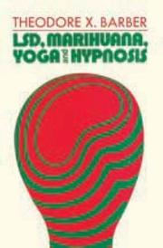
Lsd, Marihuana, Yoga and Hypnosis
Theodore Barber
LSD
Idioma y año pendientes de revisión.
Clasificación del repertorio: Historia.
Ver ficha del libro
- Barr; Harriet Linton; Langs et al.LSD; personality and experienceBiblioteca APDER
LSD; personality and experience
Barr; Harriet Linton; Langs et al.
LSD
Idioma y año pendientes de revisión.
Clasificación del repertorio: Historia.
Ver ficha del libro
- Dobkin de Rios, Marlene, Janiger, OscarLSD, spirituality, and the creative processBiblioteca APDER
LSD, spirituality, and the creative process
Dobkin de Rios, Marlene, Janiger, Oscar
LSD
Idioma y año pendientes de revisión.
Clasificación del repertorio: Divulgación y ciencia.
Ver ficha del libro
- David BlackLSD UNDERGROUND: Operation Julie, the Microdot Gang and the Brotherhood of Eternal LoveBiblioteca APDER
LSD UNDERGROUND: Operation Julie, the Microdot Gang and the Brotherhood of Eternal Love
David Black
LSD
Idioma y año pendientes de revisión.
Clasificación del repertorio: Historia.
Ver ficha del libro
- Reginald G SmartLysergic acid diethylamide (LSD) in the treatment of alcoholismBiblioteca APDER
Lysergic acid diethylamide (LSD) in the treatment of alcoholism
Reginald G Smart
LSD
Idioma y año pendientes de revisión.
Clasificación del repertorio: Terapia y clínica.
Ver ficha del libro
- Cody JohnsonMagic Medicine: A Trip Through the Intoxicating History and Modern-Day Use of Psychedelic PlantBiblioteca APDER
Magic Medicine: A Trip Through the Intoxicating History and Modern-Day Use of Psychedelic Plant
Cody Johnson
General
Idioma y año pendientes de revisión.
Clasificación del repertorio: Plantas y sustancias.
Ver ficha del libro
- Rick Doblin Simon G. PowellMagic Mushroom ExplorerBiblioteca APDER
Magic Mushroom Explorer
Rick Doblin Simon G. Powell
Psilocibina
Idioma y año pendientes de revisión.
Clasificación del repertorio: Plantas y sustancias.
Ver ficha del libro
- Antonio EscohotadoMajestades, crímenes y víctimasBiblioteca APDER
Majestades, crímenes y víctimas
Antonio Escohotado
Idioma y año pendientes de revisión.
Ficha bibliográfica en revisión.
Ver ficha del libro
- Rick Doblin .; Brad Burge; Albert Hoffman et al.Manifesting Minds: A Review of Psychedelics in Science, Medicine, Sex, and SpiritualityBiblioteca APDER
Manifesting Minds: A Review of Psychedelics in Science, Medicine, Sex, and Spirituality
Rick Doblin .; Brad Burge; Albert Hoffman et al.
General
Idioma y año pendientes de revisión.
Clasificación del repertorio: Divulgación y ciencia.
Ver ficha del libro
- Howard S. Lotsof; Boaz H. WachtelManual for Ibogaine Therapy: Screening, Safety, and TreatmentBiblioteca APDER
Manual for Ibogaine Therapy: Screening, Safety, and Treatment
Howard S. Lotsof; Boaz H. Wachtel
Ibogaína
Idioma y año pendientes de revisión.
Clasificación del repertorio: Terapia y clínica.
Ver ficha del libro
- MAPSManual of Psychedelic SupportBiblioteca APDER
Manual of Psychedelic Support
MAPS
General
Idioma y año pendientes de revisión.
Clasificación del repertorio: Historia.
Ver ficha del libro
- Ralph MetznerMaps of ConsciousnessBiblioteca APDER
Maps of Consciousness
Ralph Metzner
General
Idioma y año pendientes de revisión.
Clasificación del repertorio: Historia.
Ver ficha del libro
- G. Scott Graham, Andrea Scott Brown, Morgan LuttrellMDMA and GriefBiblioteca APDER
MDMA and Grief
G. Scott Graham, Andrea Scott Brown, Morgan Luttrell
MDMA
Idioma y año pendientes de revisión.
Clasificación del repertorio: Terapia y clínica.
Ver ficha del libro
- Stephan Harrod BuhnerMedicina con plantas sagradasBiblioteca APDER
Medicina con plantas sagradas
Stephan Harrod Buhner
Idioma y año pendientes de revisión.
Clasificación del repertorio: Plantas y sustancias.
Ver ficha del libro
- Richard Louis MillerMedicina psicodélica al final de la vidaBiblioteca APDER
Medicina psicodélica al final de la vida
Richard Louis Miller · 2025
Idioma y año pendientes de revisión.
Clasificación del repertorio: Terapia y clínica.
Ver ficha del libro
- Henri Michaux, Jean Paulhan, Edith BoissonnasMescalina 55Biblioteca APDER
Mescalina 55
Henri Michaux, Jean Paulhan, Edith Boissonnas
Mescalina
Idioma y año pendientes de revisión.
Clasificación del repertorio: Plantas y sustancias.
Ver ficha del libro
- Antonio EscohotadoMi Ibiza privadaBiblioteca APDER
Mi Ibiza privada
Antonio Escohotado
Idioma y año pendientes de revisión.
Ficha bibliográfica en revisión.
Ver ficha del libro
- Jordan Gruber James FadimanMicrodosing for Health, Healing, and Enhanced PerformanceBiblioteca APDER
Microdosing for Health, Healing, and Enhanced Performance
Jordan Gruber James Fadiman
General
Idioma y año pendientes de revisión.
Clasificación del repertorio: Divulgación y ciencia.
Ver ficha del libro
- Paul AustinMicrodosing Psychedelics: A Practical Guide to Upgrade Your LifeBiblioteca APDER
Microdosing Psychedelics: A Practical Guide to Upgrade Your Life
Paul Austin
General
Idioma y año pendientes de revisión.
Clasificación del repertorio: Historia.
Ver ficha del libro
- Robert E L Masters; Jean HoustonMind gamesBiblioteca APDER
Mind games
Robert E L Masters; Jean Houston
MDMA
Idioma y año pendientes de revisión.
Clasificación del repertorio: Divulgación y ciencia.
Ver ficha del libro
- Stanislav GrofModern Consciousness Research and the Understanding of ArtBiblioteca APDER
Modern Consciousness Research and the Understanding of Art
Stanislav Grof
MDMA
Idioma y año pendientes de revisión.
Clasificación del repertorio: Divulgación y ciencia.
Ver ficha del libro
- Aldous HuxleyMono y esenciaBiblioteca APDER
Mono y esencia
Aldous Huxley
Idioma y año pendientes de revisión.
Ficha bibliográfica en revisión.
Ver ficha del libro
- Aldous HuxleyMortal CoilsBiblioteca APDER
Mortal Coils
Aldous Huxley
Idioma y año pendientes de revisión.
Ficha bibliográfica en revisión.
Ver ficha del libro
- Albert HofmannMundo interior, mundo exteriorBiblioteca APDER
Mundo interior, mundo exterior
Albert Hofmann
Idioma y año pendientes de revisión.
Clasificación del repertorio: Historia.
Ver ficha del libro
- Aldous HuxleyMúsica en la nocheBiblioteca APDER
Música en la noche
Aldous Huxley
Idioma y año pendientes de revisión.
Ficha bibliográfica en revisión.
Ver ficha del libro
- Rick StrassmanMy Altered StatesBiblioteca APDER
My Altered States
Rick Strassman
General
Idioma y año pendientes de revisión.
Clasificación del repertorio: Historia.
Ver ficha del libro
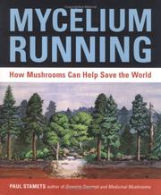
Mycelium Running
Paul Stamets
Idioma y año pendientes de revisión.
Clasificación del repertorio: Plantas y sustancias.
Ver ficha del libro
- Dieter Hagenbach, Lucius Werthmüller, Stanislav GrofMystic Chemist - The Life of Albert Hofmann and His Discovery of LSDBiblioteca APDER
Mystic Chemist - The Life of Albert Hofmann and His Discovery of LSD
Dieter Hagenbach, Lucius Werthmüller, Stanislav Grof
LSD
Idioma y año pendientes de revisión.
Clasificación del repertorio: Historia.
Ver ficha del libro
- Stanisław Ignacy WitkiewiczNarcotics: Nicotine, Alcohol, Cocaine, Peyote, Morphine, EtherBiblioteca APDER
Narcotics: Nicotine, Alcohol, Cocaine, Peyote, Morphine, Ether
Stanisław Ignacy Witkiewicz
Mescalina
Idioma y año pendientes de revisión.
Clasificación del repertorio: Plantas y sustancias.
Ver ficha del libro
- Erik StorlieNothing on my mindBiblioteca APDER
Nothing on my mind
Erik Storlie
LSD
Idioma y año pendientes de revisión.
Clasificación del repertorio: Historia.
Ver ficha del libro
- Aldous HuxleyNow More Than EverBiblioteca APDER
Now More Than Ever
Aldous Huxley
Idioma y año pendientes de revisión.
Ficha bibliográfica en revisión.
Ver ficha del libro
- Aldous HuxleyNueva visita a un mundo felizBiblioteca APDER
Nueva visita a un mundo feliz
Aldous Huxley
Idioma y año pendientes de revisión.
Ficha bibliográfica en revisión.
Ver ficha del libro
- Aldous HuxleyOn art and artistsBiblioteca APDER
On art and artists
Aldous Huxley
Idioma y año pendientes de revisión.
Ficha bibliográfica en revisión.
Ver ficha del libro
- Justin Smith-RuiuOn Drugs: Psychedelics, Philosophy, and the Nature of RealityBiblioteca APDER
On Drugs: Psychedelics, Philosophy, and the Nature of Reality
Justin Smith-Ruiu
General
Idioma y año pendientes de revisión.
Clasificación del repertorio: Historia.
Ver ficha del libro
- Aldous Huxleyon the marginBiblioteca APDER
on the margin
Aldous Huxley
Idioma y año pendientes de revisión.
Ficha bibliográfica en revisión.
Ver ficha del libro
- Maria EstevezOne Kind of KnowingBiblioteca APDER
One Kind of Knowing
Maria Estevez
General
Idioma y año pendientes de revisión.
Clasificación del repertorio: Divulgación y ciencia.
Ver ficha del libro
- Guy J HargreavesOperation: Trip to Oz: Busting the World's Largest LSD LabBiblioteca APDER
Operation: Trip to Oz: Busting the World's Largest LSD Lab
Guy J Hargreaves
LSD
Idioma y año pendientes de revisión.
Clasificación del repertorio: Historia.
Ver ficha del libro
- Dennis McDougalOperation White RabbitBiblioteca APDER
Operation White Rabbit
Dennis McDougal
LSD
Idioma y año pendientes de revisión.
Clasificación del repertorio: Historia.
Ver ficha del libro
- Ralph MetznerOvertones and Undercurrents: Spirituality, Reincarnation, and Ancestor Influence in Entheogenic PsychotherapyBiblioteca APDER
Overtones and Undercurrents: Spirituality, Reincarnation, and Ancestor Influence in Entheogenic Psychotherapy
Ralph Metzner
Idioma y año pendientes de revisión.
Ficha bibliográfica en revisión.
Ver ficha del libro
- Shulgin Sasha Y Shulgin AnnP I H K A L Una Historia Quimica De AmorBiblioteca APDER
P I H K A L Una Historia Quimica De Amor
Shulgin Sasha Y Shulgin Ann
Idioma y año pendientes de revisión.
Ficha bibliográfica en revisión.
Ver ficha del libro
- Charles BaudelaireParaísos artificialesBiblioteca APDER
Paraísos artificiales
Charles Baudelaire
Idioma y año pendientes de revisión.
Ficha bibliográfica en revisión.
Ver ficha del libro
- Walsh, Roger N, Vaughan, Frances EPaths beyond egoBiblioteca APDER
Paths beyond ego
Walsh, Roger N, Vaughan, Frances E
General
Idioma y año pendientes de revisión.
Clasificación del repertorio: Terapia y clínica.
Ver ficha del libro
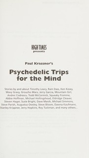
Paul Krassner's Psychedelic Trips for the Mind
Paul Krassner
General
Idioma y año pendientes de revisión.
Clasificación del repertorio: Historia.
Ver ficha del libro
- James FadimanPersonality and Personal Growth, 7eBiblioteca APDER
Personality and Personal Growth, 7e
James Fadiman
Idioma y año pendientes de revisión.
Clasificación del repertorio: Terapia y clínica.
Ver ficha del libro
- Charles DuitsPeyote dreams: journeys in the land of illuminationBiblioteca APDER
Peyote dreams: journeys in the land of illumination
Charles Duits
Mescalina
Idioma y año pendientes de revisión.
Clasificación del repertorio: Plantas y sustancias.
Ver ficha del libro
- Daniel C SwanPeyote religious artBiblioteca APDER
Peyote religious art
Daniel C Swan
Mescalina
Idioma y año pendientes de revisión.
Clasificación del repertorio: Plantas y sustancias.
Ver ficha del libro
- Danny FordePhenomenology of Psychedelic ExperiencesBiblioteca APDER
Phenomenology of Psychedelic Experiences
Danny Forde
General
Idioma y año pendientes de revisión.
Clasificación del repertorio: Historia.
Ver ficha del libro
- Paul B SteinmetzPipe, Bible, and peyote among the Oglala LakotaBiblioteca APDER
Pipe, Bible, and peyote among the Oglala Lakota
Paul B Steinmetz
Mescalina
Idioma y año pendientes de revisión.
Clasificación del repertorio: Plantas y sustancias.
Ver ficha del libro
- Stephan Harrod BuhnerPlant Intelligence and the Imaginal RealmBiblioteca APDER
Plant Intelligence and the Imaginal Realm
Stephan Harrod Buhner
Idioma y año pendientes de revisión.
Clasificación del repertorio: Plantas y sustancias.
Ver ficha del libro
- Círculo Sociocultural De Castellar De La FronteraPlantas psicoactivas : 69 plantas con efectos estimulantes, eufóricos, calmantes, afrodisíacos Biblioteca APDER
Plantas psicoactivas : 69 plantas con efectos estimulantes, eufóricos, calmantes, afrodisíacos
Círculo Sociocultural De Castellar De La Frontera
General
Idioma y año pendientes de revisión.
Clasificación del repertorio: Plantas y sustancias.
Ver ficha del libro
- Charles BaudelairePoemas en prosaBiblioteca APDER
Poemas en prosa
Charles Baudelaire
Idioma y año pendientes de revisión.
Ficha bibliográfica en revisión.
Ver ficha del libro
- Aldous HuxleyProper studies : the proper study of mankind is manBiblioteca APDER
Proper studies : the proper study of mankind is man
Aldous Huxley
Idioma y año pendientes de revisión.
Ficha bibliográfica en revisión.
Ver ficha del libro
- José Carlos BousoPsilocibesBiblioteca APDER
Psilocibes
José Carlos Bouso
Psilocibina
Idioma y año pendientes de revisión.
Clasificación del repertorio: Plantas y sustancias.
Ver ficha del libro
- Paul StametsPsilocybin Mushrooms in Their Natural HabitatsBiblioteca APDER
Psilocybin Mushrooms in Their Natural Habitats
Paul Stamets
Psilocibina
Idioma y año pendientes de revisión.
Clasificación del repertorio: Plantas y sustancias.
Ver ficha del libro
- Richard Tarnas, Sean Kelly, Rick DoblinPsyche Unbound: Essays in Honor of Stanislav GrofBiblioteca APDER
Psyche Unbound: Essays in Honor of Stanislav Grof
Richard Tarnas, Sean Kelly, Rick Doblin
General
Idioma y año pendientes de revisión.
Clasificación del repertorio: Terapia y clínica.
Ver ficha del libro
- Allan D. CoultPsychedelic Anthropology: The Study of Man Through the Manifestation of the MindBiblioteca APDER
Psychedelic Anthropology: The Study of Man Through the Manifestation of the Mind
Allan D. Coult
General
Idioma y año pendientes de revisión.
Clasificación del repertorio: Historia.
Ver ficha del libro
- Jean Houston Robert E. L. MastersPsychedelic ArtBiblioteca APDER
Psychedelic Art
Jean Houston Robert E. L. Masters
General
Idioma y año pendientes de revisión.
Clasificación del repertorio: Historia.
Ver ficha del libro
- Lama Mike CrowleyPsychedelic Buddhism: A User's Guide to Traditions, Symbols, and CeremoniesBiblioteca APDER
Psychedelic Buddhism: A User's Guide to Traditions, Symbols, and Ceremonies
Lama Mike Crowley
General
Idioma y año pendientes de revisión.
Clasificación del repertorio: Historia.
Ver ficha del libro
- Patrick Barr-MelejPsychedelic Chile: Youth, Counterculture, and Politics on the Road to Socialism and DictatorshiBiblioteca APDER
Psychedelic Chile: Youth, Counterculture, and Politics on the Road to Socialism and Dictatorshi
Patrick Barr-Melej
General
Idioma y año pendientes de revisión.
Clasificación del repertorio: Historia.
Ver ficha del libro
- Daniel GrauerPsychedelic ConsciousnessBiblioteca APDER
Psychedelic Consciousness
Daniel Grauer
General
Idioma y año pendientes de revisión.
Clasificación del repertorio: Historia.
Ver ficha del libro
- Mike MarinacciPsychedelic Cults and Outlaw ChurchesBiblioteca APDER
Psychedelic Cults and Outlaw Churches
Mike Marinacci
LSD
Idioma y año pendientes de revisión.
Clasificación del repertorio: Plantas y sustancias.
Ver ficha del libro

Psychedelic Healing: The Promise of Entheogens for Psychotherapy and Spiritual Development
Neal Goldsmith · 2011 · 2011
General
Idioma pendiente de revisión.
Clasificación del repertorio: Terapia y clínica.
Ver ficha del libro
- Thomas B RobertsPsychedelic horizons : Snow White, immune system, multistate mind, enlarging educationBiblioteca APDER
Psychedelic horizons : Snow White, immune system, multistate mind, enlarging education
Thomas B Roberts
General
Idioma y año pendientes de revisión.
Clasificación del repertorio: Historia.
Ver ficha del libro
- Marc AixaláPsychedelic Integration: Psychotherapy for Non-Ordinary States of ConsciousnessBiblioteca APDER
Psychedelic Integration: Psychotherapy for Non-Ordinary States of Consciousness
Marc Aixalá
Idioma y año pendientes de revisión.
Clasificación del repertorio: Terapia y clínica.
Ver ficha del libro
- Morgan ShipleyPsychedelic Mysticism : Transforming Consciousness, Religious Experiences, and Voluntary PeasanBiblioteca APDER
Psychedelic Mysticism : Transforming Consciousness, Religious Experiences, and Voluntary Peasan
Morgan Shipley
General
Idioma y año pendientes de revisión.
Clasificación del repertorio: Historia.
Ver ficha del libro
- Chris ElcockPsychedelic New YorkBiblioteca APDER
Psychedelic New York
Chris Elcock
LSD
Idioma y año pendientes de revisión.
Clasificación del repertorio: Historia.
Ver ficha del libro
- Timothy LearyPsychedelic prayers & other meditationsBiblioteca APDER
Psychedelic prayers & other meditations
Timothy Leary
General
Idioma y año pendientes de revisión.
Clasificación del repertorio: Historia.
Ver ficha del libro
- R ColemanPsychedelic Psychotherapy: A User Friendly Guide to Psychedelic Drug Assisted TherapyBiblioteca APDER
Psychedelic Psychotherapy: A User Friendly Guide to Psychedelic Drug Assisted Therapy
R Coleman
General
Idioma y año pendientes de revisión.
Clasificación del repertorio: Terapia y clínica.
Ver ficha del libro

Psychedelic Reflections
James Bakalar Lester Grinspoon
General
Idioma y año pendientes de revisión.
Clasificación del repertorio: Historia.
Ver ficha del libro
- Rosemary Woodruff Leary, David F. Phillips , Martina HoffmanPsychedelic Refugee: The League for Spiritual Discovery, the 1960s Cultural Revolution, and 23 Biblioteca APDER
Psychedelic Refugee: The League for Spiritual Discovery, the 1960s Cultural Revolution, and 23
Rosemary Woodruff Leary, David F. Phillips , Martina Hoffman
LSD
Idioma y año pendientes de revisión.
Clasificación del repertorio: Historia.
Ver ficha del libro
- David BlackPsychedelic Tricksters: A True Secret History of LSDBiblioteca APDER
Psychedelic Tricksters: A True Secret History of LSD
David Black
LSD
Idioma y año pendientes de revisión.
Clasificación del repertorio: Historia.
Ver ficha del libro
- Richard Louis MillerPsychedelic Wisdom: The Astonishing Rewards of Mind-Altering SubstancesBiblioteca APDER
Psychedelic Wisdom: The Astonishing Rewards of Mind-Altering Substances
Richard Louis Miller
General
Idioma y año pendientes de revisión.
Clasificación del repertorio: Historia.
Ver ficha del libro
- Alan WattsPsychedelics and Religious ExperienceBiblioteca APDER
Psychedelics and Religious Experience
Alan Watts
General
Idioma y año pendientes de revisión.
Clasificación del repertorio: Historia.
Ver ficha del libro
- Thomas B. RobertsPsychedelics and SpiritualityBiblioteca APDER
Psychedelics and Spirituality
Thomas B. Roberts
General
Idioma y año pendientes de revisión.
Clasificación del repertorio: Historia.
Ver ficha del libro
- Princeton University Student Committee on Mental HealthPsychedelics and the College StudentBiblioteca APDER
Psychedelics and the College Student
Princeton University Student Committee on Mental Health
General
Idioma y año pendientes de revisión.
Clasificación del repertorio: Historia.
Ver ficha del libro
- David Jay BrownPsychedelics and the Coming SingularityBiblioteca APDER
Psychedelics and the Coming Singularity
David Jay Brown
General
Idioma y año pendientes de revisión.
Clasificación del repertorio: Plantas y sustancias.
Ver ficha del libro
- Abbie RosnerPsychedelics and the Counterculture of AgingBiblioteca APDER
Psychedelics and the Counterculture of Aging
Abbie Rosner · 2026
Idioma y año pendientes de revisión.
Ficha bibliográfica en revisión.
Ver ficha del libro
- Simon YuglerPsychedelics and the SoulBiblioteca APDER
Psychedelics and the Soul
Simon Yugler
General
Idioma y año pendientes de revisión.
Clasificación del repertorio: Historia.
Ver ficha del libro
- David Castle David NuttPsychedelics as Psychiatric MedicationsBiblioteca APDER
Psychedelics as Psychiatric Medications
David Castle David Nutt
General
Idioma y año pendientes de revisión.
Clasificación del repertorio: Divulgación y ciencia.
Ver ficha del libro
- Aaronson B., Osmond H.Psychedelics, The Uses and Implications of Hallucinogenic DrugsBiblioteca APDER
Psychedelics, The Uses and Implications of Hallucinogenic Drugs
Aaronson B., Osmond H.
Idioma y año pendientes de revisión.
Ficha bibliográfica en revisión.
Ver ficha del libro
- Vít PokornýPsychonauticon. A transdisciplinary interpretation of psychedelic experiencesBiblioteca APDER
Psychonauticon. A transdisciplinary interpretation of psychedelic experiences
Vít Pokorný
General
Idioma y año pendientes de revisión.
Clasificación del repertorio: Historia.
Ver ficha del libro
- Ayelet WaldmanQue día mas buenoBiblioteca APDER
Que día mas bueno
Ayelet Waldman
Idioma y año pendientes de revisión.
Clasificación del repertorio: Terapia y clínica.
Ver ficha del libro
- Clancy Cavnar; Beatriz C Alex BelserQueering Psychedelics: From Oppression to Liberation in Psychedelic MedicineBiblioteca APDER
Queering Psychedelics: From Oppression to Liberation in Psychedelic Medicine
Clancy Cavnar; Beatriz C Alex Belser
General
Idioma y año pendientes de revisión.
Clasificación del repertorio: Terapia y clínica.
Ver ficha del libro
- Cathy ColemanRalph Metzner, Explorer of ConsciousnessBiblioteca APDER
Ralph Metzner, Explorer of Consciousness
Cathy Coleman
General
Idioma y año pendientes de revisión.
Clasificación del repertorio: Terapia y clínica.
Ver ficha del libro
- Antonio EscohotadoRameras y EsposasBiblioteca APDER
Rameras y Esposas
Antonio Escohotado
Idioma y año pendientes de revisión.
Ficha bibliográfica en revisión.
Ver ficha del libro
- Antonio EscohotadoRealidad y substanciaBiblioteca APDER
Realidad y substancia
Antonio Escohotado
Idioma y año pendientes de revisión.
Ficha bibliográfica en revisión.
Ver ficha del libro
- Clancy Cavnar Beatriz Caiuby LabateReligious Freedom and the Global Regulation of AyahuascaBiblioteca APDER
Religious Freedom and the Global Regulation of Ayahuasca
Clancy Cavnar Beatriz Caiuby Labate
Ayahuasca
Idioma y año pendientes de revisión.
Clasificación del repertorio: Plantas y sustancias.
Ver ficha del libro
Religious Revitalization among the Kiowas
Benjamin R. Kracht
Mescalina
Idioma y año pendientes de revisión.
Clasificación del repertorio: Plantas y sustancias.
Ver ficha del libro
- Charles Savage et alResearch with Psychedelic DrugsBiblioteca APDER
Research with Psychedelic Drugs
Charles Savage et al
General
Idioma y año pendientes de revisión.
Clasificación del repertorio: Divulgación y ciencia.
Ver ficha del libro
- Antonio EscohotadoRetrato del libertinoBiblioteca APDER
Retrato del libertino
Antonio Escohotado
Idioma y año pendientes de revisión.
Ficha bibliográfica en revisión.
Ver ficha del libro
- Michael PollanSaber comerBiblioteca APDER
Saber comer
Michael Pollan
Idioma y año pendientes de revisión.
Clasificación del repertorio: Terapia y clínica.
Ver ficha del libro
- Ralph MetznerSacred Vine of Spirits: AyahuascaBiblioteca APDER
Sacred Vine of Spirits: Ayahuasca
Ralph Metzner
Idioma y año pendientes de revisión.
Ficha bibliográfica en revisión.
Ver ficha del libro
- Javier RegueiroSan Pedro HuachumaBiblioteca APDER
San Pedro Huachuma
Javier Regueiro
Idioma y año pendientes de revisión.
Clasificación del repertorio: Plantas y sustancias.
Ver ficha del libro
- Aldous HuxleyScience, Liberty And PeaceBiblioteca APDER
Science, Liberty And Peace
Aldous Huxley
Idioma y año pendientes de revisión.
Ficha bibliográfica en revisión.
Ver ficha del libro
- Ralph MetznerSearching for the Philosophers' StoneBiblioteca APDER
Searching for the Philosophers' Stone
Ralph Metzner
Idioma y año pendientes de revisión.
Ficha bibliográfica en revisión.
Ver ficha del libro
- Brad HoldenSeattle Mystic Alfred M. HubbardBiblioteca APDER
Seattle Mystic Alfred M. Hubbard
Brad Holden
LSD
Idioma y año pendientes de revisión.
Clasificación del repertorio: Historia.
Ver ficha del libro
- Michael PollanSecond NatureBiblioteca APDER
Second Nature
Michael Pollan
Idioma y año pendientes de revisión.
Clasificación del repertorio: Terapia y clínica.
Ver ficha del libro
- Mike CrowleySecret Drugs of BuddhismBiblioteca APDER
Secret Drugs of Buddhism
Mike Crowley
General
Idioma y año pendientes de revisión.
Clasificación del repertorio: Historia.
Ver ficha del libro
- Tricia EastmanSeeding Consciousness: Plant Medicine, Ancestral Wisdom, and Psychedelic InitiationBiblioteca APDER
Seeding Consciousness: Plant Medicine, Ancestral Wisdom, and Psychedelic Initiation
Tricia Eastman
General
Idioma y año pendientes de revisión.
Clasificación del repertorio: Plantas y sustancias.
Ver ficha del libro
- Antonio EscohotadoSesenta semanas en el trópicoBiblioteca APDER
Sesenta semanas en el trópico
Antonio Escohotado
Idioma y año pendientes de revisión.
Ficha bibliográfica en revisión.
Ver ficha del libro
- Ross HeavenShamanic Plant Medicine--Salvia DivinorumBiblioteca APDER
Shamanic Plant Medicine--Salvia Divinorum
Ross Heaven
Salvia
Idioma y año pendientes de revisión.
Clasificación del repertorio: Plantas y sustancias.
Ver ficha del libro
- Jonathan OttShamanic Snuffs or Entheogenic ErrhinesBiblioteca APDER
Shamanic Snuffs or Entheogenic Errhines
Jonathan Ott
General
Idioma y año pendientes de revisión.
Clasificación del repertorio: Plantas y sustancias.
Ver ficha del libro
- Aldous HuxleySobre la divinidadBiblioteca APDER
Sobre la divinidad
Aldous Huxley
Idioma y año pendientes de revisión.
Ficha bibliográfica en revisión.
Ver ficha del libro
- Henri MichauxSpaced, displaced = Déplacements, dégagementsBiblioteca APDER
Spaced, displaced = Déplacements, dégagements
Henri Michaux
Idioma y año pendientes de revisión.
Ficha bibliográfica en revisión.
Ver ficha del libro
- Thomas RobertsSpiritual Growth with EntheogensBiblioteca APDER
Spiritual Growth with Entheogens
Thomas Roberts · 2001 · 2001
General
Idioma pendiente de revisión.
Clasificación del repertorio: Espiritualidad y filosofía.
Ver ficha del libro
- Brigitte GrofStanislav Grof, LSD PioneerBiblioteca APDER
Stanislav Grof, LSD Pioneer
Brigitte Grof
LSD
Idioma y año pendientes de revisión.
Clasificación del repertorio: Divulgación y ciencia.
Ver ficha del libro
- Walter BenjaminSueñosBiblioteca APDER
Sueños
Walter Benjamin
Idioma y año pendientes de revisión.
Ficha bibliográfica en revisión.
Ver ficha del libro
- Joel SelvinSummer of loveBiblioteca APDER
Summer of love
Joel Selvin
LSD
Idioma y año pendientes de revisión.
Clasificación del repertorio: Historia.
Ver ficha del libro
- Rachel HarrisSwimming in the SacredBiblioteca APDER
Swimming in the Sacred
Rachel Harris
PsilocibinaMDMALSD
Idioma y año pendientes de revisión.
Clasificación del repertorio: Plantas y sustancias.
Ver ficha del libro
- James EndredyTeachings of the Peyote ShamansBiblioteca APDER
Teachings of the Peyote Shamans
James Endredy
Mescalina
Idioma y año pendientes de revisión.
Clasificación del repertorio: Plantas y sustancias.
Ver ficha del libro
- Aldous HuxleyTemporaries and Eternals: The Music Criticism of Aldous Huxley, 1922-23Biblioteca APDER
Temporaries and Eternals: The Music Criticism of Aldous Huxley, 1922-23
Aldous Huxley
Idioma y año pendientes de revisión.
Ficha bibliográfica en revisión.
Ver ficha del libro
- Ralph MetznerTeonanácatl : sacred mushrooms of visionsBiblioteca APDER
Teonanácatl : sacred mushrooms of visions
Ralph Metzner
Idioma y año pendientes de revisión.
Ficha bibliográfica en revisión.
Ver ficha del libro
- Aldous HuxleyTexts and PretextsBiblioteca APDER
Texts and Pretexts
Aldous Huxley
Idioma y año pendientes de revisión.
Ficha bibliográfica en revisión.
Ver ficha del libro
- Howard G. CharingThe Accidental ShamanBiblioteca APDER
The Accidental Shaman
Howard G. Charing
Ayahuasca
Idioma y año pendientes de revisión.
Clasificación del repertorio: Plantas y sustancias.
Ver ficha del libro
- Susannah CahalanThe Acid QueenBiblioteca APDER
The Acid Queen
Susannah Cahalan
LSD
Idioma y año pendientes de revisión.
Clasificación del repertorio: Divulgación y ciencia.
Ver ficha del libro
- Stanislav GrofThe Adventure of Self-DiscoveryBiblioteca APDER
The Adventure of Self-Discovery
Stanislav Grof
General
Idioma y año pendientes de revisión.
Clasificación del repertorio: Terapia y clínica.
Ver ficha del libro
The Attraction of Peyote
Ake Hultkrantz
Mescalina
Idioma y año pendientes de revisión.
Clasificación del repertorio: Plantas y sustancias.
Ver ficha del libro
- Caspar GreeffThe ayahuasca diariesBiblioteca APDER
The ayahuasca diaries
Caspar Greeff
Ayahuasca
Idioma y año pendientes de revisión.
Clasificación del repertorio: Plantas y sustancias.
Ver ficha del libro
- Ralph MetznerThe Ayahuasca ExperienceBiblioteca APDER
The Ayahuasca Experience
Ralph Metzner
Ayahuasca
Idioma y año pendientes de revisión.
Clasificación del repertorio: Plantas y sustancias.
Ver ficha del libro
- Howard G. Charing; Peter Cloudsley; Pablo AmaringoThe Ayahuasca Visions of Pablo AmaringoBiblioteca APDER
The Ayahuasca Visions of Pablo Amaringo
Howard G. Charing; Peter Cloudsley; Pablo Amaringo
Ayahuasca
Idioma y año pendientes de revisión.
Clasificación del repertorio: Plantas y sustancias.
Ver ficha del libro
- Alexander BeinerThe Bigger PictureBiblioteca APDER
The Bigger Picture
Alexander Beiner
DMT
Idioma y año pendientes de revisión.
Clasificación del repertorio: Divulgación y ciencia.
Ver ficha del libro
- Michael PollanThe Botany of DesireBiblioteca APDER
The Botany of Desire
Michael Pollan
Idioma y año pendientes de revisión.
Clasificación del repertorio: Terapia y clínica.
Ver ficha del libro
- Aldous HuxleyThe Burning WheelBiblioteca APDER
The Burning Wheel
Aldous Huxley
Idioma y año pendientes de revisión.
Ficha bibliográfica en revisión.
Ver ficha del libro
- Aldous HuxleyThe collected poetry of Aldous HuxleyBiblioteca APDER
The collected poetry of Aldous Huxley
Aldous Huxley
Idioma y año pendientes de revisión.
Ficha bibliográfica en revisión.
Ver ficha del libro

The Crazy Wisdom of Ganesh Baba
Eve Baumohl Neuhaus
General
Idioma y año pendientes de revisión.
Clasificación del repertorio: Historia.
Ver ficha del libro
- Aldous HuxleyThe Defeat of Youth and Other PoemsBiblioteca APDER
The Defeat of Youth and Other Poems
Aldous Huxley
Idioma y año pendientes de revisión.
Ficha bibliográfica en revisión.
Ver ficha del libro
- Malden Grange BishopThe Discovery of LoveBiblioteca APDER
The Discovery of Love
Malden Grange Bishop
LSD
Idioma y año pendientes de revisión.
Clasificación del repertorio: Historia.
Ver ficha del libro
- Graham HancockThe divine sparkBiblioteca APDER
The divine spark
Graham Hancock
General
Idioma y año pendientes de revisión.
Clasificación del repertorio: Divulgación y ciencia.
Ver ficha del libro
- Aldous HuxleyThe Doors Of Perception & Heaven And HellBiblioteca APDER
The Doors Of Perception & Heaven And Hell
Aldous Huxley
Idioma y año pendientes de revisión.
Ficha bibliográfica en revisión.
Ver ficha del libro
- Shelby Hartman; Madison MargolinThe DoubleBlind Guide to PsychedelicsBiblioteca APDER
The DoubleBlind Guide to Psychedelics
Shelby Hartman; Madison Margolin · 2026
Idioma y año pendientes de revisión.
Ficha bibliográfica en revisión.
Ver ficha del libro
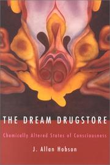
The Dream Drugstore
J. Allan Hobson
General
Idioma y año pendientes de revisión.
Clasificación del repertorio: Divulgación y ciencia.
Ver ficha del libro
- David EbinThe drug experience; first person accounts of addicts, writers, scientists and othersBiblioteca APDER
The drug experience; first person accounts of addicts, writers, scientists and others
David Ebin
Ayahuasca
Idioma y año pendientes de revisión.
Clasificación del repertorio: Plantas y sustancias.
Ver ficha del libro
- Daniel MerkurThe ecstatic imaginationBiblioteca APDER
The ecstatic imagination
Daniel Merkur
General
Idioma y año pendientes de revisión.
Clasificación del repertorio: Historia.
Ver ficha del libro
- Graham Hancock Jonathan Talat PhillipsThe electric JesusBiblioteca APDER
The electric Jesus
Graham Hancock Jonathan Talat Phillips
Ayahuasca
Idioma y año pendientes de revisión.
Clasificación del repertorio: Plantas y sustancias.
Ver ficha del libro
- Martin W. BallThe Entheological ParadigmBiblioteca APDER
The Entheological Paradigm
Martin W. Ball
DMT
Idioma y año pendientes de revisión.
Clasificación del repertorio: Plantas y sustancias.
Ver ficha del libro
- Rupert Sheldrake, Terence McKenna, Ralph AbrahamThe Evolutionary MindBiblioteca APDER
The Evolutionary Mind
Rupert Sheldrake, Terence McKenna, Ralph Abraham
General
Idioma y año pendientes de revisión.
Clasificación del repertorio: Divulgación y ciencia.
Ver ficha del libro
- Beatriz Caiuby Labate (ed.)The Expanding World Ayahuasca DiasporaBiblioteca APDER
The Expanding World Ayahuasca Diaspora
Beatriz Caiuby Labate (ed.)
Idioma y año pendientes de revisión.
Clasificación del repertorio: Plantas y sustancias.
Ver ficha del libro
- Joseph TafurThe Fellowship of the RiverBiblioteca APDER
The Fellowship of the River
Joseph Tafur · 2017 · 2017
Ayahuasca
Idioma pendiente de revisión.
Clasificación del repertorio: Plantas y sustancias.
Ver ficha del libro
- Itzhak Beery; John PerkinsThe Gift of ShamanismBiblioteca APDER
The Gift of Shamanism
Itzhak Beery; John Perkins
Ayahuasca
Idioma y año pendientes de revisión.
Clasificación del repertorio: Plantas y sustancias.
Ver ficha del libro
- David E. NicholsThe Heffter Review of Psychedelic ResearchBiblioteca APDER
The Heffter Review of Psychedelic Research
David E. Nichols
General
Idioma y año pendientes de revisión.
Clasificación del repertorio: Divulgación y ciencia.
Ver ficha del libro
- Torsten PassieThe History of MDMABiblioteca APDER
The History of MDMA
Torsten Passie
MDMA
Idioma y año pendientes de revisión.
Clasificación del repertorio: Historia.
Ver ficha del libro
- Aldous HuxleyThe human situation : lectures at Santa Barbara, 1959Biblioteca APDER
The human situation : lectures at Santa Barbara, 1959
Aldous Huxley
Idioma y año pendientes de revisión.
Ficha bibliográfica en revisión.
Ver ficha del libro
- Ross HeavenThe Hummingbird's Journey to GodBiblioteca APDER
The Hummingbird's Journey to God
Ross Heaven
Mescalina
Idioma y año pendientes de revisión.
Clasificación del repertorio: Plantas y sustancias.
Ver ficha del libro
- Mitchell Dean; Daniel ZamoraThe Last Man Takes LSDBiblioteca APDER
The Last Man Takes LSD
Mitchell Dean; Daniel Zamora
LSD
Idioma y año pendientes de revisión.
Clasificación del repertorio: Historia.
Ver ficha del libro
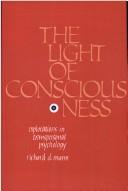
The Light of Consciousness
Richard D. Mann
General
Idioma y año pendientes de revisión.
Clasificación del repertorio: Historia.
Ver ficha del libro
- Rose CartwrightThe Maps We CarryBiblioteca APDER
The Maps We Carry
Rose Cartwright
General
Idioma y año pendientes de revisión.
Clasificación del repertorio: Historia.
Ver ficha del libro

The Marriage Of The Sun And Moon
Andrew Weil
General
Idioma y año pendientes de revisión.
Clasificación del repertorio: Plantas y sustancias.
Ver ficha del libro
- James WyllieThe Microdot GangBiblioteca APDER
The Microdot Gang
James Wyllie
LSD
Idioma y año pendientes de revisión.
Clasificación del repertorio: Historia.
Ver ficha del libro
- John C. Ryan; Patrícia Vieria; Monica GaglianoThe Mind of PlantsBiblioteca APDER
The Mind of Plants
John C. Ryan; Patrícia Vieria; Monica Gagliano
AyahuascaMescalina
Idioma y año pendientes de revisión.
Clasificación del repertorio: Plantas y sustancias.
Ver ficha del libro
- Bill Minutaglio; Steven L. DavisThe Most Dangerous Man in AmericaBiblioteca APDER
The Most Dangerous Man in America
Bill Minutaglio; Steven L. Davis
LSD
Idioma y año pendientes de revisión.
Clasificación del repertorio: Historia.
Ver ficha del libro
- James OrocThe new psychedelic revolutionBiblioteca APDER
The new psychedelic revolution
James Oroc
General
Idioma y año pendientes de revisión.
Clasificación del repertorio: Historia.
Ver ficha del libro
- Aldous HuxleyThe Olive Tree and Other EssaysBiblioteca APDER
The Olive Tree and Other Essays
Aldous Huxley
Idioma y año pendientes de revisión.
Ficha bibliográfica en revisión.
Ver ficha del libro
- Aldous HuxleyThe Perennial PhilosophyBiblioteca APDER
The Perennial Philosophy
Aldous Huxley
Idioma y año pendientes de revisión.
Ficha bibliográfica en revisión.
Ver ficha del libro
- Guy MountThe Peyote bookBiblioteca APDER
The Peyote book
Guy Mount
Mescalina
Idioma y año pendientes de revisión.
Clasificación del repertorio: Plantas y sustancias.
Ver ficha del libro
- Alexander Scott DawsonThe peyote effectBiblioteca APDER
The peyote effect
Alexander Scott Dawson
Mescalina
Idioma y año pendientes de revisión.
Clasificación del repertorio: Plantas y sustancias.
Ver ficha del libro
- James Sydney SlotkinThe Peyote religion; a study in Indian-white relationsBiblioteca APDER
The Peyote religion; a study in Indian-white relations
James Sydney Slotkin
Mescalina
Idioma y año pendientes de revisión.
Clasificación del repertorio: Plantas y sustancias.
Ver ficha del libro
- David F. AberleThe peyote religion among the navahoBiblioteca APDER
The peyote religion among the navaho
David F. Aberle
Mescalina
Idioma y año pendientes de revisión.
Clasificación del repertorio: Plantas y sustancias.
Ver ficha del libro
- J. Thomas UngerleiderThe Problems and Prospects of LsdBiblioteca APDER
The Problems and Prospects of Lsd
J. Thomas Ungerleider
LSD
Idioma y año pendientes de revisión.
Clasificación del repertorio: Historia.
Ver ficha del libro
- Peter SilverstoneThe Promise of PsychedelicsBiblioteca APDER
The Promise of Psychedelics
Peter Silverstone
General
Idioma y año pendientes de revisión.
Clasificación del repertorio: Divulgación y ciencia.
Ver ficha del libro
- Simon G. PowellThe Psilocybin SolutionBiblioteca APDER
The Psilocybin Solution
Simon G. Powell
Psilocibina
Idioma y año pendientes de revisión.
Clasificación del repertorio: Plantas y sustancias.
Ver ficha del libro
- J Harold Ellens and Thomas B RobertsThe Psychedelic Policy QuagmireBiblioteca APDER
The Psychedelic Policy Quagmire
J Harold Ellens and Thomas B Roberts
AyahuascaMDMALSD
Idioma y año pendientes de revisión.
Clasificación del repertorio: Plantas y sustancias.
Ver ficha del libro
- Anton Gomez-EscolarThe Psychedelic ReawakeningBiblioteca APDER
The Psychedelic Reawakening
Anton Gomez-Escolar
General
Idioma y año pendientes de revisión.
Clasificación del repertorio: Terapia y clínica.
Ver ficha del libro
- Kristina HunterThe Psychedelic Seeker’s GuideBiblioteca APDER
The Psychedelic Seeker’s Guide
Kristina Hunter · 2026
Idioma y año pendientes de revisión.
Clasificación del repertorio: Terapia y clínica.
Ver ficha del libro
- Richard C. Stillman and Robert E. WilletteThe Psychopharmacology of HallucinogensBiblioteca APDER
The Psychopharmacology of Hallucinogens
Richard C. Stillman and Robert E. Willette
General
Idioma y año pendientes de revisión.
Clasificación del repertorio: Divulgación y ciencia.
Ver ficha del libro
The Religion of Ayahuasca
Alex Polari de Alverga
Ayahuasca
Idioma y año pendientes de revisión.
Clasificación del repertorio: Plantas y sustancias.
Ver ficha del libro
- Ralph MetznerThe Roots of War and DominationBiblioteca APDER
The Roots of War and Domination
Ralph Metzner
Idioma y año pendientes de revisión.
Ficha bibliográfica en revisión.
Ver ficha del libro
- Myron StolaroffThe Secret Chief RevealedBiblioteca APDER
The Secret Chief Revealed
Myron Stolaroff
Idioma y año pendientes de revisión.
Clasificación del repertorio: Terapia y clínica.
Ver ficha del libro
- Susana Bustos; John Perkins; Robert TindallThe Shamanic OdysseyBiblioteca APDER
The Shamanic Odyssey
Susana Bustos; John Perkins; Robert Tindall
General
Idioma y año pendientes de revisión.
Clasificación del repertorio: Plantas y sustancias.
Ver ficha del libro
- Aldous HuxleyThe Tillotson BanquetBiblioteca APDER
The Tillotson Banquet
Aldous Huxley
Idioma y año pendientes de revisión.
Ficha bibliográfica en revisión.
Ver ficha del libro
- Tom John WolffThe Touristic Use of Ayahuasca in PeruBiblioteca APDER
The Touristic Use of Ayahuasca in Peru
Tom John Wolff
Ayahuasca
Idioma y año pendientes de revisión.
Clasificación del repertorio: Plantas y sustancias.
Ver ficha del libro
- Harold A. Abramson (ed.)The use of LSD in psychotherapy; transactionsBiblioteca APDER
The use of LSD in psychotherapy; transactions
Harold A. Abramson (ed.)
LSD
Idioma y año pendientes de revisión.
Clasificación del repertorio: Terapia y clínica.
Ver ficha del libro
- Houston, Jean;Masters, RobertThe varieties of psychedelic experience the classic guide to the effects of LSD on the human psycheBiblioteca APDER
The varieties of psychedelic experience the classic guide to the effects of LSD on the human psyche
Houston, Jean;Masters, Robert
Idioma y año pendientes de revisión.
Ficha bibliográfica en revisión.
Ver ficha del libro
- Stanislav GrofThe Way of the Psychonaut. Volume OneBiblioteca APDER
The Way of the Psychonaut. Volume One
Stanislav Grof
General
Idioma y año pendientes de revisión.
Clasificación del repertorio: Historia.
Ver ficha del libro
- Stanislav Grof; Rick Doblin; Brigitte Grof (eds.)The Way of the Psychonaut. Volume TwoBiblioteca APDER
The Way of the Psychonaut. Volume Two
Stanislav Grof; Rick Doblin; Brigitte Grof (eds.)
General
Idioma y año pendientes de revisión.
Clasificación del repertorio: Terapia y clínica.
Ver ficha del libro
- Ralph MetznerThe Well of RemembranceBiblioteca APDER
The Well of Remembrance
Ralph Metzner
Idioma y año pendientes de revisión.
Clasificación del repertorio: Historia.
Ver ficha del libro
- Beatriz Caiuby Labate; Clancy CavnarThe World Ayahuasca DiasporaBiblioteca APDER
The World Ayahuasca Diaspora
Beatriz Caiuby Labate; Clancy Cavnar
Ayahuasca
Idioma y año pendientes de revisión.
Clasificación del repertorio: Plantas y sustancias.
Ver ficha del libro
- Aldous HuxleyThe world of light : a comedy in three actsBiblioteca APDER
The world of light : a comedy in three acts
Aldous Huxley
Idioma y año pendientes de revisión.
Ficha bibliográfica en revisión.
Ver ficha del libro
- Aldous HuxleyThemes and variationsBiblioteca APDER
Themes and variations
Aldous Huxley
Idioma y año pendientes de revisión.
Ficha bibliográfica en revisión.
Ver ficha del libro
- Stanislav Grof Friederike Meckel FischerTherapy with substanceBiblioteca APDER
Therapy with substance
Stanislav Grof Friederike Meckel Fischer
General
Idioma y año pendientes de revisión.
Clasificación del repertorio: Terapia y clínica.
Ver ficha del libro
- Terence McKenna Laura Archera HuxleyThis Timeless MomentBiblioteca APDER
This Timeless Moment
Terence McKenna Laura Archera Huxley
MescalinaLSD
Idioma y año pendientes de revisión.
Clasificación del repertorio: Plantas y sustancias.
Ver ficha del libro
- James PennerTimothy Leary: The Harvard Years: Early Writings on LSD and Psilocybin with Richard Alpert, HusBiblioteca APDER
Timothy Leary: The Harvard Years: Early Writings on LSD and Psilocybin with Richard Alpert, Hus
James Penner
PsilocibinaLSD
Idioma y año pendientes de revisión.
Clasificación del repertorio: Plantas y sustancias.
Ver ficha del libro
- Peter BebergalToo Much to DreamBiblioteca APDER
Too Much to Dream
Peter Bebergal
General
Idioma y año pendientes de revisión.
Clasificación del repertorio: Historia.
Ver ficha del libro
- James FadimanTranspersonal education : a curriculum for feeling and beingBiblioteca APDER
Transpersonal education : a curriculum for feeling and being
James Fadiman
Idioma y año pendientes de revisión.
Clasificación del repertorio: Terapia y clínica.
Ver ficha del libro
- Norman OhlerTripped: Nazi Germany, the CIA, and the Dawn of the Psychedelic AgeBiblioteca APDER
Tripped: Nazi Germany, the CIA, and the Dawn of the Psychedelic Age
Norman Ohler
General
Idioma y año pendientes de revisión.
Clasificación del repertorio: Divulgación y ciencia.
Ver ficha del libro
- Ernesto LondoñoTrippy: The Peril and Promise of Medicinal PsychedelicsBiblioteca APDER
Trippy: The Peril and Promise of Medicinal Psychedelics
Ernesto Londoño
General
Idioma y año pendientes de revisión.
Clasificación del repertorio: Historia.
Ver ficha del libro
- Michael PollanTu mente bajo los efectos de las plantasBiblioteca APDER
Tu mente bajo los efectos de las plantas
Michael Pollan
Idioma y año pendientes de revisión.
Clasificación del repertorio: Terapia y clínica.
Ver ficha del libro
- Timothy LearyTurn On, Tune In, Drop OutBiblioteca APDER
Turn On, Tune In, Drop Out
Timothy Leary
General
Idioma y año pendientes de revisión.
Clasificación del repertorio: Historia.
Ver ficha del libro
- Henri MichauxUn bárbaro en AsiaBiblioteca APDER
Un bárbaro en Asia
Henri Michaux
Idioma y año pendientes de revisión.
Ficha bibliográfica en revisión.
Ver ficha del libro
- Aldous HuxleyUn mundo felizBiblioteca APDER
Un mundo feliz
Aldous Huxley
Idioma y año pendientes de revisión.
Ficha bibliográfica en revisión.
Ver ficha del libro
- Rick EmersonUnmask Alice: LSD, Satanic Panic, and the Imposter Behind the World's Most Notorious DiariesBiblioteca APDER
Unmask Alice: LSD, Satanic Panic, and the Imposter Behind the World's Most Notorious Diaries
Rick Emerson
LSD
Idioma y año pendientes de revisión.
Clasificación del repertorio: Historia.
Ver ficha del libro
- Richard H. BlumUtopiates : the use & users of LSD 25Biblioteca APDER
Utopiates : the use & users of LSD 25
Richard H. Blum
LSD
Idioma y año pendientes de revisión.
Clasificación del repertorio: Divulgación y ciencia.
Ver ficha del libro
- Aldous HuxleyViejo muere el cisneBiblioteca APDER
Viejo muere el cisne
Aldous Huxley
Idioma y año pendientes de revisión.
Ficha bibliográfica en revisión.
Ver ficha del libro
- C. Clinton SidleVipassana Meditation and AyahuascaBiblioteca APDER
Vipassana Meditation and Ayahuasca
C. Clinton Sidle
Ayahuasca
Idioma y año pendientes de revisión.
Clasificación del repertorio: Plantas y sustancias.
Ver ficha del libro
- Jan Kounen, Alejandro Jodorowsky, Jack CainVisionary Ayahuasca: A Manual for Therapeutic and Spiritual JourneysBiblioteca APDER
Visionary Ayahuasca: A Manual for Therapeutic and Spiritual Journeys
Jan Kounen, Alejandro Jodorowsky, Jack Cain
Ayahuasca
Idioma y año pendientes de revisión.
Clasificación del repertorio: Terapia y clínica.
Ver ficha del libro
- Daniel Pinchbeck; Sophia RokhlinWhen Plants DreamBiblioteca APDER
When Plants Dream
Daniel Pinchbeck; Sophia Rokhlin
Ayahuasca
Idioma y año pendientes de revisión.
Clasificación del repertorio: Plantas y sustancias.
Ver ficha del libro
- Peter H ConnersWhite hand societyBiblioteca APDER
White hand society
Peter H Conners
General
Idioma y año pendientes de revisión.
Clasificación del repertorio: Plantas y sustancias.
Ver ficha del libro
- Allyson Grey Diana Reed SlatteryXenolinguistics: Psychedelics, Language, and the Evolution of ConsciousnessBiblioteca APDER
Xenolinguistics: Psychedelics, Language, and the Evolution of Consciousness
Allyson Grey Diana Reed Slattery
General
Idioma y año pendientes de revisión.
Clasificación del repertorio: Divulgación y ciencia.
Ver ficha del libro
- James FadimanYour Symphony of SelvesBiblioteca APDER
Your Symphony of Selves
James Fadiman
Idioma y año pendientes de revisión.
Clasificación del repertorio: Terapia y clínica.
Ver ficha del libro
- Allan Badiner; Alex GreyZig zag zen: buddhism and psychedelicsBiblioteca APDER
Zig zag zen: buddhism and psychedelics
Allan Badiner; Alex Grey
General
Idioma y año pendientes de revisión.
Clasificación del repertorio: Historia.
Ver ficha del libro
- Maximilian von Heyden, Henrik Jungaberle y Tomislav Majić (eds.)Handbuch Psychoaktive Substanzen2018
Handbuch Psychoaktive Substanzen
von Heyden, Maximilian; Jungaberle, Henrik; Majić, Tomislav (eds.) · 2018 · alemán
General
Manual académico actual en alemán.
Ver ficha del libro
- Robert B. Raffa (ed.)Kratom and Other Mitragynines2014
Kratom and Other Mitragynines
Raffa, Robert B. (ed.) · 2014 · inglés
Kratom
Química y farmacología del kratom.
Ver ficha del libro
- Bita MoghaddamKetamine2021
Ketamine
Moghaddam, Bita · 2021 · inglés
Ketamina
Introducción clara y actual, de una neurocientífica (MIT Press).
Ver ficha del libro
- Pablo A. González y Juan Cruz Balian et al. (El Gato y la Caja)Un libro sobre drogas2017
Un libro sobre drogas
González, Pablo A.; Juan Cruz Balian et al. (El Gato y la Caja) · 2017 · español
General
Divulgación científica argentina, de libre acceso.
Ver ficha del libro
Ayahuasca, medicina del alma
Viegas, Diego R.; Berlanda, Néstor · 2012 · español
Ayahuasca
Visión interdisciplinar argentina, clínica y antropológica.
Ver ficha del libro
- Helen L. Bonny y Louis M. SavaryMusic and Your Mind1973
Music and Your Mind: Listening with a New Consciousness
Bonny, Helen L.; Savary, Louis M. · 1973 · inglés
LSD
La musicoterapeuta que diseñó la música de las sesiones de Spring Grove.
Ver ficha del libro
- Iker PuenteInvestigación y psicoterapia psicodélica2017
Investigación y psicoterapia psicodélica
Puente, Iker · 2017 · español
General
Pasado, presente y futuro de la terapia psicodélica.
Ver ficha del libro
- Richard YensenHacia una medicina psiquedélica1998
Hacia una medicina psiquedélica
Yensen, Richard · 1998 · español
General
Reflexiones de un terapeuta de Spring Grove, publicadas en español.
Ver ficha del libro
- Salvador Roquet y Pierre FavreauLos alucinógenos1981
Los alucinógenos: de la concepción indígena a una nueva psicoterapia
Roquet, Salvador; Favreau, Pierre · 1981 · español
PsilocibinaDatura y solanáceasKetamina
El método de psicosíntesis de Roquet, por él mismo.
Ver ficha del libro
- Scott J. HillConfrontation with the Unconscious2013
Confrontation with the Unconscious: Jungian Depth Psychology and Psychedelic Experience
Hill, Scott J. · 2013 · inglés
General
La lectura junguiana más completa de la experiencia psicodélica.
Ver ficha del libro
- Tod H. Mikuriya (ed.)Marijuana1973
Marijuana: Medical Papers 1839-1972
Mikuriya, Tod H. (ed.) · 1973 · inglés
Cannabis
Antología de la literatura médica histórica sobre el cannabis.
Ver ficha del libro
- W. V. CaldwellLSD Psychotherapy1968
LSD Psychotherapy: An Exploration of Psychedelic and Psycholytic Therapy
Caldwell, W. V. · 1968 · inglés
LSD
Panorama clásico de las terapias psicodélica y psicolítica de los sesenta.
Ver ficha del libro
- Alexander ShulginThe Nature of Drugs2021
The Nature of Drugs: History, Pharmacology, and Social Impact (vol. 1)
Shulgin, Alexander · 2021 · inglés
General
Las clases universitarias de Shulgin sobre fármacos y sociedad.
Ver ficha del libro
- Annelie Hintzen y Torsten PassieThe Pharmacology of LSD2010
The Pharmacology of LSD: A Critical Review
Hintzen, Annelie; Passie, Torsten · 2010 · inglés
LSD
Revisión de referencia de la farmacología de la LSD.
Ver ficha del libro
- Alhena Caicedo FernándezLa alteridad radical que cura2015
La alteridad radical que cura: neochamanismos yajeceros en Colombia
Fernández, Alhena Caicedo · 2015 · español
Ayahuasca
Etnografía de las tomas urbanas de yajé.
Ver ficha del libro
- Andrew Russell y Elizabeth Rahman (eds.)The Master Plant2015
The Master Plant: Tobacco in Lowland South America
Russell, Andrew; Rahman, Elizabeth (eds.) · 2015 · inglés
Tabaco
El tabaco como planta maestra en la Amazonía.
Ver ficha del libro
- Benjamin FeinbergThe Devil's Book of Culture2003
The Devil's Book of Culture: History, Mushrooms, and Caves in Southern Mexico
Feinberg, Benjamin · 2003 · inglés
Psilocibina
Etnografía de la sierra mazateca tras la llegada de los buscadores de hongos.
Ver ficha del libro
- Cameron L. McNeil (ed.)Chocolate in Mesoamerica2006
Chocolate in Mesoamerica: A Cultural History of Cacao
McNeil, Cameron L. (ed.) · 2006 · inglés
Cacao
Volumen académico sobre el cacao ritual.
Ver ficha del libro
- Catherine J. AllenThe Hold Life Has1988
The Hold Life Has: Coca and Cultural Identity in an Andean Community
Allen, Catherine J. · 1988 · inglés
Coca
Etnografía de la coca en una comunidad andina.
Ver ficha del libro
- Davi Kopenawa y Bruce AlbertLa chute du ciel2010
La chute du ciel (The Falling Sky)
Kopenawa, Davi; Albert, Bruce · 2010 · francés
Yopo y rapés
La palabra de un chamán yanomami y su polvo yãkoana.
Ver ficha del libro
- E. Jean Matteson Langdon y Gerhard Baer (eds.)Portals of Power1992
Portals of Power: Shamanism in South America
Langdon, E. Jean Matteson; Baer, Gerhard (eds.) · 1992 · inglés
Ayahuasca
Volumen académico de referencia sobre chamanismo sudamericano.
Ver ficha del libro
- Gerardo Reichel-DolmatoffBeyond the Milky Way1978
Beyond the Milky Way: Hallucinatory Imagery of the Tukano Indians
Reichel-Dolmatoff, Gerardo · 1978 · inglés
Ayahuasca
Los dibujos y visiones del yajé entre los tukano.
Ver ficha del libro
- Gutierre TibónLa ciudad de los hongos alucinantes1983
La ciudad de los hongos alucinantes
Tibón, Gutierre · 1983 · español
Psilocibina
Huautla y los hongos sagrados vistos por un humanista.
Ver ficha del libro
- Hans Peter DuerrTraumzeit1978
Traumzeit (Dreamtime)
Duerr, Hans Peter · 1978 · alemán
Datura y solanáceas
Brujas, ungüentos y la frontera entre naturaleza y civilización.
Ver ficha del libro
- Johannes WilbertTobacco and Shamanism in South America1987
Tobacco and Shamanism in South America
Wilbert, Johannes · 1987 · inglés
Tabaco
La obra de referencia sobre el tabaco chamánico.
Ver ficha del libro
- Josep Maria Fericgla (ed.)Plantas, chamanismo y estados de consciencia1994
Plantas, chamanismo y estados de consciencia
Fericgla, Josep Maria (ed.) · 1994 · español
General
Schultes, Ott, Shulgin, Samorini y otros en un volumen español.
Ver ficha del libro
- Julien BonhommeLe miroir et le crâne2006
Le miroir et le crâne: parcours initiatique du Bwete Misoko
Bonhomme, Julien · 2006 · francés
Ibogaína
La etnografía más rigurosa de la iniciación con iboga en Gabón.
Ver ficha del libro
- Marc G. BlaineyChrist Returns from the Jungle2021
Christ Returns from the Jungle: Ayahuasca Religion as Mystical Healing
Blainey, Marc G. · 2021 · inglés
Ayahuasca
Etnografía del Santo Daime en Europa.
Ver ficha del libro
- Michael J. HarnerThe Jívaro1972
The Jívaro: People of the Sacred Waterfalls
Harner, Michael J. · 1972 · inglés
AyahuascaDatura y solanáceas
Etnografía clásica de los shuar y su uso de natem y floripondio.
Ver ficha del libro
- Michael Ripinsky-NaxonThe Nature of Shamanism1993
The Nature of Shamanism: Substance and Function of a Religious Metaphor
Ripinsky-Naxon, Michael · 1993 · inglés
General
Teoría del chamanismo con los alucinógenos en el centro.
Ver ficha del libro
- Sébastien Baud y Christian Ghasarian (eds.)Des plantes psychotropes2010
Des plantes psychotropes: initiations, thérapies et quêtes de soi
Baud, Sébastien; Ghasarian, Christian (eds.) · 2010 · francés
General
Volumen académico francés sobre usos rituales y terapéuticos.
Ver ficha del libro
- Vera Rubin (ed.)Cannabis and Culture1975
Cannabis and Culture
Rubin, Vera (ed.) · 1975 · inglés
Cannabis
Volumen antropológico clásico sobre el cannabis en el mundo.
Ver ficha del libro
- Vincent Lebot, Mark Merlin y Lamont LindstromKava1992
Kava: The Pacific Elixir
Lebot, Vincent; Merlin, Mark; Lindstrom, Lamont · 1992 · inglés
Kava
La obra definitiva sobre la kava.
Ver ficha del libro
- Alberto CastoldiIl testo drogato1994
Il testo drogato
Castoldi, Alberto · 1994 · italiano
General
Historia de la literatura escrita bajo drogas.
Ver ficha del libro
- Bernardino de SahagúnHistoria general de las cosas de Nueva España1577
Historia general de las cosas de Nueva España
de Sahagún, Bernardino · 1577 · español
PsilocibinaMescalina
El Códice Florentino describe teonanácatl, péyotl y ololiuhqui.
Ver ficha del libro
- Carl LumholtzUnknown Mexico1902
Unknown Mexico
Lumholtz, Carl · 1902 · inglés
Mescalina
Primera gran descripción de tarahumaras y huicholes y su peyote.
Ver ficha del libro
- Charles PerryThe Haight-Ashbury1984
The Haight-Ashbury: A History
Perry, Charles · 1984 · inglés
LSD
Crónica de referencia del barrio que fue epicentro psicodélico.
Ver ficha del libro
- David Lewis-WilliamsThe Mind in the Cave2002
The Mind in the Cave
Lewis-Williams, David · 2002 · inglés
General
Arte paleolítico, visiones y estados alterados.
Ver ficha del libro
- David Solomon (ed.)The Marijuana Papers1966
The Marijuana Papers
Solomon, David (ed.) · 1966 · inglés
Cannabis
Antología clásica de textos sobre la marihuana.
Ver ficha del libro
- David T. CourtwrightForces of Habit2001
Forces of Habit: Drugs and the Making of the Modern World
Courtwright, David T. · 2001 · inglés
General
Cómo las drogas configuraron la economía moderna.
Ver ficha del libro
- Erik DavisBlotter2024
Blotter: The Untold Story of an Acid Medium
Davis, Erik · 2024 · inglés
LSD
Historia cultural y artística del secante de LSD.
Ver ficha del libro
- Erika DyckPsychedelics2024
Psychedelics: A Visual Odyssey
Dyck, Erika · 2024 · inglés
General
Historia ilustrada de los psicodélicos (MIT Press).
Ver ficha del libro
- Ernst von BibraDie narkotischen Genussmittel und der Mensch1855
Die narkotischen Genussmittel und der Mensch (Plant Intoxicants)
von Bibra, Ernst · 1855 · alemán
General
Primer tratado moderno sobre las plantas embriagantes.
Ver ficha del libro
- Gonzalo Aguirre BeltránMedicina y magia1963
Medicina y magia: el proceso de aculturación en la estructura colonial
Beltrán, Gonzalo Aguirre · 1963 · español
Mescalina
Peyote, ololiuhqui e Inquisición en la Nueva España.
Ver ficha del libro
- Hedwig Schleiffer (ed.)Narcotic Plants of the Old World Used in Rituals and Everyday Life1979
Narcotic Plants of the Old World Used in Rituals and Everyday Life
Schleiffer, Hedwig (ed.) · 1979 · inglés
Datura y solanáceas
Antología de textos históricos sobre plantas del Viejo Mundo.
Ver ficha del libro
- John MarkoffWhat the Dormouse Said2005
What the Dormouse Said
Markoff, John · 2005 · inglés
LSD
Cómo la contracultura y la LSD moldearon la informática personal.
Ver ficha del libro
- Jordan Goodman, Paul E. Lovejoy y Andrew Sherratt (eds.)Consuming Habits1995
Consuming Habits: Drugs in History and Anthropology
Goodman, Jordan; Lovejoy, Paul E.; Sherratt, Andrew (eds.) · 1995 · inglés
General
Volumen académico clave sobre drogas, historia y antropología.
Ver ficha del libro
- José AgustínLa contracultura en México1996
La contracultura en México
Agustín, José · 1996 · español
Psilocibina
Historia de pachucos, jipitecas y onderos.
Ver ficha del libro
- José Carlos AguirreDe la psicodelia a la cultura enteogénica
De la psicodelia a la cultura enteogénica
Aguirre, José Carlos · español
General
Historia del pensamiento psicodélico y enteogénico (Amargord).
Ver ficha del libro
- Juan Carlos UsóEl sol salió anoche y me cantó2023
El sol salió anoche y me cantó: el experimento de Viernes Santo
Usó, Juan Carlos · 2023 · español
Psilocibina
La historia del experimento de psilocibina de Viernes Santo, en español.
Ver ficha del libro
- Júlio DelmantoHistória social do LSD no Brasil2020
História social do LSD no Brasil
Delmanto, Júlio · 2020 · portugués
LSD
Los primeros usos médicos de la LSD en Brasil y el inicio de la represión.
Ver ficha del libro
- Kimon de GreefThe Ego Trip2026
The Ego Trip: Psychedelic Toads, a Trail of Deaths, and the Guru Who Peddled Transcendence
de Greef, Kimon · 2026 · inglés
5-MeO-DMT
Investigación periodística sobre el auge del sapo y sus abusos.
Ver ficha del libro
- Marcus BoonThe Road of Excess2002
The Road of Excess: A History of Writers on Drugs
Boon, Marcus · 2002 · inglés
General
Historia de los escritores y las drogas, sustancia por sustancia.
Ver ficha del libro
- Martin BoothCannabis2003
Cannabis: A History
Booth, Martin · 2003 · inglés
Cannabis
Historia general del cannabis.
Ver ficha del libro
- Martin TorgoffCan't Find My Way Home2004
Can't Find My Way Home: America in the Great Stoned Age, 1945-2000
Torgoff, Martin · 2004 · inglés
General
Gran historia cultural de las drogas en Estados Unidos.
Ver ficha del libro
- Mordecai C. CookeThe Seven Sisters of Sleep1860
The Seven Sisters of Sleep
Cooke, Mordecai C. · 1860 · inglés
General
Historia victoriana de las siete plantas narcóticas.
Ver ficha del libro
- Naief YehyaEl planeta de los hongos2024
El planeta de los hongos
Yehya, Naief · 2024 · español
Psilocibina
Historia cultural de los hongos psicodélicos, en español.
Ver ficha del libro
- Paul Gootenberg (ed.)The Oxford Handbook of Global Drug History2022
The Oxford Handbook of Global Drug History
Gootenberg, Paul (ed.) · 2022 · inglés
General
El estado actual de la historia mundial de las drogas.
Ver ficha del libro
- Ramón PanéRelación acerca de las antigüedades de los indios1498
Relación acerca de las antigüedades de los indios
Pané, Ramón · 1498 · español
Yopo y rapés
El primer relato europeo de un rito con un alucinógeno americano, la cohoba.
Ver ficha del libro
- Richard Davenport-HinesThe Pursuit of Oblivion2001
The Pursuit of Oblivion: A Global History of Narcotics
Davenport-Hines, Richard · 2001 · inglés
General
Historia global de las drogas, 1500-2000.
Ver ficha del libro
- Richard SpruceNotes of a Botanist on the Amazon and Andes1908
Notes of a Botanist on the Amazon and Andes
Spruce, Richard · 1908 · inglés
AyahuascaYopo y rapés
Primeras observaciones científicas del caapi y el yopo.
Ver ficha del libro
- Rudolf GelpkeVom Rausch im Orient und Okzident1966
Vom Rausch im Orient und Okzident
Gelpke, Rudolf · 1966 · alemán
CannabisOpio
Clásico sobre la embriaguez en Oriente y Occidente.
Ver ficha del libro
- Sadie PlantWriting on Drugs1999
Writing on Drugs
Plant, Sadie · 1999 · inglés
General
Cómo las drogas han marcado la literatura y el pensamiento.
Ver ficha del libro
- Scott M. Fitzpatrick (ed.)Ancient Psychoactive Substances2018
Ancient Psychoactive Substances
Fitzpatrick, Scott M. (ed.) · 2018 · inglés
General
Arqueología de las sustancias psicoactivas en el mundo antiguo.
Ver ficha del libro
- Sophie D. Coe y Michael D. CoeThe True History of Chocolate1996
The True History of Chocolate
Coe, Sophie D.; Coe, Michael D. · 1996 · inglés
Cacao
Historia del cacao desde Mesoamérica.
Ver ficha del libro
- W. Golden MortimerHistory of Coca1901
History of Coca: The Divine Plant of the Incas
Mortimer, W. Golden · 1901 · inglés
Coca
La gran monografía histórica sobre la coca.
Ver ficha del libro
- Aidan LyonPsychedelic Experience2023
Psychedelic Experience: Revealing the Mind
Lyon, Aidan · 2023 · inglés
General
Filosofía analítica de la experiencia psicodélica (Oxford).
Ver ficha del libro
- David LensonOn Drugs1995
On Drugs
Lenson, David · 1995 · inglés
General
Ensayo filosófico sobre la experiencia de cada droga.
Ver ficha del libro
- John C. LillyProgramming and Metaprogramming in the Human Biocomputer1968
Programming and Metaprogramming in the Human Biocomputer
Lilly, John C. · 1968 · inglés
LSD
El informe de Lilly sobre LSD y tanque de aislamiento.
Ver ficha del libro
- Luis RacioneroLas filosofías del underground1977
Las filosofías del underground
Racionero, Luis · 1977 · español
General
El ensayo que introdujo la contracultura en España.
Ver ficha del libro
- William JamesThe Varieties of Religious Experience1902
The Varieties of Religious Experience
James, William · 1902 · inglés
General
Clásico sobre la experiencia mística, con el óxido nitroso.
Ver ficha del libro
- Edward M. BrecherLicit and Illicit Drugs1972
Licit and Illicit Drugs
Brecher, Edward M. · 1972 · inglés
General
Informe clásico de Consumers Union sobre todas las drogas.
Ver ficha del libro
- Theodore RoszakThe Making of a Counter Culture1969
The Making of a Counter Culture
Roszak, Theodore · 1969 · inglés
General
El ensayo que dio nombre y teoría a la contracultura.
Ver ficha del libro
- Bett WilliamsThe Wild Kindness2020
The Wild Kindness: A Psilocybin Odyssey
Williams, Bett · 2020 · inglés
Psilocibina
Memoria literaria de una vida con los hongos.
Ver ficha del libro
- Graham St JohnThe Strange Attractor2025
The Strange Attractor: The Hallucinatory Life of Terence McKenna
St John, Graham · 2025 · inglés
PsilocibinaDMT
Primera biografía académica de Terence McKenna.
Ver ficha del libro
- Jimmy WeiskopfYajé2002
Yajé: el nuevo purgatorio
Weiskopf, Jimmy · 2002 · español
Ayahuasca
Años de aprendizaje con taitas del Putumayo colombiano.
Ver ficha del libro
- Juanjo PiñeiroPsiconautas2000
Psiconautas: exploradores de la conciencia
Piñeiro, Juanjo · 2000 · español
General
Entrevistas con Ott, los Shulgin, McKenna y otros psiconautas.
Ver ficha del libro
- Ka-Tzetnik 135633 (Yehiel De-Nur)Shivitti1987
Shivitti: A Vision
Ka-Tzetnik 135633 (Yehiel De-Nur) · 1987 · inglés
LSD
Un superviviente de Auschwitz narra su terapia con LSD con Bastiaans.
Ver ficha del libro
- Michael HollingsheadThe Man Who Turned On the World1973
The Man Who Turned On the World
Hollingshead, Michael · 1973 · inglés
LSD
Memorias de quien dio LSD a Leary por primera vez.
Ver ficha del libro
- Thomas De QuinceyConfessions of an English Opium-Eater1821
Confessions of an English Opium-Eater
De Quincey, Thomas · 1821 · inglés
Opio
El texto fundador de la literatura sobre drogas.
Ver ficha del libro
- Alexandre RouhierPeyotl1927
Peyotl: la plante qui fait les yeux émerveillés
Rouhier, Alexandre · 1927 · francés
Mescalina
La gran monografía francesa clásica sobre el peyote.
Ver ficha del libro
- Christian Rätsch y Markus BergerEnzyklopädie der psychoaktiven Pflanzen, Band 22022
Enzyklopädie der psychoaktiven Pflanzen, Band 2
Rätsch, Christian; Berger, Markus · 2022 · alemán
General
Segundo tomo de la enciclopedia de plantas psicoactivas.
Ver ficha del libro
- Jean-Marie PeltDrogues et plantes magiques1983
Drogues et plantes magiques
Pelt, Jean-Marie · 1983 · francés
General
El clásico francés de divulgación sobre plantas psicoactivas.
Ver ficha del libro
- Robert Connell ClarkeHashish!1998
Hashish!
Clarke, Robert Connell · 1998 · inglés
Cannabis
La obra de referencia sobre el hachís y su historia.
Ver ficha del libro
- Snu VoogelbreinderThe Garden of Eden2009
The Garden of Eden: The Shamanic Use of Psychoactive Flora and Fauna
Voogelbreinder, Snu · 2009 · inglés
General
Enciclopedia australiana monumental de plantas y animales psicoactivos.
Ver ficha del libro
- Barry L. Jacobs (ed.)Hallucinogens1984
Hallucinogens: Neurochemical, Behavioral, and Clinical Perspectives
Jacobs, Barry L. (ed.) · 1984 · inglés
General
Volumen académico sobre neuroquímica y clínica de los alucinógenos.
Ver ficha del libro
- Charles T. TartStates of Consciousness1975
States of Consciousness
Tart, Charles T. · 1975 · inglés
General
Teoría sistémica de los estados de consciencia.
Ver ficha del libro
- Daniel H. Efron (ed.)Psychotomimetic Drugs1970
Psychotomimetic Drugs
Efron, Daniel H. (ed.) · 1970 · inglés
General
Actas de un simposio de referencia sobre estas sustancias.
Ver ficha del libro
- Denis Richard, Jean-Louis Senon y Marc ValleurDictionnaire des drogues et des dépendances1999
Dictionnaire des drogues et des dépendances
Richard, Denis; Senon, Jean-Louis; Valleur, Marc · 1999 · francés
General
Diccionario de referencia en francés.
Ver ficha del libro
- Erika Bourguignon (ed.)Religion, Altered States of Consciousness, and Social Change1973
Religion, Altered States of Consciousness, and Social Change
Bourguignon, Erika (ed.) · 1973 · inglés
General
Estudio comparado clásico de los estados alterados.
Ver ficha del libro
- Ernest SmallCannabis2016
Cannabis: A Complete Guide
Small, Ernest · 2016 · inglés
Cannabis
Tratado botánico y agronómico.
Ver ficha del libro
- Etzel Cardeña y Michael Winkelman (eds.)Altering Consciousness2011
Altering Consciousness: Multidisciplinary Perspectives (2 vols.)
Cardeña, Etzel; Winkelman, Michael (eds.) · 2011 · inglés
General
Obra de referencia sobre estados alterados de consciencia.
Ver ficha del libro
- Frederick S. Barrett y Katrin H. Preller (eds.)Disruptive Psychopharmacology2022
Disruptive Psychopharmacology
Barrett, Frederick S.; Preller, Katrin H. (eds.) · 2022 · inglés
General
Estado actual de la psicofarmacología de los psicodélicos.
Ver ficha del libro
- Gary Lincoff y D. H. MitchelToxic and Hallucinogenic Mushroom Poisoning1977
Toxic and Hallucinogenic Mushroom Poisoning
Lincoff, Gary; Mitchel, D. H. · 1977 · inglés
PsilocibinaAmanita
Manual clínico clásico de intoxicaciones por hongos.
Ver ficha del libro
- Geoffrey Hunt, Tamar Antin y Vibeke Asmussen Frank (eds.)Routledge Handbook of Intoxicants and Intoxication2022
Routledge Handbook of Intoxicants and Intoxication
Hunt, Geoffrey; Antin, Tamar; Frank, Vibeke Asmussen (eds.) · 2022 · inglés
General
Manual académico de ciencias sociales sobre la embriaguez.
Ver ficha del libro
- Ismael ApudAyahuasca2020
Ayahuasca: Between Cognition and Culture
Apud, Ismael · 2020 · inglés
Ayahuasca
Síntesis entre ciencia cognitiva y antropología.
Ver ficha del libro
- John A. Rush (ed.)Entheogens and the Development of Culture2013
Entheogens and the Development of Culture
Rush, John A. (ed.) · 2013 · inglés
General
Antropología y neurobiología de la experiencia extática.
Ver ficha del libro
- Leigh A. Henderson y William J. Glass (eds.)LSD1994
LSD: Still With Us After All These Years
Henderson, Leigh A.; Glass, William J. (eds.) · 1994 · inglés
LSD
Síntesis de lo sabido sobre uso y efectos de la LSD.
Ver ficha del libro
- Linda A. ParkerCannabinoids and the Brain2017
Cannabinoids and the Brain
Parker, Linda A. · 2017 · inglés
Cannabis
Neurociencia de los cannabinoides.
Ver ficha del libro
- Michael Horowitz, Karen Walls y Billy SmithAn Annotated Bibliography of Timothy Leary1988
An Annotated Bibliography of Timothy Leary
Horowitz, Michael; Walls, Karen; Smith, Billy · 1988 · inglés
LSD
Bibliografía comentada de toda la obra de Leary.
Ver ficha del libro
- Michael J. Balick y Paul Alan CoxPlants, People, and Culture1996
Plants, People, and Culture: The Science of Ethnobotany
Balick, Michael J.; Cox, Paul Alan · 1996 · inglés
General
Manual de etnobotánica con capítulo sobre enteógenos.
Ver ficha del libro
- Mitch Earleywine (ed.)Mind-Altering Drugs2005
Mind-Altering Drugs: The Science of Subjective Experience
Earleywine, Mitch (ed.) · 2005 · inglés
General
Cómo se estudia científicamente la experiencia subjetiva.
Ver ficha del libro
- Richard Evans Schultes y Siri von Reis (eds.)Ethnobotany1995
Ethnobotany: Evolution of a Discipline
Schultes, Richard Evans; von Reis, Siri (eds.) · 1995 · inglés
General
Panorama de la etnobotánica con capítulos sobre alucinógenos.
Ver ficha del libro
- Roger G. Pertwee (ed.)Handbook of Cannabis2014
Handbook of Cannabis
Pertwee, Roger G. (ed.) · 2014 · inglés
Cannabis
Manual académico de referencia.
Ver ficha del libro
- Ronald K. Siegel y Louis Jolyon West (eds.)Hallucinations1975
Hallucinations: Behavior, Experience, and Theory
Siegel, Ronald K.; West, Louis Jolyon (eds.) · 1975 · inglés
General
Estudio académico de las alucinaciones, con capítulos sobre drogas.
Ver ficha del libro
- Sociedad Española de Investigación sobre CannabinoidesGuía básica sobre los cannabinoides2002
Guía básica sobre los cannabinoides
Cannabinoides, Sociedad Española de Investigación sobre · 2002 · español
Cannabis
Síntesis científica en español.
Ver ficha del libro
- Stephen J. Peroutka (ed.)Ecstasy1990
Ecstasy: The Clinical, Pharmacological and Neurotoxicological Effects of the Drug MDMA
Peroutka, Stephen J. (ed.) · 1990 · inglés
MDMA
Primer volumen académico dedicado a la MDMA.
Ver ficha del libro
- Thomas Lyttle (ed.)Psychedelics ReImagined1999
Psychedelics ReImagined
Lyttle, Thomas (ed.) · 1999 · inglés
General
Antología de ensayos surgida de la revista Psychedelic Monographs and Essays.
Ver ficha del libro
- Wolfgang Schmidbauer y Jürgen vom ScheidtHandbuch der Rauschdrogen1971
Handbuch der Rauschdrogen
Schmidbauer, Wolfgang; Scheidt, Jürgen vom · 1971 · alemán
General
El manual alemán clásico de las drogas.
Ver ficha del libro
- Brian WellsPsychedelic Drugs1973
Psychedelic Drugs: Psychological, Medical and Social Issues
Wells, Brian · 1973 · inglés
General
Panorama divulgativo británico de los setenta.
Ver ficha del libro
- Dan Engle y Alex YoungA Dose of Hope2021
A Dose of Hope: A Story of MDMA-Assisted Psychotherapy
Engle, Dan; Young, Alex · 2021 · inglés
MDMA
Relato novelado de un proceso de terapia con MDMA.
Ver ficha del libro
- David Jay Brown y Rebecca McClen NovickVoices from the Edge1995
Voices from the Edge
Brown, David Jay; Novick, Rebecca McClen · 1995 · inglés
General
Entrevistas a pensadores de la consciencia, continuación de Mavericks of the Mind.
Ver ficha del libro
- David NuttCannabis2022
Cannabis: Seeing Through the Smoke
Nutt, David · 2022 · inglés
Cannabis
Ciencia actual del cannabis medicinal.
Ver ficha del libro
- Doug BierendIn Search of Mycotopia2021
In Search of Mycotopia
Bierend, Doug · 2021 · inglés
Psilocibina
Crónica del nuevo movimiento micológico ciudadano.
Ver ficha del libro
- James KingslandAm I Dreaming? The New Science of Consciousness and How Altered States Reboot the Brain2019
Am I Dreaming? The New Science of Consciousness and How Altered States Reboot the Brain
Kingsland, James · 2019 · inglés
General
Divulgación sobre estados alterados y cerebro.
Ver ficha del libro
- José Carlos BousoQué son las drogas de síntesis2003
Qué son las drogas de síntesis
Bouso, José Carlos · 2003 · español
MDMA
Divulgación española temprana sobre MDMA y afines.
Ver ficha del libro
- Leslie IversenDrugs2001
Drugs: A Very Short Introduction
Iversen, Leslie · 2001 · inglés
General
Introducción breve a fármacos y drogas.
Ver ficha del libro
- Leslie L. IversenThe Science of Marijuana2000
The Science of Marijuana
Iversen, Leslie L. · 2000 · inglés
Cannabis
Síntesis científica divulgativa.
Ver ficha del libro
- Lynn Zimmer y John P. MorganMarijuana Myths, Marijuana Facts1997
Marijuana Myths, Marijuana Facts
Zimmer, Lynn; Morgan, John P. · 1997 · inglés
Cannabis
Contraste de mitos con la evidencia.
Ver ficha del libro
- Marc WittmannAltered States of Consciousness2018
Altered States of Consciousness: Experiences Out of Time and Self
Wittmann, Marc · 2018 · inglés
General
Tiempo y yo en los estados alterados, por un neurocientífico.
Ver ficha del libro
- Michael PollanA World Appears2026
A World Appears
Pollan, Michael · 2026 · inglés
General
El nuevo libro de Pollan, sobre la consciencia.
Ver ficha del libro
- Mitch EarleywineUnderstanding Marijuana2002
Understanding Marijuana
Earleywine, Mitch · 2002 · inglés
Cannabis
Revisión equilibrada de la evidencia científica.
Ver ficha del libro
- Peter FrankIbogaine Explained2013
Ibogaine Explained
Frank, Peter · 2013 · inglés
Ibogaína
Introducción general para pacientes.
Ver ficha del libro
- Sidarta RibeiroAs flores do bem2023
As flores do bem
Ribeiro, Sidarta · 2023 · portugués
Cannabis
Ciencia e historia del cannabis, por un neurocientífico brasileño.
Ver ficha del libro
- Solomon H. SnyderDrugs and the Brain1986
Drugs and the Brain
Snyder, Solomon H. · 1986 · inglés
General
Divulgación clásica de neurofarmacología.
Ver ficha del libro
- Stéphanie ChayetPhantastica2020
Phantastica: ces substances interdites qui guérissent
Chayet, Stéphanie · 2020 · francés
General
Reportaje francés sobre el renacimiento terapéutico.
Ver ficha del libro
- Willis Harman y Howard RheingoldHigher Creativity1984
Higher Creativity
Harman, Willis; Rheingold, Howard · 1984 · inglés
General
Creatividad e inconsciente, por uno de los investigadores de la LSD.
Ver ficha del libro
- Zach LearyYour Extraordinary Mind2025
Your Extraordinary Mind: Psychedelics in the 21st Century and How to Use Them
Leary, Zach · 2025 · inglés
General
Guía práctica contemporánea, del hijo de Timothy Leary.
Ver ficha del libro
- Andrew FeldmarRadical Adventure
Radical Adventure: An Inquiry into Psychedelic Psychotherapy
Feldmar, Andrew · inglés
General
Reflexiones de un terapeuta veterano sobre la psicoterapia psicodélica.
Ver ficha del libro
- Anne OtherTrust Surrender Receive2017
Trust Surrender Receive: How MDMA Can Release Us from Trauma and PTSD
Other, Anne · 2017 · inglés
MDMA
Testimonios de personas tratadas con MDMA.
Ver ficha del libro
- Ben SessaPsychedelic Drug Treatments2015
Psychedelic Drug Treatments: Assisting the Therapeutic Process
Sessa, Ben · 2015 · inglés
General
Introducción breve a los tratamientos con psicodélicos.
Ver ficha del libro
- Daniel McQueenPsychedelic Cannabis2021
Psychedelic Cannabis
McQueen, Daniel · 2021 · inglés
Cannabis
Uso terapéutico del cannabis como psicodélico.
Ver ficha del libro
- Dee Dee GoldpaughEmbrace Pleasure2025
Embrace Pleasure: How Psychedelics Can Heal Our Sexuality
Goldpaugh, Dee Dee · 2025 · inglés
General
Psicodélicos, trauma sexual y placer.
Ver ficha del libro
- Franjo GrotenhermenCannabis Healing2020
Cannabis Healing
Grotenhermen, Franjo · 2020 · inglés
Cannabis
Guía clínica de uso terapéutico de los cannabinoides.
Ver ficha del libro
- Giorgio Samorini y Adriana D'ArienzoTerapie psichedeliche2019
Terapie psichedeliche
Samorini, Giorgio; D'Arienzo, Adriana · 2019 · italiano
General
Historia de los usos terapéuticos, en dos tomos.
Ver ficha del libro
- John Weir PerryThe Far Side of Madness1974
The Far Side of Madness
Perry, John Weir · 1974 · inglés
General
Lectura junguiana de la psicosis como proceso de renovación.
Ver ficha del libro
- Kylea TaylorThe Ethics of Caring1995
The Ethics of Caring: Finding Right Relationship with Clients
Taylor, Kylea · 1995 · inglés
General
Ética del trabajo con estados no ordinarios de consciencia.
Ver ficha del libro
- Laurent Huguelit y Olivier ChambonLe chamane & le psy2010
Le chamane & le psy
Huguelit, Laurent; Chambon, Olivier · 2010 · francés
General
Diálogo entre un practicante chamánico y un psiquiatra.
Ver ficha del libro
- Mark HadenManual for Psychedelic Guides
Manual for Psychedelic Guides
Haden, Mark · inglés
General
Guía práctica para quien acompaña sesiones.
Ver ficha del libro
- Micah StoverHealing Psychedelics2024
Healing Psychedelics: Innovative Therapies for Trauma and Transformation
Stover, Micah · 2024 · inglés
General
Guía de terapia asistida para pacientes y profesionales.
Ver ficha del libro
- Michael BackesCannabis Pharmacy2014
Cannabis Pharmacy
Backes, Michael · 2014 · inglés
Cannabis
Guía práctica de cannabis medicinal.
Ver ficha del libro
- Michael Ryoshin SapiroTruth Medicine2026
Truth Medicine
Sapiro, Michael Ryoshin · 2026 · inglés
General
Psicoterapia psicodélica contada por un psicólogo clínico.
Ver ficha del libro
- Milan Hausner y Erna SegalLSD2009
LSD: The Highway to Mental Health
Hausner, Milan; Segal, Erna · 2009 · inglés
LSD
Tres mil sesiones de terapia con LSD en Checoslovaquia.
Ver ficha del libro
- Richard Louis MillerThe Adverse Effects and Therapeutic Potential of Psychedelic Medicines2026
The Adverse Effects and Therapeutic Potential of Psychedelic Medicines
Miller, Richard Louis · 2026 · inglés
General
Entrevistas sobre riesgos y potencial terapéutico.
Ver ficha del libro
- Stephen J. HydeKetamine for Depression2015
Ketamine for Depression
Hyde, Stephen J. · 2015 · inglés
Ketamina
Primer libro clínico sobre ketamina y depresión.
Ver ficha del libro
- Wendy Chapkis y Richard J. WebbDying to Get High2008
Dying to Get High: Marijuana as Medicine
Chapkis, Wendy; Webb, Richard J. · 2008 · inglés
Cannabis
Etnografía de un colectivo de pacientes.
Ver ficha del libro
- Alexander ShulginThe Nature of Drugs2023
The Nature of Drugs: History, Pharmacology, and Social Impact (vol. 2)
Shulgin, Alexander · 2023 · inglés
General
Segunda parte del curso de Shulgin.
Ver ficha del libro
- Daniel Trachsel, David Lehmann y Christoph EnzenspergerPhenethylamine2013
Phenethylamine: Von der Struktur zur Funktion
Trachsel, Daniel; Lehmann, David; Enzensperger, Christoph · 2013 · alemán
MDMA
Tratado químico de las fenetilaminas, continuación técnica de PiHKAL.
Ver ficha del libro
- Daniel Trachsel y Nicolas RichardPsychedelische Chemie2000
Psychedelische Chemie
Trachsel, Daniel; Richard, Nicolas · 2000 · alemán
General
Química y farmacología de las moléculas psicoactivas, en alemán.
Ver ficha del libro
- Jim DeKorne, David Aardvark y K. TroutAyahuasca Analogues and Plant-Based Tryptamines2000
Ayahuasca Analogues and Plant-Based Tryptamines
DeKorne, Jim; Aardvark, David; Trout, K. · 2000 · inglés
AyahuascaDMT
Monografía de The Entheogen Review.
Ver ficha del libro
- K. TroutAyahuasca2007
Ayahuasca: Alkaloids, Plants & Analogs
Trout, K. · 2007 · inglés
AyahuascaDMT
Compendio botánico y químico, de libre acceso.
Ver ficha del libro
- C. J. SpotswoodThe Microdosing Guidebook2022
The Microdosing Guidebook
Spotswood, C. J. · 2022 · inglés
PsilocibinaLSD
Guía práctica de microdosis escrita por un enfermero psiquiátrico.
Ver ficha del libro
- Cynthia Kuhn, Scott Swartzwelder y Wilkie WilsonBuzzed1998
Buzzed: The Straight Facts About the Most Used and Abused Drugs
Kuhn, Cynthia; Swartzwelder, Scott; Wilson, Wilkie · 1998 · inglés
General
Guía clara y sin alarmismo de las drogas más usadas.
Ver ficha del libro
- Dominic Milton TrottThe Drug Users Bible2019
The Drug Users Bible
Trott, Dominic Milton · 2019 · inglés
General
Experiencias y datos de seguridad de más de 150 sustancias.
Ver ficha del libro
- Emma BragdonThe Call of Spiritual Emergency1990
The Call of Spiritual Emergency
Bragdon, Emma · 1990 · inglés
General
Clásico sobre emergencias espirituales y cómo acompañarlas.
Ver ficha del libro
- G. Alan Marlatt (ed.)Harm Reduction1998
Harm Reduction: Pragmatic Strategies for Managing High-Risk Behaviors
Marlatt, G. Alan (ed.) · 1998 · inglés
General
Texto académico fundador de la reducción de daños.
Ver ficha del libro
- Jennifer ChesakThe Psilocybin Handbook for Women2023
The Psilocybin Handbook for Women
Chesak, Jennifer · 2023 · inglés
Psilocibina
Guía de uso informado centrada en la salud de las mujeres.
Ver ficha del libro
- Maia SzalavitzUndoing Drugs2021
Undoing Drugs: The Untold Story of Harm Reduction
Szalavitz, Maia · 2021 · inglés
General
Historia del movimiento de reducción de daños.
Ver ficha del libro
- MAPSMAPS Integration Workbook
MAPS Integration Workbook
MAPS · inglés
General
Cuaderno de integración editado por MAPS.
Ver ficha del libro
- Matt ZemonPsychedelics for Everyone2022
Psychedelics for Everyone
Zemon, Matt · 2022 · inglés
General
Guía para principiantes sobre uso y riesgos.
Ver ficha del libro
- Patt Denning, Jeannie Little y Adina GlickmanOver the Influence2004
Over the Influence: The Harm Reduction Guide for Managing Drugs and Alcohol
Denning, Patt; Little, Jeannie; Glickman, Adina · 2004 · inglés
General
Guía práctica de reducción de daños.
Ver ficha del libro
- Arno Adelaars, Christian Rätsch y Claudia Müller-EbelingAyahuasca2006
Ayahuasca: Rituale, Zaubertränke und visionäre Kunst aus Amazonien
Adelaars, Arno; Rätsch, Christian; Müller-Ebeling, Claudia · 2006 · alemán
Ayahuasca
Rituales, preparados y arte visionario de la Amazonía.
Ver ficha del libro
- Blas Pablo RekoMitobotánica zapoteca1945
Mitobotánica zapoteca
Reko, Blas Pablo · 1945 · español
Psilocibina
Del autor que identificó el teonanácatl como hongo.
Ver ficha del libro
- Bonnie Glass-CoffinThe Gift of Life1998
The Gift of Life: Female Spirituality and Healing in Northern Peru
Glass-Coffin, Bonnie · 1998 · inglés
Mescalina
Curanderas del norte del Perú.
Ver ficha del libro
- Carl A. P. Ruck, Blaise Staples, José A. González Celdrán y Mark HoffmanThe Hidden World2007
The Hidden World: Survival of Pagan Shamanic Themes in European Fairytales
Ruck, Carl A. P.; Staples, Blaise; Celdrán, José A. González; Hoffman, Mark · 2007 · inglés
Amanita
Huellas de hongos y chamanismo en los cuentos europeos.
Ver ficha del libro
- Center for the Study of World Religions, Harvard (ed.)Sacred Plants and Fungi of the Americas
Sacred Plants and Fungi of the Americas
Center for the Study of World Religions, Harvard (ed.) · inglés
General
Patrimonio cultural de las plantas sagradas de los pueblos nativos.
Ver ficha del libro
- Christian Rätsch y Claudia Müller-EbelingWeihnachtsbaum und Blütenwunder2003
Weihnachtsbaum und Blütenwunder (Pagan Christmas)
Rätsch, Christian; Müller-Ebeling, Claudia · 2003 · alemán
Amanita
Plantas y raíces paganas de la Navidad.
Ver ficha del libro
- Deborah Pacini y Christine Franquemont (eds.)Coca and Cocaine1986
Coca and Cocaine: Effects on People and Policy in Latin America
Pacini, Deborah; Franquemont, Christine (eds.) · 1986 · inglés
Coca
Usos tradicionales y política de la coca.
Ver ficha del libro
- Enrique González RubioConversaciones con María Sabina y otros curanderos1992
Conversaciones con María Sabina y otros curanderos
Rubio, Enrique González · 1992 · español
Psilocibina
Entrevistas con curanderos mazatecos de los hongos.
Ver ficha del libro
- Fernando BenítezLos indios de México1967
Los indios de México
Benítez, Fernando · 1967 · español
MescalinaPsilocibina
La gran crónica en cinco tomos, con huicholes, coras y mazatecos.
Ver ficha del libro
- Gerardo Reichel-DolmatoffRainforest Shamans1997
Rainforest Shamans: Essays on the Tukano Indians of the Northwest Amazon
Reichel-Dolmatoff, Gerardo · 1997 · inglés
Ayahuasca
Ensayos reunidos sobre chamanismo tukano.
Ver ficha del libro
- Gerardo Reichel-DolmatoffThe Forest Within1996
The Forest Within: The World-View of the Tukano Amazonian Indians
Reichel-Dolmatoff, Gerardo · 1996 · inglés
Ayahuasca
Cosmovisión tukano, con el yajé como eje.
Ver ficha del libro
- Giorgio SamoriniJurema, la pianta della visione2016
Jurema, la pianta della visione
Samorini, Giorgio · 2016 · italiano
DMT
De los cultos brasileños a la psiconáutica.
Ver ficha del libro
- Giorgio SamoriniMitologia delle piante inebrianti2016
Mitologia delle piante inebrianti
Samorini, Giorgio · 2016 · italiano
General
Mitos de origen de las plantas embriagantes.
Ver ficha del libro
- Graham St JohnGlobal Tribe2012
Global Tribe: Technology, Spirituality and Psytrance
St John, Graham · 2012 · inglés
General
La cultura mundial del psytrance.
Ver ficha del libro
- Graham St JohnTechnomad2009
Technomad: Global Raving Countercultures
St John, Graham · 2009 · inglés
MDMA
Etnografía de las contraculturas rave.
Ver ficha del libro
- Graham St John (ed.)Rave Culture and Religion2004
Rave Culture and Religion
St John, Graham (ed.) · 2004 · inglés
MDMA
Estudios sobre la dimensión religiosa de la cultura rave.
Ver ficha del libro
- Holger KalweitTraumzeit und innerer Raum1984
Traumzeit und innerer Raum (Dreamtime and Inner Space)
Kalweit, Holger · 1984 · alemán
General
El mundo interior del chamán.
Ver ficha del libro
- Hope MacLeanThe Shaman's Mirror2012
The Shaman's Mirror: Visionary Art of the Huichol
MacLean, Hope · 2012 · inglés
Mescalina
El arte de estambre huichol y sus visiones.
Ver ficha del libro
- Jacobo Grinberg-ZylberbaumLos chamanes de México1987
Los chamanes de México
Grinberg-Zylberbaum, Jacobo · 1987 · español
General
Siete tomos de trabajo de campo con curanderos.
Ver ficha del libro
- Jacques LizotLe cercle des feux1976
Le cercle des feux (Tales of the Yanomami)
Lizot, Jacques · 1976 · francés
Yopo y rapés
Vida cotidiana yanomami, con el uso del epená.
Ver ficha del libro
- Janet SiskindTo Hunt in the Morning1973
To Hunt in the Morning
Siskind, Janet · 1973 · inglés
Ayahuasca
Etnografía de los sharanahua, con sus sesiones de ayahuasca.
Ver ficha del libro
- Joan HalifaxShaman1982
Shaman: The Wounded Healer
Halifax, Joan · 1982 · inglés
General
Ensayo ilustrado sobre la figura del sanador herido.
Ver ficha del libro
- John G. KennedyThe Flower of Paradise1987
The Flower of Paradise: The Institutionalized Use of the Drug Qat in North Yemen
Kennedy, John G. · 1987 · inglés
General
El khat en la vida social yemení.
Ver ficha del libro
- Jonathon Miller WeisbergerRainforest Medicine2013
Rainforest Medicine
Weisberger, Jonathon Miller · 2013 · inglés
Ayahuasca
Ciencia indígena y yajé entre los secoya.
Ver ficha del libro
- Josep Maria FericglaLos chamanismos a revisión2000
Los chamanismos a revisión: de la vía del éxtasis al internet
Fericgla, Josep Maria · 2000 · español
General
Revisión crítica del chamanismo y sus versiones modernas.
Ver ficha del libro
- Kathleen Berrin (ed.)Art of the Huichol Indians1978
Art of the Huichol Indians
Berrin, Kathleen (ed.) · 1978 · inglés
Mescalina
Catálogo clásico de arte huichol.
Ver ficha del libro
- Louis GiraultKallawaya1987
Kallawaya: curanderos itinerantes de los Andes
Girault, Louis · 1987 · español
Coca
La farmacopea de los médicos kallawaya.
Ver ficha del libro
- Luisa Elvira BelaundeKené2009
Kené: arte, ciencia y tradición en diseño
Belaunde, Luisa Elvira · 2009 · español
Ayahuasca
Los diseños shipibo y su vínculo con las plantas.
Ver ficha del libro
- Mario Polia MeconiDespierta, remedio, cuenta1996
Despierta, remedio, cuenta: adivinos y médicos del Ande
Meconi, Mario Polia · 1996 · español
Mescalina
Dos tomos sobre los maestros curanderos andinos.
Ver ficha del libro
- Meredith L. Dreiss y Sharon Edgar GreenhillChocolate2008
Chocolate: Pathway to the Gods
Dreiss, Meredith L.; Greenhill, Sharon Edgar · 2008 · inglés
Cacao
El cacao sagrado en Mesoamérica.
Ver ficha del libro
- P. D. NewmanTripping the Trail of Ghosts2025
Tripping the Trail of Ghosts
Newman, P. D. · 2025 · inglés
General
Psicoactivos y viaje al más allá en las culturas de los montículos.
Ver ficha del libro
- Peter GormanSapo in My Soul2015
Sapo in My Soul: The Matsés Frog Medicine
Gorman, Peter · 2015 · inglés
General
El kambó entre los matsés.
Ver ficha del libro
- Philippe DescolaLes lances du crépuscule1993
Les lances du crépuscule (The Spears of Twilight)
Descola, Philippe · 1993 · francés
Ayahuasca
Vida entre los achuar, con sus visiones de natem.
Ver ficha del libro
- Piers VitebskyThe Shaman1995
The Shaman: Voyages of the Soul
Vitebsky, Piers · 1995 · inglés
General
Introducción ilustrada al chamanismo mundial.
Ver ficha del libro
- Robert A. VoeksThe Ethnobotany of Eden2018
The Ethnobotany of Eden: Rethinking the Jungle Medicine Narrative
Voeks, Robert A. · 2018 · inglés
General
Revisión crítica del relato de la medicina de la selva.
Ver ficha del libro
- Robin SylvanTrance Formation2005
Trance Formation: The Spiritual and Religious Dimensions of Global Rave Culture
Sylvan, Robin · 2005 · inglés
MDMA
La rave como experiencia espiritual.
Ver ficha del libro
- Roger N. WalshThe Spirit of Shamanism1990
The Spirit of Shamanism
Walsh, Roger N. · 1990 · inglés
General
Lectura psicológica y transpersonal del chamanismo.
Ver ficha del libro
- Stanley Krippner y Alberto VilloldoRealms of Healing1976
Realms of Healing
Krippner, Stanley; Villoldo, Alberto · 1976 · inglés
General
Curanderos y terapeutas no convencionales, con Salvador Roquet.
Ver ficha del libro
- Sébastien BaudFaire parler les montagnes2011
Faire parler les montagnes
Baud, Sébastien · 2011 · francés
Mescalina
Iniciación chamánica con San Pedro en los Andes peruanos.
Ver ficha del libro
- Vera Rubin y Lambros ComitasGanja in Jamaica1975
Ganja in Jamaica
Rubin, Vera; Comitas, Lambros · 1975 · inglés
Cannabis
Estudio médico-antropológico del uso crónico.
Ver ficha del libro
- Wade DavisThe Serpent and the Rainbow1985
The Serpent and the Rainbow
Davis, Wade · 1985 · inglés
Datura y solanáceas
El vudú haitiano y el polvo zombi.
Ver ficha del libro
- Weston La BarreThe Ghost Dance1970
The Ghost Dance: Origins of Religion
La Barre, Weston · 1970 · inglés
General
Tesis del origen chamánico y visionario de la religión.
Ver ficha del libro
- Agnese CodignolaLSD2018
LSD: da Albert Hofmann a Steve Jobs
Codignola, Agnese · 2018 · italiano
LSD
Historia divulgativa italiana de la LSD.
Ver ficha del libro
- Aldous Huxley, R. Gordon Wasson y Robert GravesLa experiencia del éxtasis 1955-19632003
La experiencia del éxtasis 1955-1963: pioneros del amanecer psiconáutico
Huxley, Aldous; Wasson, R. Gordon; Graves, Robert · 2003 · español
PsilocibinaMescalina
Textos fundacionales reunidos en español.
Ver ficha del libro
- Alethea HayterOpium and the Romantic Imagination1968
Opium and the Romantic Imagination
Hayter, Alethea · 1968 · inglés
Opio
El opio en De Quincey, Coleridge y los románticos.
Ver ficha del libro
- Alexander KupferGöttliche Gifte1996
Göttliche Gifte
Kupfer, Alexander · 1996 · alemán
General
Breve historia cultural de la embriaguez.
Ver ficha del libro
- Allen Cohen (ed.)The San Francisco Oracle1991
The San Francisco Oracle: Facsimile Edition
Cohen, Allen (ed.) · 1991 · inglés
LSD
Facsímil del periódico psicodélico de San Francisco.
Ver ficha del libro
- Barney HoskynsBeneath the Diamond Sky1997
Beneath the Diamond Sky: Haight-Ashbury 1965-1970
Hoskyns, Barney · 1997 · inglés
LSD
Historia ilustrada de la escena de San Francisco.
Ver ficha del libro
- Barry MilesHippie2004
Hippie
Miles, Barry · 2004 · inglés
General
Historia ilustrada de la cultura hippie.
Ver ficha del libro
- Benjamin BreenThe Age of Intoxication2019
The Age of Intoxication: Origins of the Global Drug Trade
Breen, Benjamin · 2019 · inglés
General
El comercio de drogas en los imperios de los siglos XVII y XVIII.
Ver ficha del libro
- Carlo GinzburgStoria notturna1989
Storia notturna (Ecstasies)
Ginzburg, Carlo · 1989 · italiano
Datura y solanáceasAmanita
El aquelarre y sus raíces extáticas.
Ver ficha del libro
- Christopher HillInto the Mystic2017
Into the Mystic: The Visionary and Ecstatic Roots of 1960s Rock and Roll
Hill, Christopher · 2017 · inglés
General
Las raíces visionarias del rock de los sesenta.
Ver ficha del libro
- D. C. A. HillmanThe Chemical Muse2008
The Chemical Muse: Drug Use and the Roots of Western Civilization
Hillman, D. C. A. · 2008 · inglés
General
Drogas en la Grecia y la Roma antiguas.
Ver ficha del libro
- David Lewis-Williams y David PearceInside the Neolithic Mind2005
Inside the Neolithic Mind
Lewis-Williams, David; Pearce, David · 2005 · inglés
General
Consciencia y cosmos en el Neolítico.
Ver ficha del libro
- Dennis McNallyA Long Strange Trip2002
A Long Strange Trip: The Inside History of the Grateful Dead
McNally, Dennis · 2002 · inglés
LSD
Historia de la banda inseparable de la cultura del ácido.
Ver ficha del libro
- Dennis McNallyThe Last Great Dream2025
The Last Great Dream
McNally, Dennis · 2025 · inglés
General
De los bohemios a los hippies: orígenes de los sesenta.
Ver ficha del libro
- Dick Lee y Colin PrattOperation Julie1978
Operation Julie
Lee, Dick; Pratt, Colin · 1978 · inglés
LSD
El relato policial de la gran redada británica de LSD.
Ver ficha del libro
- Douglas RushkoffCyberia1994
Cyberia: Life in the Trenches of Hyperspace
Rushkoff, Douglas · 1994 · inglés
General
Crónica de la cibercultura psicodélica de los noventa.
Ver ficha del libro
- Edward MacRae y Wagner Coutinho Alves (eds.)Fumo de Angola2016
Fumo de Angola: canabis, racismo, resistência cultural e espiritualidade
MacRae, Edward; Alves, Wagner Coutinho (eds.) · 2016 · portugués
Cannabis
Historia social del cannabis en Brasil.
Ver ficha del libro
- Fernando OrtizContrapunteo cubano del tabaco y el azúcar1940
Contrapunteo cubano del tabaco y el azúcar
Ortiz, Fernando · 1940 · español
Tabaco
Ensayo clásico con la historia ritual del tabaco.
Ver ficha del libro
- George Andrews y David Solomon (eds.)The Coca Leaf and Cocaine Papers1975
The Coca Leaf and Cocaine Papers
Andrews, George; Solomon, David (eds.) · 1975 · inglés
Coca
Antología de textos sobre coca y cocaína.
Ver ficha del libro
- Germán Labrador MéndezCulpables por la literatura2017
Culpables por la literatura
Méndez, Germán Labrador · 2017 · español
General
Imaginación política y contracultura en la Transición.
Ver ficha del libro
- Giorgio SamoriniAyahuasca2021
Ayahuasca: dall'Amazzonia all'Italia
Samorini, Giorgio · 2021 · italiano
Ayahuasca
Historia de la ayahuasca y de su llegada a Italia.
Ver ficha del libro
- Gordon ThomasJourney into Madness1989
Journey into Madness
Thomas, Gordon · 1989 · inglés
LSD
Abusos médicos y experimentos de la CIA.
Ver ficha del libro
- Haggai RamIntoxicating Zion2020
Intoxicating Zion: A Social History of Hashish in Mandatory Palestine and Israel
Ram, Haggai · 2020 · inglés
Cannabis
Historia social del hachís en Palestina e Israel.
Ver ficha del libro
- Harry ShapiroWaiting for the Man1988
Waiting for the Man: The Story of Drugs and Popular Music
Shapiro, Harry · 1988 · inglés
General
Historia de las drogas en la música popular.
Ver ficha del libro
- Humphry DavyResearches, Chemical and Philosophical; Chiefly Concerning Nitrous Oxide1800
Researches, Chemical and Philosophical; Chiefly Concerning Nitrous Oxide
Davy, Humphry · 1800 · inglés
General
Los autoexperimentos fundacionales con óxido nitroso.
Ver ficha del libro
- Iain GatelyTobacco2001
Tobacco: A Cultural History of How an Exotic Plant Seduced Civilization
Gately, Iain · 2001 · inglés
Tabaco
Historia cultural del tabaco.
Ver ficha del libro
- Isaac CamposHome Grown2012
Home Grown: Marijuana and the Origins of Mexico's War on Drugs
Campos, Isaac · 2012 · inglés
Cannabis
Historia de la marihuana en México.
Ver ficha del libro
- James H. MillsCannabis Britannica2003
Cannabis Britannica
Mills, James H. · 2003 · inglés
Cannabis
Imperio, comercio y prohibición, 1800-1928.
Ver ficha del libro
- James S. KetchumChemical Warfare Secrets Almost Forgotten2006
Chemical Warfare Secrets Almost Forgotten
Ketchum, James S. · 2006 · inglés
LSDDatura y solanáceas
Memorias de los ensayos militares con BZ y LSD en Edgewood.
Ver ficha del libro
- Jean Clottes y David Lewis-WilliamsLes chamanes de la préhistoire1996
Les chamanes de la préhistoire
Clottes, Jean; Lewis-Williams, David · 1996 · francés
General
Trance y magia en las cuevas decoradas.
Ver ficha del libro
- Jeffrey J. KripalEsalen2007
Esalen: America and the Religion of No Religion
Kripal, Jeffrey J. · 2007 · inglés
General
Historia del instituto Esalen y su espiritualidad.
Ver ficha del libro
- Jim DeRogatisTurn On Your Mind2003
Turn On Your Mind: Four Decades of Great Psychedelic Rock
DeRogatis, Jim · 2003 · inglés
General
Historia del rock psicodélico.
Ver ficha del libro
- Joan M. OleaqueEn éxtasis2004
En éxtasis: el bakalao como contracultura en España
Oleaque, Joan M. · 2004 · español
MDMAMescalina
La Ruta del Bakalao valenciana contada como movimiento cultural.
Ver ficha del libro
- Joe GooddenRiding So High2017
Riding So High: The Beatles and Drugs
Goodden, Joe · 2017 · inglés
LSDCannabis
Las drogas en la vida y la música de los Beatles.
Ver ficha del libro
- John G. FullerThe Day of St. Anthony's Fire1968
The Day of St. Anthony's Fire
Fuller, John G. · 1968 · inglés
LSD
La intoxicación colectiva por cornezuelo en Pont-Saint-Esprit, 1951.
Ver ficha del libro
- John MannMurder, Magic, and Medicine1992
Murder, Magic, and Medicine
Mann, John · 1992 · inglés
General
Historia de venenos, plantas mágicas y fármacos.
Ver ficha del libro
- Jordan GoodmanTobacco in History1993
Tobacco in History: The Cultures of Dependence
Goodman, Jordan · 1993 · inglés
Tabaco
Historia global del tabaco.
Ver ficha del libro
- José de AcostaHistoria natural y moral de las Indias1590
Historia natural y moral de las Indias
de Acosta, José · 1590 · español
Coca
Crónica con la coca y otras plantas americanas.
Ver ficha del libro
- Juan Carlos UsóArroz, horchata & cocaína2021
Arroz, horchata & cocaína
Usó, Juan Carlos · 2021 · español
Coca
Historia de las drogas en Valencia.
Ver ficha del libro
- Juan Carlos UsóDrogas, neutralidad y presión mediática2019
Drogas, neutralidad y presión mediática
Usó, Juan Carlos · 2019 · español
General
La prensa y las drogas en la España de la Gran Guerra.
Ver ficha del libro
- Juan Carlos UsóPíldoras de realidad2012
Píldoras de realidad
Usó, Juan Carlos · 2012 · español
General
Artículos del historiador español de las drogas.
Ver ficha del libro
- Juan Carlos Usó¿Nos matan con heroína? Sobre la intoxicación farmacológica como arma de Estado2015
¿Nos matan con heroína? Sobre la intoxicación farmacológica como arma de Estado
Usó, Juan Carlos · 2015 · español
Opio
Desmonta el mito de la heroína como arma de Estado.
Ver ficha del libro
- Juan de CárdenasProblemas y secretos maravillosos de las Indias1591
Problemas y secretos maravillosos de las Indias
de Cárdenas, Juan · 1591 · español
MescalinaTabaco
Un médico novohispano ante el peyote, el tabaco y el cacao.
Ver ficha del libro
- Julio Caro BarojaLas brujas y su mundo1961
Las brujas y su mundo
Baroja, Julio Caro · 1961 · español
Datura y solanáceas
Historia de la brujería, con los ungüentos.
Ver ficha del libro
- Larry SlomanReefer Madness1979
Reefer Madness: A History of Marijuana
Sloman, Larry · 1979 · inglés
Cannabis
Historia social de la marihuana en Estados Unidos.
Ver ficha del libro
- Lewis YablonskyThe Hippie Trip1968
The Hippie Trip
Yablonsky, Lewis · 1968 · inglés
LSD
Estudio sociológico de primera mano del mundo hippie.
Ver ficha del libro
- Martin BoothOpium1996
Opium: A History
Booth, Martin · 1996 · inglés
Opio
Historia general del opio.
Ver ficha del libro
- Martin TorgoffBop Apocalypse2016
Bop Apocalypse: Jazz, Race, the Beats, and Drugs
Torgoff, Martin · 2016 · inglés
Cannabis
Jazz, beats y drogas antes de los sesenta.
Ver ficha del libro
- Mary Kilbourne MatossianPoisons of the Past1989
Poisons of the Past: Molds, Epidemics, and History
Matossian, Mary Kilbourne · 1989 · inglés
LSD
El ergotismo como factor histórico.
Ver ficha del libro
- Mathias Bröckers y Roger Liggenstorfer (eds.)Albert Hofmann und die Entdeckung des LSD2006
Albert Hofmann und die Entdeckung des LSD
Bröckers, Mathias; Liggenstorfer, Roger (eds.) · 2006 · alemán
LSD
Volumen de homenaje por el centenario de Hofmann.
Ver ficha del libro
- Michael A. RinellaPharmakon2010
Pharmakon: Plato, Drug Culture, and Identity in Ancient Athens
Rinella, Michael A. · 2010 · inglés
General
Platón y la cultura de las drogas en Atenas.
Ver ficha del libro
- Mike JayBlue Tide1999
Blue Tide: The Search for Soma
Jay, Mike · 1999 · inglés
General
Viaje histórico tras la identidad del soma.
Ver ficha del libro
- Mike JayThe Atmosphere of Heaven2009
The Atmosphere of Heaven
Jay, Mike · 2009 · inglés
General
Beddoes, Davy y los experimentos con gases de 1799.
Ver ficha del libro
- Mike PowerDrugs 2.02013
Drugs 2.0: The Web Revolution That's Changing How the World Gets High
Power, Mike · 2013 · inglés
General
Historia de las nuevas sustancias y los mercados en línea.
Ver ficha del libro
- Nicholas von HoffmanWe Are the People Our Parents Warned Us Against1968
We Are the People Our Parents Warned Us Against
von Hoffman, Nicholas · 1968 · inglés
LSD
Reportaje del Haight-Ashbury en el verano del amor.
Ver ficha del libro
- Nicolás MonardesHistoria medicinal de las cosas que se traen de nuestras Indias Occidentales1574
Historia medicinal de las cosas que se traen de nuestras Indias Occidentales
Monardes, Nicolás · 1574 · español
TabacoCoca
Primera descripción médica europea del tabaco y la coca.
Ver ficha del libro
- Norman OhlerDer totale Rausch2015
Der totale Rausch (Blitzed)
Ohler, Norman · 2015 · alemán
General
Las drogas en la Alemania nazi.
Ver ficha del libro
- Norman TaylorNarcotics1949
Narcotics: Nature's Dangerous Gifts
Taylor, Norman · 1949 · inglés
General
Historia botánica de las plantas psicoactivas.
Ver ficha del libro
- Paul GootenbergAndean Cocaine2008
Andean Cocaine: The Making of a Global Drug
Gootenberg, Paul · 2008 · inglés
Coca
Historia de la cocaína desde el Perú.
Ver ficha del libro
- Paul Perry y Ken BabbsOn the Bus1990
On the Bus
Perry, Paul; Babbs, Ken · 1990 · inglés
LSD
Historia ilustrada del viaje de Kesey y los Merry Pranksters.
Ver ficha del libro
- Peter O. WhitmerAquarius Revisited1987
Aquarius Revisited
Whitmer, Peter O. · 1987 · inglés
LSD
Siete figuras que crearon la contracultura de los sesenta.
Ver ficha del libro
- Piero CamporesiIl pane selvaggio1980
Il pane selvaggio
Camporesi, Piero · 1980 · italiano
General
El pan adulterado y alucinógeno de la Europa moderna.
Ver ficha del libro
- Ricardo Pérez MontfortTolerancia y prohibición2016
Tolerancia y prohibición: aproximaciones a la historia social y cultural de las drogas en México 1840-1940
Montfort, Ricardo Pérez · 2016 · español
Cannabis
Historia cultural de las drogas en México.
Ver ficha del libro
- Richard de MilleCastaneda's Journey1976
Castaneda's Journey: The Power and the Allegory
de Mille, Richard · 1976 · inglés
Mescalina
La crítica que desmontó la veracidad de don Juan.
Ver ficha del libro
- Richard de Mille (ed.)The Don Juan Papers1980
The Don Juan Papers: Further Castaneda Controversies
de Mille, Richard (ed.) · 1980 · inglés
Mescalina
Compilación crítica sobre el caso Castaneda.
Ver ficha del libro
- Rob ChapmanPsychedelia and Other Colours2015
Psychedelia and Other Colours
Chapman, Rob · 2015 · inglés
LSD
Historia de la música psicodélica británica y estadounidense.
Ver ficha del libro
- Rowan RobinsonThe Great Book of Hemp1995
The Great Book of Hemp
Robinson, Rowan · 1995 · inglés
Cannabis
Historia y usos del cáñamo.
Ver ficha del libro
- Sigmund FreudÜber Coca1884
Über Coca (Cocaine Papers)
Freud, Sigmund · 1884 · alemán
Coca
Los escritos de Freud sobre la cocaína.
Ver ficha del libro
- Tim PilcherE, the Incredibly Strange History of Ecstasy2008
E, the Incredibly Strange History of Ecstasy
Pilcher, Tim · 2008 · inglés
MDMA
Historia ilustrada y popular del éxtasis.
Ver ficha del libro
- Timothy MillerThe Hippies and American Values1991
The Hippies and American Values
Miller, Timothy · 1991 · inglés
General
La ética hippie, incluida su defensa de las drogas.
Ver ficha del libro
- Victor A. RekoMagische Gifte1936
Magische Gifte: Rausch- und Betäubungsmittel der Neuen Welt
Reko, Victor A. · 1936 · alemán
General
Divulgación temprana sobre las drogas mágicas de América.
Ver ficha del libro
- VV. AA. (Amargord)LSD2006
LSD
VV. AA. (Amargord) · 2006 · español
LSD
Volumen colectivo español sobre la LSD, con Fericgla entre los autores.
Ver ficha del libro
- Wade DavisThe Lost Amazon2004
The Lost Amazon: The Photographic Journey of Richard Evans Schultes
Davis, Wade · 2004 · inglés
Ayahuasca
Las fotografías amazónicas de Schultes.
Ver ficha del libro
- Walter BowartOperation Mind Control1978
Operation Mind Control
Bowart, Walter · 1978 · inglés
LSD
Investigación temprana sobre los programas de control mental.
Ver ficha del libro
- Walter Truett AndersonThe Upstart Spring1983
The Upstart Spring: Esalen and the Human Potential Movement
Anderson, Walter Truett · 1983 · inglés
General
Primeros veinte años de Esalen.
Ver ficha del libro
- Wolfgang SchivelbuschDas Paradies, der Geschmack und die Vernunft1980
Das Paradies, der Geschmack und die Vernunft (Tastes of Paradise)
Schivelbusch, Wolfgang · 1980 · alemán
General
Historia social de especias, estimulantes y embriagantes.
Ver ficha del libro
- Łukasz KamieńskiShooting Up2012
Shooting Up: A Short History of Drugs and War
Kamieński, Łukasz · 2012 · polaco
General
Historia del uso militar de las drogas.
Ver ficha del libro
- Abraham H. MaslowReligions, Values, and Peak-Experiences1964
Religions, Values, and Peak-Experiences
Maslow, Abraham H. · 1964 · inglés
General
Las experiencias cumbre, clave de la psicología humanista.
Ver ficha del libro
- Alan WattsThis Is It, and Other Essays on Zen and Spiritual Experience1960
This Is It, and Other Essays on Zen and Spiritual Experience
Watts, Alan · 1960 · inglés
LSD
Incluye «The New Alchemy», su primer ensayo sobre la LSD.
Ver ficha del libro
- Art KlepsThe Boo Hoo Bible1971
The Boo Hoo Bible
Kleps, Art · 1971 · inglés
LSD
Catecismo de la Iglesia Neo-Americana, sátira y doctrina psicodélica.
Ver ficha del libro
- Brian D. Earp y Julian SavulescuLove Drugs2020
Love Drugs: The Chemical Future of Relationships
Earp, Brian D.; Savulescu, Julian · 2020 · inglés
MDMA
Ética del uso de MDMA y otros fármacos en las relaciones.
Ver ficha del libro
- Carl A. P. Ruck y Mark A. HoffmanThe Effluents of Deity2012
The Effluents of Deity: Alchemy and Psychoactive Sacraments in Medieval and Renaissance Art
Ruck, Carl A. P.; Hoffman, Mark A. · 2012 · inglés
AmanitaPsilocibina
Sacramentos psicoactivos en el arte medieval y renacentista.
Ver ficha del libro
- Chris BennettCannabis and the Soma Solution2010
Cannabis and the Soma Solution
Bennett, Chris · 2010 · inglés
Cannabis
El cannabis como candidato al soma.
Ver ficha del libro
- Chris BennettLiber 4202018
Liber 420: Cannabis, Magickal Herbs and the Occult
Bennett, Chris · 2018 · inglés
Cannabis
Cannabis y tradición ocultista.
Ver ficha del libro
- Daniel A. SchulkeVeneficium2012
Veneficium: Magic, Witchcraft and the Poison Path
Schulke, Daniel A. · 2012 · inglés
Datura y solanáceas
Venenos vegetales y brujería.
Ver ficha del libro
- David B. Yaden y Andrew B. NewbergThe Varieties of Spiritual Experience2022
The Varieties of Spiritual Experience
Yaden, David B.; Newberg, Andrew B. · 2022 · inglés
General
Actualización científica del clásico de William James.
Ver ficha del libro
- David L. SpessSoma2000
Soma: The Divine Hallucinogen
Spess, David L. · 2000 · inglés
General
Propuesta de identificación del soma védico.
Ver ficha del libro
- Don José CamposThe Shaman and Ayahuasca2011
The Shaman and Ayahuasca: Journeys to Sacred Realms
Campos, Don José · 2011 · inglés
Ayahuasca
Un curandero peruano explica su trabajo con la planta.
Ver ficha del libro
- Erik DavisNomad Codes2010
Nomad Codes: Adventures in Modern Esoterica
Davis, Erik · 2010 · inglés
General
Ensayos sobre espiritualidad, tecnología y psicodelia.
Ver ficha del libro
- Frits StaalExploring Mysticism1975
Exploring Mysticism
Staal, Frits · 1975 · inglés
General
Defiende estudiar la mística por experiencia directa, drogas incluidas.
Ver ficha del libro
- J. P. Harpignies (ed.)Visionary Plant Consciousness2007
Visionary Plant Consciousness
Harpignies, J. P. (ed.) · 2007 · inglés
General
Charlas de los congresos Bioneers sobre plantas maestras.
Ver ficha del libro
- James W. JessoDecomposing the Shadow2013
Decomposing the Shadow: Lessons from the Psilocybin Mushroom
Jesso, James W. · 2013 · inglés
Psilocibina
Marco psicológico para el trabajo personal con hongos.
Ver ficha del libro
- Javier RegueiroAyahuasca2014
Ayahuasca: Soul Medicine of the Amazon Jungle
Regueiro, Javier · 2014 · inglés
Ayahuasca
Guía práctica de un facilitador.
Ver ficha del libro
- John White (ed.)The Highest State of Consciousness1972
The Highest State of Consciousness
White, John (ed.) · 1972 · inglés
General
Antología clásica sobre los estados superiores de consciencia.
Ver ficha del libro
- Josep Maria FericglaEpopteia2004
Epopteia: avanzar sin olvidar
Fericgla, Josep Maria · 2004 · español
Ayahuasca
Guía para integrar experiencias de consciencia ampliada.
Ver ficha del libro
- Jules EvansThe Art of Losing Control2017
The Art of Losing Control
Evans, Jules · 2017 · inglés
General
Recorrido filosófico por las vías modernas del éxtasis.
Ver ficha del libro
- Julian VaynePharmakon2001
Pharmakon: Drugs and the Imagination
Vayne, Julian · 2001 · inglés
General
Drogas y magia desde la práctica ocultista.
Ver ficha del libro
- Mark S. FerraraSacred Bliss2016
Sacred Bliss: A Spiritual History of Cannabis
Ferrara, Mark S. · 2016 · inglés
Cannabis
Historia espiritual del cannabis.
Ver ficha del libro
- Martin W. BallMushroom Wisdom2006
Mushroom Wisdom: How Shamans Cultivate Spiritual Consciousness
Ball, Martin W. · 2006 · inglés
Psilocibina
Guía de uso espiritual de los hongos.
Ver ficha del libro
- Monica GaglianoThus Spoke the Plant2018
Thus Spoke the Plant
Gagliano, Monica · 2018 · inglés
General
Una científica y sus dietas con plantas maestras.
Ver ficha del libro
- Nicholas Saunders, Anja Saunders y Michelle PauliIn Search of the Ultimate High2000
In Search of the Ultimate High: Spiritual Experience Through Psychoactives
Saunders, Nicholas; Saunders, Anja; Pauli, Michelle · 2000 · inglés
MDMA
Testimonios de uso espiritual de MDMA y otros psicoactivos.
Ver ficha del libro
Corriente alterna
Paz, Octavio · 1967 · español
Mescalina
Incluye sus ensayos sobre drogas y conocimiento.
Ver ficha del libro
- Peter Lamborn WilsonPloughing the Clouds1999
Ploughing the Clouds: The Search for Irish Soma
Wilson, Peter Lamborn · 1999 · inglés
Amanita
Busca rastros de un soma en la tradición irlandesa.
Ver ficha del libro
- Ralph MetznerEcology of Consciousness2017
Ecology of Consciousness
Metzner, Ralph · 2017 · inglés
General
Síntesis tardía de su pensamiento.
Ver ficha del libro
- Ralph MetznerThe Unfolding Self1998
The Unfolding Self: Varieties of Transformative Experience
Metzner, Ralph · 1998 · inglés
General
Las metáforas de la transformación interior.
Ver ficha del libro
- Ram DassThe Only Dance There Is1974
The Only Dance There Is
Dass, Ram · 1974 · inglés
LSD
Charlas a terapeutas sobre consciencia y psicodélicos.
Ver ficha del libro
- Robert Anton WilsonSex, Drugs & Magick1973
Sex, Drugs & Magick
Wilson, Robert Anton · 1973 · inglés
General
Historia de las drogas en la sexualidad y el ocultismo.
Ver ficha del libro
- Robert S. de RoppThe Master Game1968
The Master Game: Pathways to Higher Consciousness Beyond the Drug Experience
de Ropp, Robert S. · 1968 · inglés
General
Vías de expansión de la consciencia más allá de las drogas.
Ver ficha del libro
- Sam HarrisWaking Up2014
Waking Up: A Guide to Spirituality Without Religion
Harris, Sam · 2014 · inglés
General
Espiritualidad laica, con un capítulo sobre psicodélicos.
Ver ficha del libro
- Sam WoolfeAltered Perspectives2024
Altered Perspectives: Critical Essays on Psychedelic Consciousness
Woolfe, Sam · 2024 · inglés
General
Ensayos críticos sobre la experiencia psicodélica.
Ver ficha del libro
- Stephen Gray (ed.)Cannabis and Spirituality2016
Cannabis and Spirituality
Gray, Stephen (ed.) · 2016 · inglés
Cannabis
Guía de uso espiritual del cannabis.
Ver ficha del libro
- Timothy Leary y R. U. SiriusDesign for Dying1997
Design for Dying
Leary, Timothy; Sirius, R. U. · 1997 · inglés
General
Su último libro: cómo morir con consciencia.
Ver ficha del libro
- W. T. StaceMysticism and Philosophy1960
Mysticism and Philosophy
Stace, W. T. · 1960 · inglés
General
La base filosófica de las escalas de experiencia mística.
Ver ficha del libro
- Carl HartHigh Price2013
High Price
Hart, Carl · 2013 · inglés
General
Memorias de un neurocientífico que desmonta mitos sobre las drogas.
Ver ficha del libro
- Emilio RuchanskyUn mundo con drogas2015
Un mundo con drogas
Ruchansky, Emilio · 2015 · español
General
Crónica de los caminos alternativos a la prohibición.
Ver ficha del libro
- Howard S. BeckerOutsiders1963
Outsiders: Studies in the Sociology of Deviance
Becker, Howard S. · 1963 · inglés
Cannabis
Incluye el estudio clásico «Cómo se llega a ser fumador de marihuana».
Ver ficha del libro
- Jack HererThe Emperor Wears No Clothes1985
The Emperor Wears No Clothes
Herer, Jack · 1985 · inglés
Cannabis
El alegato que relanzó el movimiento del cáñamo.
Ver ficha del libro
- Jamie Brownlee y Kevin WalbyPsychedelic Capitalism2025
Psychedelic Capitalism
Brownlee, Jamie; Walby, Kevin · 2025 · inglés
General
Crítica de la mercantilización del renacimiento psicodélico.
Ver ficha del libro
- Jock YoungThe Drugtakers1971
The Drugtakers: The Social Meaning of Drug Use
Young, Jock · 1971 · inglés
General
Sociología clásica del consumo de drogas.
Ver ficha del libro
- Johann HariChasing the Scream2015
Chasing the Scream
Hari, Johann · 2015 · inglés
General
Historia crítica de la guerra contra las drogas.
Ver ficha del libro
- Thomas SzaszOur Right to Drugs1992
Our Right to Drugs
Szasz, Thomas · 1992 · inglés
General
Defensa liberal del derecho a consumir.
Ver ficha del libro
- Alex AbrahamTrauma and Ecstasy2026
Trauma and Ecstasy
Abraham, Alex · 2026 · inglés
General
Testimonio de recuperación del trauma con psicodélicos.
Ver ficha del libro
- Alex SeymourPsychedelic Marine2016
Psychedelic Marine
Seymour, Alex · 2016 · inglés
Ayahuasca
Un veterano de Afganistán busca cura en la ayahuasca.
Ver ficha del libro
- Betty Grover EisnerRemembrances of LSD Therapy Past2002
Remembrances of LSD Therapy Past
Eisner, Betty Grover · 2002 · inglés
LSD
Memorias inéditas de una terapeuta pionera, de libre acceso.
Ver ficha del libro
- Charles W. SlackTimothy Leary, the Madness of the Sixties and Me1974
Timothy Leary, the Madness of the Sixties and Me
Slack, Charles W. · 1974 · inglés
LSD
Recuerdos de un colega de Leary en Harvard.
Ver ficha del libro
- Charles WiningerListening to Ecstasy2020
Listening to Ecstasy: The Transformative Power of MDMA
Wininger, Charles · 2020 · inglés
MDMA
Un psicoterapeuta cuenta décadas de uso consciente de MDMA.
Ver ficha del libro
- David King DunawayHuxley in Hollywood1989
Huxley in Hollywood
Dunaway, David King · 1989 · inglés
MescalinaLSD
Los años californianos de Huxley, con sus experiencias.
Ver ficha del libro
- E. BastHeart Medicine2016
Heart Medicine: A True Love Story
Bast, E. · 2016 · inglés
Ibogaína
Una pareja busca en la iboga la salida de la adicción.
Ver ficha del libro
- Ettore BioccaYanoáma1965
Yanoáma
Biocca, Ettore · 1965 · italiano
Yopo y rapés
Relato de Helena Valero, criada entre los yanomami.
Ver ficha del libro
- Francis Jeffrey y John C. LillyJohn Lilly, So Far...1990
John Lilly, So Far...
Jeffrey, Francis; Lilly, John C. · 1990 · inglés
Ketamina
Biografía autorizada de Lilly.
Ver ficha del libro
- Greg WrennMothership2024
Mothership: A Memoir of Wonder and Crisis
Wrenn, Greg · 2024 · inglés
Ayahuasca
Memoria sobre trauma, arrecifes y ayahuasca.
Ver ficha del libro
- Jaya BearAmazon Magic2000
Amazon Magic: The Life Story of Ayahuasquero and Shaman Don Agustin Rivas Vasquez
Bear, Jaya · 2000 · inglés
Ayahuasca
Vida de un ayahuasquero peruano.
Ver ficha del libro
- Joanna Harcourt-SmithTripping the Bardo with Timothy Leary2013
Tripping the Bardo with Timothy Leary
Harcourt-Smith, Joanna · 2013 · inglés
LSD
Memorias de la compañera de Leary en sus años de fuga y cárcel.
Ver ficha del libro
- John (Fire) Lame Deer y Richard ErdoesLame Deer, Seeker of Visions1972
Lame Deer, Seeker of Visions
John (Fire) Lame Deer; Erdoes, Richard · 1972 · inglés
Mescalina
Un hombre medicina lakota, con sus capítulos sobre el peyote.
Ver ficha del libro
- Joseph DiSomma y Marina DiSommaDematerialized2021
Dematerialized: The Mysterious Disappearance of Marcia Moore
DiSomma, Joseph; DiSomma, Marina · 2021 · inglés
Ketamina
La vida y desaparición de la pionera de la ketamina.
Ver ficha del libro
- Leaf FieldingTo Live Outside the Law2011
To Live Outside the Law
Fielding, Leaf · 2011 · inglés
LSD
Memorias de un condenado de la Operación Julie.
Ver ficha del libro
- Leonard Crow Dog y Richard ErdoesCrow Dog1995
Crow Dog: Four Generations of Sioux Medicine Men
Dog, Leonard Crow; Erdoes, Richard · 1995 · inglés
Mescalina
Un líder espiritual lakota y hombre del camino del peyote.
Ver ficha del libro
- Madison MargolinExile & Ecstasy2023
Exile & Ecstasy
Margolin, Madison · 2023 · inglés
General
Judaísmo y cultura psicodélica, por una periodista.
Ver ficha del libro
- Marilyn HowellHonor Thy Daughter2011
Honor Thy Daughter
Howell, Marilyn · 2011 · inglés
MDMA
Una madre acompaña a su hija enferma con terapia asistida con MDMA.
Ver ficha del libro
- Michael Muhammad KnightTripping with Allah2013
Tripping with Allah: Islam, Drugs, and Writing
Knight, Michael Muhammad · 2013 · inglés
Ayahuasca
Ayahuasca e islam en primera persona.
Ver ficha del libro
- Nancy Oestreich Lurie (ed.)Mountain Wolf Woman, Sister of Crashing Thunder1961
Mountain Wolf Woman, Sister of Crashing Thunder
Lurie, Nancy Oestreich (ed.) · 1961 · inglés
Mescalina
Autobiografía de una mujer winnebago peyotista.
Ver ficha del libro
- Nicole MaxwellWitch Doctor's Apprentice1961
Witch Doctor's Apprentice
Maxwell, Nicole · 1961 · inglés
Ayahuasca
Una buscadora de plantas medicinales en la Amazonía de los cincuenta.
Ver ficha del libro
- Paul Krassner (ed.)Magic Mushrooms and Other Highs2004
Magic Mushrooms and Other Highs: From Toad Slime to Ecstasy
Krassner, Paul (ed.) · 2004 · inglés
General
Antología de relatos de experiencias.
Ver ficha del libro
- Paul RadinThe Autobiography of a Winnebago Indian1920
The Autobiography of a Winnebago Indian
Radin, Paul · 1920 · inglés
Mescalina
Autobiografía de un winnebago, con su conversión al peyote.
Ver ficha del libro
- Rick DodgsonIt's All a Kind of Magic2013
It's All a Kind of Magic: The Young Ken Kesey
Dodgson, Rick · 2013 · inglés
LSD
Biografía de los años de formación de Kesey.
Ver ficha del libro
- Robert StonePrime Green2007
Prime Green: Remembering the Sixties
Stone, Robert · 2007 · inglés
LSD
Memorias del novelista, compañero de Kesey.
Ver ficha del libro
- Robert TindallThe Jaguar that Roams the Mind2008
The Jaguar that Roams the Mind
Tindall, Robert · 2008 · inglés
Ayahuasca
Aprendizaje con vegetalistas de la Amazonía peruana.
Ver ficha del libro
- Sherana Harriette FrancesDrawing It Out2001
Drawing It Out: Befriending the Unconscious
Frances, Sherana Harriette · 2001 · inglés
LSD
Dibujos y relato de una sesión terapéutica con LSD en los sesenta.
Ver ficha del libro
- Stephen GaskinHaight Ashbury Flashbacks1980
Haight Ashbury Flashbacks
Gaskin, Stephen · 1980 · inglés
LSD
Relatos de viajes de un maestro espiritual del Haight.
Ver ficha del libro
- Sybille BedfordAldous Huxley1973
Aldous Huxley: A Biography
Bedford, Sybille · 1973 · inglés
MescalinaLSD
La biografía clásica de Huxley.
Ver ficha del libro
- Timothy LearyConfessions of a Hope Fiend1973
Confessions of a Hope Fiend
Leary, Timothy · 1973 · inglés
LSD
Relato de su fuga de prisión y exilio.
Ver ficha del libro
- Timothy LearyJail Notes1970
Jail Notes
Leary, Timothy · 1970 · inglés
LSD
Escritos desde la cárcel.
Ver ficha del libro
- Tom Soloway PinksonThe Flowers of Wiricuta1995
The Flowers of Wiricuta
Pinkson, Tom Soloway · 1995 · inglés
Mescalina
Peregrinación con los huicholes a la tierra del peyote.
Ver ficha del libro
- William Leonard PickardThe Rose of Paracelsus2015
The Rose of Paracelsus: On Secrets & Sacraments
Pickard, William Leonard · 2015 · inglés
LSD
Memoria novelada del químico de LSD encarcelado.
Ver ficha del libro
- Allen GinsbergKaddish and Other Poems1961
Kaddish and Other Poems
Ginsberg, Allen · 1961 · inglés
LSDMescalina
Incluye los poemas «Mescaline», «Lysergic Acid» y «Laughing Gas».
Ver ficha del libro
- Andrew C. Kimmens (ed.)Tales of Hashish1977
Tales of Hashish
Kimmens, Andrew C. (ed.) · 1977 · inglés
Cannabis
Antología literaria de la experiencia del hachís.
Ver ficha del libro
- Ben SessaTo Fathom Hell or Soar Angelic2015
To Fathom Hell or Soar Angelic
Sessa, Ben · 2015 · inglés
LSD
Novela de un psiquiatra sobre la terapia psicodélica.
Ver ficha del libro
- Ernst JüngerBesuch auf Godenholm1952
Besuch auf Godenholm
Jünger, Ernst · 1952 · alemán
LSD
Relato inspirado en su primera experiencia con LSD junto a Hofmann.
Ver ficha del libro
- George Andrews y Simon Vinkenoog (eds.)The Book of Grass1967
The Book of Grass: An Anthology of Indian Hemp
Andrews, George; Vinkenoog, Simon (eds.) · 1967 · inglés
Cannabis
Antología literaria e histórica del cáñamo.
Ver ficha del libro
- Jean CocteauOpium1930
Opium: Journal d'une désintoxication
Cocteau, Jean · 1930 · francés
Opio
Diario ilustrado de la cura de Cocteau.
Ver ficha del libro
- Joan DidionSlouching Towards Bethlehem1968
Slouching Towards Bethlehem
Didion, Joan · 1968 · inglés
LSD
Su ensayo sobre el Haight-Ashbury es una crónica clave.
Ver ficha del libro
- John Miller y Randall Koral (eds.)White Rabbit1995
White Rabbit: A Psychedelic Reader
Miller, John; Koral, Randall (eds.) · 1995 · inglés
General
Antología literaria de textos sobre drogas.
Ver ficha del libro
- José AgustínSe está haciendo tarde1973
Se está haciendo tarde (final en laguna)
Agustín, José · 1973 · español
PsilocibinaLSD
La gran novela psicodélica mexicana.
Ver ficha del libro
- Ken KeseyOne Flew Over the Cuckoo's Nest1962
One Flew Over the Cuckoo's Nest
Kesey, Ken · 1962 · inglés
LSD
Novela nacida del paso de Kesey por los ensayos con LSD.
Ver ficha del libro
- Martin SuterDie dunkle Seite des Mondes2000
Die dunkle Seite des Mondes
Suter, Martin · 2000 · alemán
Psilocibina
Novela suiza sobre un viaje con hongos que cambia una vida.
Ver ficha del libro
- Paddy ChayefskyAltered States1978
Altered States
Chayefsky, Paddy · 1978 · inglés
General
Novela inspirada en los experimentos de John Lilly.
Ver ficha del libro
- Paul BowlesA Hundred Camels in the Courtyard1962
A Hundred Camels in the Courtyard
Bowles, Paul · 1962 · inglés
Cannabis
Cuatro relatos marroquíes construidos en torno al kif.
Ver ficha del libro
- Peter Haining (ed.)The Hashish Club1975
The Hashish Club: An Anthology of Drug Literature
Haining, Peter (ed.) · 1975 · inglés
Cannabis
Antología en dos tomos, de De Quincey a los beats.
Ver ficha del libro
At Play in the Fields of the Lord
Matthiessen, Peter · 1965 · inglés
Ayahuasca
Novela amazónica con una célebre escena de ayahuasca.
Ver ficha del libro
- Philip K. DickA Scanner Darkly1977
A Scanner Darkly
Dick, Philip K. · 1977 · inglés
General
Novela sobre drogas, identidad y vigilancia.
Ver ficha del libro
- Philip K. DickThe Three Stigmata of Palmer Eldritch1965
The Three Stigmata of Palmer Eldritch
Dick, Philip K. · 1965 · inglés
General
Novela visionaria sobre drogas que rehacen la realidad.
Ver ficha del libro
- Richard Rudgley (ed.)Wildest Dreams1999
Wildest Dreams: An Anthology of Drug-Related Literature
Rudgley, Richard (ed.) · 1999 · inglés
General
Antología literaria sobre drogas.
Ver ficha del libro
- Stanisław LemKongres futurologiczny1971
Kongres futurologiczny (The Futurological Congress)
Lem, Stanisław · 1971 · polaco
General
Sátira de una sociedad gobernada por psicoquímicos.
Ver ficha del libro
- T. C. BoyleOutside Looking In2019
Outside Looking In
Boyle, T. C. · 2019 · inglés
LSD
Novela sobre el círculo de Leary en Harvard y Millbrook.
Ver ficha del libro
- William S. BurroughsJunky1953
Junky
Burroughs, William S. · 1953 · inglés
Opio
La primera novela de Burroughs.
Ver ficha del libro
- William S. BurroughsNaked Lunch1959
Naked Lunch
Burroughs, William S. · 1959 · inglés
General
Novela mayor de la literatura de las drogas.
Ver ficha del libro
- Alex GreySacred Mirrors1990
Sacred Mirrors: The Visionary Art of Alex Grey
Grey, Alex · 1990 · inglés
General
El libro que definió el arte visionario contemporáneo.
Ver ficha del libro
- Alex GreyThe Mission of Art1998
The Mission of Art
Grey, Alex · 1998 · inglés
General
Ensayo sobre arte y experiencia mística.
Ver ficha del libro
- David Jay Brown y Rebecca Ann HillWomen of Visionary Art2018
Women of Visionary Art
Brown, David Jay; Hill, Rebecca Ann · 2018 · inglés
General
Entrevistas con artistas visionarias.
Ver ficha del libro
- Jonathan WeinelInner Sound2018
Inner Sound: Altered States of Consciousness in Electronic Music and Audio-Visual Media
Weinel, Jonathan · 2018 · inglés
General
Cómo la música y la imagen representan los estados alterados.
Ver ficha del libro
- Lisa Mark (ed.)Ecstasy2005
Ecstasy: In and About Altered States
Mark, Lisa (ed.) · 2005 · inglés
General
Catálogo de la exposición del MOCA.
Ver ficha del libro
- Arik RoperMushroom Magick2009
Mushroom Magick: A Visionary Field Guide
Roper, Arik · 2009 · inglés
Psilocibina
Guía ilustrada con láminas artísticas de hongos psicoactivos.
Ver ficha del libro
- Christian Rätsch y Claudia Müller-EbelingThe Encyclopedia of Aphrodisiacs2003
The Encyclopedia of Aphrodisiacs
Rätsch, Christian; Müller-Ebeling, Claudia · 2003 · alemán
General
Enciclopedia de sustancias psicoactivas en la vida sexual.
Ver ficha del libro
- Coby MichaelThe Poison Path Herbal2021
The Poison Path Herbal
Michael, Coby · 2021 · inglés
Datura y solanáceas
Solanáceas y hierbas venenosas en la práctica ritual.
Ver ficha del libro
- D. M. TurnerSalvinorin1996
Salvinorin: The Psychedelic Essence of Salvia Divinorum
Turner, D. M. · 1996 · inglés
Salvia
Primer libro sobre la salvinorina, por un psiconauta de referencia.
Ver ficha del libro
- Denis R. BenjaminMushrooms1995
Mushrooms: Poisons and Panaceas
Benjamin, Denis R. · 1995 · inglés
PsilocibinaAmanita
Manual de toxicología de hongos, con los alucinógenos.
Ver ficha del libro
- Gianluca Toro y Benjamin ThomasDrugs of the Dreaming2007
Drugs of the Dreaming: Oneirogens
Toro, Gianluca; Thomas, Benjamin · 2007 · inglés
Salvia
Plantas que potencian el sueño, de la salvia a la Calea.
Ver ficha del libro
- Jochen GartzSalvia divinorum2001
Salvia divinorum: Die Wahrsagesalbei
Gartz, Jochen · 2001 · alemán
Salvia
Monografía alemana sobre la salvia.
Ver ficha del libro
- Jonathan OttThe Cacahuatl Eater1985
The Cacahuatl Eater: Ruminations of an Unabashed Chocolate Addict
Ott, Jonathan · 1985 · inglés
Cacao
El cacao tratado como droga por Ott.
Ver ficha del libro
- K. TroutTrout's Notes on San Pedro & Related Trichocereus Species2005
Trout's Notes on San Pedro & Related Trichocereus Species
Trout, K. · 2005 · inglés
Mescalina
Guía botánica minuciosa de los Trichocereus.
Ver ficha del libro
- Markus BergerDMT2017
DMT: Forschung, Anwendung, Kultur
Berger, Markus · 2017 · alemán
DMT
Compendio alemán sobre la DMT.
Ver ficha del libro
- Markus BergerStechapfel und Engelstrompete2003
Stechapfel und Engelstrompete
Berger, Markus · 2003 · alemán
Datura y solanáceas
Monografía sobre daturas y brugmansias.
Ver ficha del libro
- Peter McCoyRadical Mycology2016
Radical Mycology
McCoy, Peter · 2016 · inglés
Psilocibina
Tratado de micología práctica y cultural, con capítulos sobre psilocibios.
Ver ficha del libro
- Peter StaffordHeavenly Highs2005
Heavenly Highs: Ayahuasca, Kava-Kava, DMT, and Other Plants of the Gods
Stafford, Peter · 2005 · inglés
AyahuascaDMTKava
Guía breve de varias plantas y sustancias.
Ver ficha del libro
- Robert Connell ClarkeMarijuana Botany1981
Marijuana Botany
Clarke, Robert Connell · 1981 · inglés
Cannabis
Botánica y mejora del cannabis.
Ver ficha del libro
- Darryl S. Inaba y William E. CohenUppers, Downers, All Arounders1989
Uppers, Downers, All Arounders
Inaba, Darryl S.; Cohen, William E. · 1989 · inglés
General
Manual universitario general de drogas.
Ver ficha del libro
- David T. Yew (ed.)Ketamine2015
Ketamine: Use and Abuse
Yew, David T. (ed.) · 2015 · inglés
Ketamina
Volumen técnico centrado en toxicología.
Ver ficha del libro
- Harvey W. Feldman, Michael H. Agar y George M. Beschner (eds.)Angel Dust1979
Angel Dust: An Ethnographic Study of PCP Users
Feldman, Harvey W.; Agar, Michael H.; Beschner, George M. (eds.) · 1979 · inglés
General
Etnografía de usuarios de PCP.
Ver ficha del libro
- Jon HannaPsychedelic Resource List1996
Psychedelic Resource List
Hanna, Jon · 1996 · inglés
General
Directorio de recursos psicodélicos; hoy tiene valor histórico.
Ver ficha del libro
- Lindsey Michael BancoTravel and Drugs in Twentieth-Century Literature2013
Travel and Drugs in Twentieth-Century Literature
Banco, Lindsey Michael · 2013 · inglés
General
Estudio académico de viaje y drogas en la narrativa.
Ver ficha del libro
- Thomas Lyttle (ed.)Psychedelic Monographs and Essays1985
Psychedelic Monographs and Essays (vols. 1-6)
Lyttle, Thomas (ed.) · 1985 · inglés
General
Serie periódica de monografías; es publicación seriada, no un libro único.
Ver ficha del libro
- Timothy LearyInterpersonal Diagnosis of Personality1957
Interpersonal Diagnosis of Personality
Leary, Timothy · 1957 · inglés
General
Su obra académica anterior a los psicodélicos.
Ver ficha del libro
- Anil SethBeing You2021
Being You: A New Science of Consciousness
Seth, Anil · 2021 · inglés
General
Ciencia de la consciencia; toca los psicodélicos de pasada.
Ver ficha del libro
- Clifford A. PickoverSex, Drugs, Einstein & Elves2005
Sex, Drugs, Einstein & Elves
Pickover, Clifford A. · 2005 · inglés
DMT
Miscelánea divulgativa con capítulos sobre DMT.
Ver ficha del libro
- Damian TimevHallucinate!2025
Hallucinate!
Timev, Damian · 2025 · inglés
General
Poco conocido.
Ver ficha del libro
- Eugenia BoneMycophilia2011
Mycophilia
Bone, Eugenia · 2011 · inglés
Psilocibina
Divulgación micológica general, con un capítulo sobre hongos mágicos.
Ver ficha del libro
- Gareth ThomasThis Is Ecstasy2002
This Is Ecstasy
Thomas, Gareth · 2002 · inglés
MDMA
Introducción divulgativa breve.
Ver ficha del libro
- Jamie WhealRecapture the Rapture2021
Recapture the Rapture
Wheal, Jamie · 2021 · inglés
General
Ensayo sobre éxtasis y sentido; tangencial.
Ver ficha del libro
- Jeremy NarbyIntelligence in Nature2005
Intelligence in Nature
Narby, Jeremy · 2005 · inglés
General
Continuación de La serpiente cósmica; tangencial.
Ver ficha del libro
- Josh Raab y W. Murray RodgersThe Psychedelic CEO2026
The Psychedelic CEO
Raab, Josh; Rodgers, W. Murray · 2026 · inglés
General
Psicodélicos y liderazgo empresarial; tangencial.
Ver ficha del libro
- Mark J. PlotkinMedicine Quest2000
Medicine Quest
Plotkin, Mark J. · 2000 · inglés
General
La búsqueda de fármacos en la naturaleza; tangencial.
Ver ficha del libro
- Richard S. CohenThe Love Drug1998
The Love Drug: Marching to the Beat of Ecstasy
Cohen, Richard S. · 1998 · inglés
MDMA
Panorama divulgativo de los noventa.
Ver ficha del libro
- Tony Wright y Graham GynnReturn to the Brain of Eden2014
Return to the Brain of Eden
Wright, Tony; Gynn, Graham · 2014 · inglés
General
Hipótesis especulativa sobre dieta y evolución del cerebro.
Ver ficha del libro
- Bessel van der KolkThe Body Keeps the Score2014
The Body Keeps the Score
van der Kolk, Bessel · 2014 · inglés
General
Clásico del trauma; tangencial, pero muy citado en la terapia con MDMA.
Ver ficha del libro
- Gabor MatéIn the Realm of Hungry Ghosts2008
In the Realm of Hungry Ghosts
Maté, Gabor · 2008 · inglés
General
Adicción y trauma; tangencial.
Ver ficha del libro
- Gabor Maté y Daniel MatéThe Myth of Normal2022
The Myth of Normal
Maté, Gabor; Maté, Daniel · 2022 · inglés
Ayahuasca
Trauma y sociedad; incluye el trabajo de Maté con ayahuasca.
Ver ficha del libro
- Norma J. Burton y Nisha BurtonNavigating Liminal Realms2025
Navigating Liminal Realms
Burton, Norma J.; Burton, Nisha · 2025 · inglés
General
Acompañamiento en estados no ordinarios; poco conocido.
Ver ficha del libro
- Alexander ShulginControlled Substances1988
Controlled Substances: Chemical and Legal Guide to Federal Drug Laws
Shulgin, Alexander · 1988 · inglés
General
Guía química y legal; el eje legal choca con la regla de la web.
Ver ficha del libro
- Cam CloudAcid Trips and Chemistry1999
Acid Trips and Chemistry
Cloud, Cam · 1999 · inglés
LSD
Introducción breve a la LSD; menor.
Ver ficha del libro
- Dominic Milton TrottThe Honest Drug Book
The Honest Drug Book
Trott, Dominic Milton · inglés
General
Continuación de The Drug Users Bible sobre los legal highs.
Ver ficha del libro
- Matt Zemon y Ken WeingardtThe Veteran's Guide to Psychedelics2024
The Veteran's Guide to Psychedelics
Zemon, Matt; Weingardt, Ken · 2024 · inglés
General
Cuaderno de preparación e integración para veteranos.
Ver ficha del libro
- Eduardo KohnHow Forests Think2013
How Forests Think
Kohn, Eduardo · 2013 · inglés
Ayahuasca
Antropología más allá de lo humano entre los runa; tangencial.
Ver ficha del libro
- Hillary S. WebbYanantin and Masintin in the Andean World2012
Yanantin and Masintin in the Andean World
Webb, Hillary S. · 2012 · inglés
Mescalina
Dualismo andino explorado con San Pedro.
Ver ficha del libro
- Holger KalweitShamans, Healers, and Medicine Men1987
Shamans, Healers, and Medicine Men
Kalweit, Holger · 1987 · alemán
General
Continuación del anterior.
Ver ficha del libro
- I. M. LewisEcstatic Religion1971
Ecstatic Religion
Lewis, I. M. · 1971 · inglés
General
Estudio clásico de la posesión y el trance.
Ver ficha del libro
- Napoleon A. ChagnonYanomamö1968
Yanomamö: The Fierce People
Chagnon, Napoleon A. · 1968 · inglés
Yopo y rapés
Etnografía célebre y polémica; describe el uso del ebene.
Ver ficha del libro
- Ron BruntonThe Abandoned Narcotic1989
The Abandoned Narcotic: Kava and Cultural Instability in Melanesia
Brunton, Ron · 1989 · inglés
Kava
Estudio antropológico especializado.
Ver ficha del libro
- Timothy J. KnabA War of Witches1995
A War of Witches
Knab, Timothy J. · 1995 · inglés
General
Curanderos y brujos nahuas contemporáneos.
Ver ficha del libro
- William L. MerrillRarámuri Souls1988
Rarámuri Souls
Merrill, William L. · 1988 · inglés
Mescalina
Etnografía tarahumara; especializado.
Ver ficha del libro
- David KaiserHow the Hippies Saved Physics2011
How the Hippies Saved Physics
Kaiser, David · 2011 · inglés
General
Física, contracultura y consciencia en los setenta; tangencial.
Ver ficha del libro
- David TalbotSeason of the Witch2012
Season of the Witch
Talbot, David · 2012 · inglés
General
San Francisco, 1967-1982; tangencial.
Ver ficha del libro
- Dominic StreatfeildCocaine2001
Cocaine: An Unauthorised Biography
Streatfeild, Dominic · 2001 · inglés
Coca
Reportaje histórico; tangencial.
Ver ficha del libro
- E. R. DoddsThe Greeks and the Irrational1951
The Greeks and the Irrational
Dodds, E. R. · 1951 · inglés
General
Clásico sobre éxtasis y chamanismo en la Grecia antigua; contexto.
Ver ficha del libro
- Edward SlingerlandDrunk2021
Drunk: How We Sipped, Danced, and Stumbled Our Way to Civilization
Slingerland, Edward · 2021 · inglés
General
La embriaguez como motor cultural; alcohol.
Ver ficha del libro
- Emily DuftonGrass Roots2017
Grass Roots
Dufton, Emily · 2017 · inglés
Cannabis
Activismo a favor y en contra en EE. UU.; eje político.
Ver ficha del libro
- Erik Davis y Michael RaunerThe Visionary State2006
The Visionary State
Davis, Erik; Rauner, Michael · 2006 · inglés
General
Paisaje espiritual de California; tangencial.
Ver ficha del libro
- Fernando Sánchez DragóGárgoris y Habidis1978
Gárgoris y Habidis: una historia mágica de España
Dragó, Fernando Sánchez · 1978 · español
General
Ensayo heterodoxo; tangencial.
Ver ficha del libro
- Fred TurnerFrom Counterculture to Cyberculture2006
From Counterculture to Cyberculture
Turner, Fred · 2006 · inglés
General
De Stewart Brand a la cultura digital; tangencial.
Ver ficha del libro
- James F. W. JohnstonThe Chemistry of Common Life1855
The Chemistry of Common Life
Johnston, James F. W. · 1855 · inglés
General
Divulgación victoriana con capítulos sobre narcóticos.
Ver ficha del libro
- Jeff NuttallBomb Culture1968
Bomb Culture
Nuttall, Jeff · 1968 · inglés
General
Crónica del underground británico.
Ver ficha del libro
- Jimi FritzRave Culture1999
Rave Culture: An Insider's Overview
Fritz, Jimi · 1999 · inglés
MDMA
Visión desde dentro de la escena; menor.
Ver ficha del libro
- Jordi CostaCómo acabar con la contracultura2018
Cómo acabar con la contracultura
Costa, Jordi · 2018 · español
General
Historia subterránea de España; tangencial.
Ver ficha del libro
- Joseph L. FlatleyThe Occult Timothy Leary2026
The Occult Timothy Leary
Flatley, Joseph L. · 2026 · inglés
LSD
Leary y el esoterismo; muy reciente.
Ver ficha del libro
- Patrick E. McGovernUncorking the Past2009
Uncorking the Past
McGovern, Patrick E. · 2009 · inglés
General
Arqueología de las bebidas fermentadas antiguas.
Ver ficha del libro
- Richard L. BurgerChavín and the Origins of Andean Civilization1992
Chavín and the Origins of Andean Civilization
Burger, Richard L. · 1992 · inglés
Mescalina
Arqueología de Chavín; el San Pedro en su iconografía.
Ver ficha del libro
- Sheryl GarrattAdventures in Wonderland1998
Adventures in Wonderland: A Decade of Club Culture
Garratt, Sheryl · 1998 · inglés
MDMA
Crónica del club británico; tangencial.
Ver ficha del libro
- Tom O'Neill y Dan PiepenbringChaos2019
Chaos: Charles Manson, the CIA, and the Secret History of the Sixties
O'Neill, Tom; Piepenbring, Dan · 2019 · inglés
LSD
Investigación que roza la investigación con LSD; tangencial.
Ver ficha del libro
- VV. AA. (Ronin)Psychedelic Underground Library1998
Psychedelic Underground Library
VV. AA. (Ronin) · 1998 · inglés
General
Recopilación de nueve folletos clásicos de 1969-1983.
Ver ficha del libro
- Avital RonellCrack Wars1992
Crack Wars: Literature Addiction Mania
Ronell, Avital · 1992 · inglés
General
Ensayo filosófico sobre adicción y literatura.
Ver ficha del libro
- Carl Johan CallemanQuantum Science of Psychedelics2020
Quantum Science of Psychedelics
Calleman, Carl Johan · 2020 · inglés
General
Especulación cosmológica; calidad discutida.
Ver ficha del libro
- Christopher S. KilhamThe Lotus and the Bud2020
The Lotus and the Bud
Kilham, Christopher S. · 2020 · inglés
Cannabis
Cannabis y yoga; menor.
Ver ficha del libro
- Edward RosenfeldThe Book of Highs1973
The Book of Highs
Rosenfeld, Edward · 1973 · inglés
General
Catálogo de formas de alterar la consciencia sin drogas.
Ver ficha del libro
- Erik DavisTechGnosis1998
TechGnosis
Davis, Erik · 1998 · inglés
General
Mística y tecnología; tangencial.
Ver ficha del libro
- J. R. IrvinThe Holy Mushroom2008
The Holy Mushroom: Evidence of Mushrooms in Judeo-Christianity
Irvin, J. R. · 2008 · inglés
AmanitaPsilocibina
Revisión de la polémica Allegro-Wasson; especulativo.
Ver ficha del libro
- Jack CallPsychedelic Christianity2018
Psychedelic Christianity
Call, Jack · 2018 · inglés
General
Reflexión personal; menor.
Ver ficha del libro
- Jan Irvin y Andrew RutajitAstrotheology & Shamanism2006
Astrotheology & Shamanism
Irvin, Jan; Rutajit, Andrew · 2006 · inglés
Amanita
Especulativo.
Ver ficha del libro
- Jim DeKorneThe Cracking Tower2009
The Cracking Tower
DeKorne, Jim · 2009 · inglés
General
Ensayo esotérico del autor de Psychedelic Shamanism.
Ver ficha del libro
- John A. RushThe Mushroom in Christian Art2011
The Mushroom in Christian Art
Rush, John A. · 2011 · inglés
AmanitaPsilocibina
Tesis discutida sobre iconografía cristiana.
Ver ficha del libro
- John C. LillySimulations of God1975
Simulations of God: The Science of Belief
Lilly, John C. · 1975 · inglés
General
Ensayo sobre sistemas de creencias.
Ver ficha del libro
- John C. LillyThe Deep Self1977
The Deep Self
Lilly, John C. · 1977 · inglés
General
El tanque de aislamiento; tangencial.
Ver ficha del libro
- Karl KerényiEleusis1967
Eleusis: Archetypal Image of Mother and Daughter
Kerényi, Karl · 1967 · inglés
General
Estudio clásico de los misterios; contexto para el debate del kykeon.
Ver ficha del libro
- Marghanita LaskiEcstasy1961
Ecstasy: A Study of Some Secular and Religious Experiences
Laski, Marghanita · 1961 · inglés
General
Estudio pionero de las experiencias de éxtasis.
Ver ficha del libro
- Martin W. BallThe Entheogenic Evolution2008
The Entheogenic Evolution
Ball, Martin W. · 2008 · inglés
General
Ensayo personal; menor.
Ver ficha del libro
- P. D. NewmanTheurgy2023
Theurgy: Theory and Practice
Newman, P. D. · 2023 · inglés
DMT
Teúrgia neoplatónica leída desde la DMT; especulativo.
Ver ficha del libro
- Ralph AbrahamChaos, Gaia, Eros1994
Chaos, Gaia, Eros
Abraham, Ralph · 1994 · inglés
General
Del matemático de los Trialogues con McKenna y Sheldrake.
Ver ficha del libro
- Ralph MetznerMindSpace and TimeStream2009
MindSpace and TimeStream
Metzner, Ralph · 2009 · inglés
General
Ensayo breve sobre la consciencia.
Ver ficha del libro
- Ram DassStill Here2000
Still Here
Dass, Ram · 2000 · inglés
General
Envejecer y morir, tras su ictus.
Ver ficha del libro
- Ram Dass y Mirabai BushWalking Each Other Home2018
Walking Each Other Home
Dass, Ram; Bush, Mirabai · 2018 · inglés
General
Conversaciones sobre el morir.
Ver ficha del libro
- Ram Dass y Rameshwar DasBe Love Now2010
Be Love Now
Dass, Ram; Das, Rameshwar · 2010 · inglés
General
Memoria espiritual tardía.
Ver ficha del libro
- Richard Maurice BuckeCosmic Consciousness1901
Cosmic Consciousness
Bucke, Richard Maurice · 1901 · inglés
General
Clásico sobre la consciencia cósmica.
Ver ficha del libro
- Richard TarnasCosmos and Psyche2006
Cosmos and Psyche
Tarnas, Richard · 2006 · inglés
General
Cosmología arquetípica del colaborador de Grof; tangencial.
Ver ficha del libro
- Ross HeavenShamanic Plant Medicine2013
Shamanic Plant Medicine - Ayahuasca: The Vine of Souls
Heaven, Ross · 2013 · inglés
Ayahuasca
Introducción breve; menor.
Ver ficha del libro
- Ross HeavenShamanic Plant Medicine2019
Shamanic Plant Medicine - Magic Mushrooms: The Holy Children
Heaven, Ross · 2019 · inglés
Psilocibina
Introducción breve; menor.
Ver ficha del libro
- RT MulderMagic Is Real2026
Magic Is Real
Mulder, RT · 2026 · inglés
General
Poco conocido.
Ver ficha del libro
- Stanislav GrofBooks of the Dead1994
Books of the Dead: Manuals for Living and Dying
Grof, Stanislav · 1994 · inglés
General
Los libros de los muertos, leídos desde la investigación de la consciencia.
Ver ficha del libro
- Stanislav Grof (ed.)Ancient Wisdom and Modern Science1984
Ancient Wisdom and Modern Science
Grof, Stanislav (ed.) · 1984 · inglés
General
Actas de un congreso transpersonal.
Ver ficha del libro
- Stanislav Grof y Christina GrofBeyond Death1980
Beyond Death: The Gates of Consciousness
Grof, Stanislav; Grof, Christina · 1980 · inglés
General
Ensayo ilustrado sobre muerte y renacimiento.
Ver ficha del libro
- Stephen Harrod BuhnerThe Secret Teachings of Plants2004
The Secret Teachings of Plants
Buhner, Stephen Harrod · 2004 · inglés
General
La percepción directa de las plantas; sin psicoactivos.
Ver ficha del libro
- Thaddeus GolasThe Lazy Man's Guide to Enlightenment1971
The Lazy Man's Guide to Enlightenment
Golas, Thaddeus · 1971 · inglés
LSD
Librito espiritual nacido de la contracultura.
Ver ficha del libro
- Thomas B. RobertsMindapps2019
Mindapps: Multistate Theory and Tools for Mind Design
Roberts, Thomas B. · 2019 · inglés
General
Teoría multiestado de la mente.
Ver ficha del libro
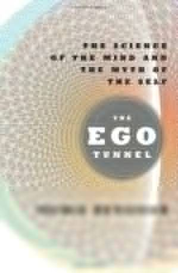
The Ego Tunnel
Metzinger, Thomas · 2009 · inglés
General
Filosofía de la mente; toca la ética de los estados alterados.
Ver ficha del libro
- Timothy LearyChange Your Brain2001
Change Your Brain
Leary, Timothy · 2001 · inglés
General
Recopilación póstuma.
Ver ficha del libro
- Timothy LearyChaos & Cyber Culture1994
Chaos & Cyber Culture
Leary, Timothy · 1994 · inglés
General
Ensayos de su etapa cibernética.
Ver ficha del libro
- Timothy LearyExo-Psychology1977
Exo-Psychology
Leary, Timothy · 1977 · inglés
General
El modelo de los ocho circuitos.
Ver ficha del libro
- Timothy LearyInfo-Psychology1987
Info-Psychology
Leary, Timothy · 1987 · inglés
General
Revisión de Exo-Psychology.
Ver ficha del libro
- Timothy LearyNeuropolitics1977
Neuropolitics
Leary, Timothy · 1977 · inglés
General
Ensayos de los setenta.
Ver ficha del libro
- Timothy LearyStart Your Own Religion1967
Start Your Own Religion
Leary, Timothy · 1967 · inglés
LSD
Folleto de la League for Spiritual Discovery.
Ver ficha del libro
- Timothy LearyThe Game of Life1979
The Game of Life
Leary, Timothy · 1979 · inglés
General
Desarrollo del modelo de los ocho circuitos.
Ver ficha del libro
- Timothy LearyYour Brain Is God2001
Your Brain Is God
Leary, Timothy · 2001 · inglés
General
Recopilación póstuma.
Ver ficha del libro
- W. Y. Evans-Wentz (ed.)The Tibetan Book of the Dead1927
The Tibetan Book of the Dead
Evans-Wentz, W. Y. (ed.) · 1927 · inglés
General
El texto en que Leary basó The Psychedelic Experience.
Ver ficha del libro
- Wade Richardson y Martin W. BallThe Psychedelic Mindmeld2024
The Psychedelic Mindmeld
Richardson, Wade; Ball, Martin W. · 2024 · inglés
5-MeO-DMT
Especulativo.
Ver ficha del libro
- Will JohnsonCannabis in Spiritual Practice2018
Cannabis in Spiritual Practice
Johnson, Will · 2018 · inglés
Cannabis
Guía breve; menor.
Ver ficha del libro
- Alain Ehrenberg (ed.)Individus sous influence1991
Individus sous influence
Ehrenberg, Alain (ed.) · 1991 · francés
General
Sociología francesa de los psicotropos.
Ver ficha del libro
- Araceli Manjón-CabezaLa solución2012
La solución
Manjón-Cabeza, Araceli · 2012 · español
General
Alegato por la legalización; choca con la regla de la web.
Ver ficha del libro
- Charles A. ReichThe Greening of America1970
The Greening of America
Reich, Charles A. · 1970 · inglés
General
Manifiesto de época sobre la nueva consciencia.
Ver ficha del libro
- Dan BaumSmoke and Mirrors1996
Smoke and Mirrors: The War on Drugs and the Politics of Failure
Baum, Dan · 1996 · inglés
General
Historia política de la guerra contra las drogas.
Ver ficha del libro
- David F. MustoThe American Disease1973
The American Disease: Origins of Narcotic Control
Musto, David F. · 1973 · inglés
General
Historia del control de drogas en EE. UU.; eje legal.
Ver ficha del libro
- David T. CourtwrightThe Age of Addiction2019
The Age of Addiction
Courtwright, David T. · 2019 · inglés
General
La industria del hábito; tangencial.
Ver ficha del libro
- Marilyn FergusonThe Aquarian Conspiracy1980
The Aquarian Conspiracy
Ferguson, Marilyn · 1980 · inglés
General
Manifiesto de la nueva consciencia; tangencial.
Ver ficha del libro
- Mike GrayDrug Crazy1998
Drug Crazy
Gray, Mike · 1998 · inglés
General
Crónica de la guerra contra las drogas; centrado en política.
Ver ficha del libro
- Alan WattsIn My Own Way1972
In My Own Way
Watts, Alan · 1972 · inglés
LSD
Autobiografía de Watts.
Ver ficha del libro
- Alberto Villoldo y Erik JendresenThe Four Winds1990
The Four Winds: A Shaman's Odyssey into the Amazon
Villoldo, Alberto; Jendresen, Erik · 1990 · inglés
AyahuascaMescalina
Relato novelado de corte new age.
Ver ficha del libro
- Amy WallaceSorcerer's Apprentice2003
Sorcerer's Apprentice: My Life with Carlos Castaneda
Wallace, Amy · 2003 · inglés
General
Memoria del círculo íntimo de Castaneda.
Ver ficha del libro
- Bernard RosemanThe Peyote Story1963
The Peyote Story
Roseman, Bernard · 1963 · inglés
Mescalina
Relato temprano de experiencias con peyote.
Ver ficha del libro
- Dick KhanDMT & My Occult Mind2017
DMT & My Occult Mind
Khan, Dick · 2017 · inglés
DMT
Diario de cientos de experiencias; autoedición.
Ver ficha del libro
- Diego UgaldeLeading From The Deep
Leading From The Deep
Ugalde, Diego · inglés
General
Un Navy SEAL y los psicodélicos; tangencial.
Ver ficha del libro
- Donald HallDock Ellis in the Country of Baseball1976
Dock Ellis in the Country of Baseball
Hall, Donald · 1976 · inglés
LSD
El jugador que lanzó un partido perfecto bajo LSD; anecdótico.
Ver ficha del libro
- Elizabeth GipsScrapbook of a Haight Ashbury Pilgrim1991
Scrapbook of a Haight Ashbury Pilgrim
Gips, Elizabeth · 1991 · inglés
LSD
Diario personal de la época; menor.
Ver ficha del libro
- Emmett GroganRingolevio1972
Ringolevio
Grogan, Emmett · 1972 · inglés
LSD
Memorias del fundador de los Diggers.
Ver ficha del libro
- FleaAcid for the Children2019
Acid for the Children
Flea · 2019 · inglés
General
Memorias de un músico; tangencial.
Ver ficha del libro
- Florence WilliamsHeartbreak2022
Heartbreak: A Personal and Scientific Journey
Williams, Florence · 2022 · inglés
MDMA
Duelo amoroso y ciencia, con un episodio de terapia con MDMA.
Ver ficha del libro
- Howard MarksMr Nice1996
Mr Nice
Marks, Howard · 1996 · inglés
Cannabis
Memorias de un contrabandista; tangencial.
Ver ficha del libro
- James W. JessoThe True Light of Darkness2015
The True Light of Darkness
Jesso, James W. · 2015 · inglés
Psilocibina
Relato de una experiencia difícil con hongos.
Ver ficha del libro
- John C. Lilly y Antonietta LillyThe Dyadic Cyclone1976
The Dyadic Cyclone
Lilly, John C.; Lilly, Antonietta · 1976 · inglés
Ketamina
Autobiografía de pareja; menor.
Ver ficha del libro
- John O'ConnorA Short, Strange Trip2026
A Short, Strange Trip
O'Connor, John · 2026 · inglés
General
Memoria reciente; contenido sin comprobar.
Ver ficha del libro
- Kary MullisDancing Naked in the Mind Field1998
Dancing Naked in the Mind Field
Mullis, Kary · 1998 · inglés
LSD
Memorias del Nobel que atribuyó ideas a la LSD.
Ver ficha del libro
- Katie BakerWhen the Universe Holds Your Hair Back
When the Universe Holds Your Hair Back
Baker, Katie · inglés
General
Memoria personal; poco conocida.
Ver ficha del libro
- Kelsi SherenBrass & Unity2023
Brass & Unity
Sheren, Kelsi · 2023 · inglés
General
Memoria de una veterana; tangencial.
Ver ficha del libro
- Krystle ColeLysergic2005
Lysergic
Cole, Krystle · 2005 · inglés
LSD
Memoria del caso del silo de misiles de Kansas; autoedición.
Ver ficha del libro
- Margaret De WysBlack Smoke2009
Black Smoke
De Wys, Margaret · 2009 · inglés
Ayahuasca
Memoria personal de curación en Ecuador.
Ver ficha del libro
- Nicholas MurrayAldous Huxley2002
Aldous Huxley: An English Intellectual
Murray, Nicholas · 2002 · inglés
Mescalina
Biografía más reciente.
Ver ficha del libro
- Peter CoyoteSleeping Where I Fall1998
Sleeping Where I Fall
Coyote, Peter · 1998 · inglés
LSD
Memorias de los Diggers y las comunas.
Ver ficha del libro
- Philip ListerA Short Good Life
A Short Good Life
Lister, Philip · inglés
General
Memoria de un padre sobre la muerte de su hija; relación lateral con el tema.
Ver ficha del libro
- Rob Zahn y Leonard SweetLSD to Galilee2026
LSD to Galilee
Zahn, Rob; Sweet, Leonard · 2026 · inglés
LSD
Testimonio religioso; menor.
Ver ficha del libro
- Ronald SandisonA Century of Psychiatry, Psychotherapy and Group Analysis2001
A Century of Psychiatry, Psychotherapy and Group Analysis
Sandison, Ronald · 2001 · inglés
LSD
Memorias del pionero británico de la terapia psicolítica.
Ver ficha del libro
- Scott EymanCary Grant2020
Cary Grant: A Brilliant Disguise
Eyman, Scott · 2020 · inglés
LSD
Biografía con su terapia con LSD; tangencial.
Ver ficha del libro
- Shannon NeringThe Mother Vine2026
The Mother Vine
Nering, Shannon · 2026 · inglés
Ayahuasca
Memoria reciente; poco conocida.
Ver ficha del libro
- Tahir ShahTrail of Feathers2001
Trail of Feathers
Shah, Tahir · 2001 · inglés
Ayahuasca
Libro de viajes por Perú que termina en la ayahuasca.
Ver ficha del libro
- Tom Soloway PinksonThe Psychedelic Shaman2025
The Psychedelic Shaman
Pinkson, Tom Soloway · 2025 · inglés
Mescalina
Memorias recientes del mismo autor.
Ver ficha del libro
- Aleister CrowleyDiary of a Drug Fiend1922
Diary of a Drug Fiend
Crowley, Aleister · 1922 · inglés
CocaOpio
Novela de Crowley sobre adicción y voluntad.
Ver ficha del libro
- Anónimo (Beatrice Sparks)Go Ask Alice1971
Go Ask Alice
Anónimo (Beatrice Sparks) · 1971 · inglés
LSD
Falso diario antidroga; interesa junto a Unmask Alice, que ya está.
Ver ficha del libro
- Bayard TaylorThe Lands of the Saracen1855
The Lands of the Saracen
Taylor, Bayard · 1855 · inglés
Cannabis
Libro de viajes con un célebre capítulo sobre el hachís.
Ver ficha del libro
- Brian W. AldissBarefoot in the Head1969
Barefoot in the Head
Aldiss, Brian W. · 1969 · inglés
LSD
Ciencia ficción sobre una Europa bombardeada con psicodélicos.
Ver ficha del libro
- Carlos CastanedaTales of Power1974
Tales of Power
Castaneda, Carlos · 1974 · inglés
General
Cuarto libro de la serie; ya sin plantas.
Ver ficha del libro
- Florinda DonnerShabono1982
Shabono
Donner, Florinda · 1982 · inglés
Yopo y rapés
Relato de autenticidad discutida entre los yanomami.
Ver ficha del libro
- Frank HerbertDune1965
Dune
Herbert, Frank · 1965 · inglés
Psilocibina
Clásico de ciencia ficción con una droga visionaria en su centro.
Ver ficha del libro
- Georg Schäfer y Nan CuzIn the Kingdom of Mescal1968
In the Kingdom of Mescal
Schäfer, Georg; Cuz, Nan · 1968 · inglés
Mescalina
Cuento ilustrado sobre el peyote; curiosidad de época.
Ver ficha del libro
- Gilbert SheltonThe Fabulous Furry Freak Brothers1971
The Fabulous Furry Freak Brothers
Shelton, Gilbert · 1971 · inglés
Cannabis
Cómic emblemático de la contracultura.
Ver ficha del libro
- John Uri LloydEtidorhpa1895
Etidorhpa
Lloyd, John Uri · 1895 · inglés
General
Novela visionaria de un farmacéutico del siglo XIX.
Ver ficha del libro
- Ken KeseyDemon Box1986
Demon Box
Kesey, Ken · 1986 · inglés
LSD
Relatos y crónicas de los años posteriores a los Pranksters.
Ver ficha del libro
- René DaumalLe Mont Analogue1952
Le Mont Analogue
Daumal, René · 1952 · francés
General
Novela iniciática de un autor marcado por sus experimentos químicos.
Ver ficha del libro
- Robert Shea y Robert Anton WilsonIlluminatus!1975
Illuminatus!
Shea, Robert; Wilson, Robert Anton · 1975 · inglés
LSD
Trilogía satírica y conspirativa de la contracultura.
Ver ficha del libro
- T. C. BoyleDrop City2003
Drop City
Boyle, T. C. · 2003 · inglés
LSD
Novela sobre una comuna hippie.
Ver ficha del libro
- Tao LinTaipei2013
Taipei
Lin, Tao · 2013 · inglés
General
Novela generacional atravesada por las drogas.
Ver ficha del libro
- Thomas PynchonInherent Vice2009
Inherent Vice
Pynchon, Thomas · 2009 · inglés
Cannabis
Novela negra en la resaca del sueño hippie.
Ver ficha del libro
- Thomas PynchonThe Crying of Lot 491966
The Crying of Lot 49
Pynchon, Thomas · 1966 · inglés
LSD
Novela de época con la LSD de fondo.
Ver ficha del libro
- Timothy LearyWhat Does WoMan Want?1976
What Does WoMan Want?
Leary, Timothy · 1976 · inglés
General
Novela autobiográfica.
Ver ficha del libro
- Tom RobbinsAnother Roadside Attraction1971
Another Roadside Attraction
Robbins, Tom · 1971 · inglés
General
Novela contracultural.
Ver ficha del libro
- Alan BisbortThe White Rabbit and Other Delights1996
The White Rabbit and Other Delights: East Totem West
Bisbort, Alan · 1996 · inglés
LSD
Historia de una editora de carteles psicodélicos.
Ver ficha del libro
- Alex GreyTransfigurations2001
Transfigurations
Grey, Alex · 2001 · inglés
General
Segundo volumen de su obra.
Ver ficha del libro
- Alex Grey y Allyson GreyNet of Being2012
Net of Being
Grey, Alex; Grey, Allyson · 2012 · inglés
General
Tercer volumen de su obra.
Ver ficha del libro
- Erik Davis y Pablo EchaurrenTrue Visions2006
True Visions
Davis, Erik; Echaurren, Pablo · 2006 · inglés
General
Catálogo de arte psicodélico; raro.
Ver ficha del libro
- Jack Stevenson (ed.)Addicted2000
Addicted: The Myth and Menace of Drugs in Film
Stevenson, Jack (ed.) · 2000 · inglés
General
Las drogas en el cine.
Ver ficha del libro
- Wolfgang Sterneck (ed.)Psychedelika1997
Psychedelika: Kultur, Vision und Kritik
Sterneck, Wolfgang (ed.) · 1997 · alemán
General
Antología alemana de cultura psicodélica.
Ver ficha del libro
- Adam GottliebLegal Highs1973
Legal Highs
Gottlieb, Adam · 1973 · inglés
General
Catálogo breve de plantas y sustancias psicoactivas legales en su época.
Ver ficha del libro
- Adam GottliebThe Psilocybin Producer's Guide1976
The Psilocybin Producer's Guide
Gottlieb, Adam · 1976 · inglés
Psilocibina
Folleto histórico de cultivo.
Ver ficha del libro
- Gary P. MenserHallucinogenic and Poisonous Mushroom Field Guide1977
Hallucinogenic and Poisonous Mushroom Field Guide
Menser, Gary P. · 1977 · inglés
Psilocibina
Guía de campo antigua, superada por Stamets.
Ver ficha del libro
- Hudson GrubberGrowing the Hallucinogens1973
Growing the Hallucinogens
Grubber, Hudson · 1973 · inglés
General
Folleto de cultivo.
Ver ficha del libro
- Jorge CervantesMarijuana Horticulture1983
Marijuana Horticulture
Cervantes, Jorge · 1983 · inglés
Cannabis
Manual de cultivo; tangencial a la divulgación.
Ver ficha del libro
- Paul StametsGrowing Gourmet and Medicinal Mushrooms1993
Growing Gourmet and Medicinal Mushrooms
Stamets, Paul · 1993 · inglés
General
Manual de cultivo de hongos no psicoactivos; tangencial.
Ver ficha del libro
- Richard Alan MillerThe Magical and Ritual Use of Herbs1983
The Magical and Ritual Use of Herbs
Miller, Richard Alan · 1983 · inglés
General
Guía breve de hierbas psicoactivas legales.
Ver ficha del libro
- Stephen Harrod BuhnerSacred and Herbal Healing Beers1998
Sacred and Herbal Healing Beers
Buhner, Stephen Harrod · 1998 · inglés
General
Cervezas rituales con plantas psicoactivas.
Ver ficha del libro
- Ulrike Preissel y Hans-Georg PreisselBrugmansia and Datura2002
Brugmansia and Datura: Angel's Trumpets and Thorn Apples
Preissel, Ulrike; Preissel, Hans-Georg · 2002 · inglés
Datura y solanáceas
Guía de jardinería; sin enfoque psicoactivo.
Ver ficha del libro